<article class="wechat-article"><div class="rich_media_content js_underline_content autoTypeSetting24psection" id="js_content" style=""><section style="box-sizing: border-box; font-style: normal; font-weight: 400; text-align: justify; font-size: 16px; color: rgb(62, 62, 62); visibility: visible; margin-bottom: 0px;"><section style="text-align: center; margin-top: 10px; margin-bottom: 10px; line-height: 0; box-sizing: border-box; visibility: visible;"><section style="max-width: 100%; vertical-align: middle; display: inline-block; line-height: 0; width: 100%; box-sizing: border-box; visibility: visible;"><video src="../_shared/ff0fb08683c17ea4.mp4" autoplay loop muted playsinline webkit-playsinline x5-video-player-type="h5-page" x5-video-player-fullscreen="false"></video></section></section><p style="white-space: normal; margin: 0px; padding: 0px; box-sizing: border-box; visibility: visible;"><span style="visibility: visible;"><br style="visibility: visible;"/></span></p><section style="text-align: center; margin-top: 10px; margin-bottom: 10px; line-height: 0; box-sizing: border-box; visibility: visible;"><section style="max-width: 100%; vertical-align: middle; display: inline-block; line-height: 0; width: 100%; box-sizing: border-box; visibility: visible;"><video src="../_shared/a21fb9efed03f546.mp4" autoplay loop muted playsinline webkit-playsinline x5-video-player-type="h5-page" x5-video-player-fullscreen="false"></video></section></section><p style="white-space: normal; margin: 0px; padding: 0px; box-sizing: border-box; visibility: visible;"><span style="visibility: visible;"><br style="visibility: visible;"/></span></p><section style="text-align: center; margin-top: 10px; margin-bottom: 10px; line-height: 0; box-sizing: border-box; visibility: visible;"><section style="max-width: 100%; vertical-align: middle; display: inline-block; line-height: 0; width: 25%; height: auto; box-sizing: border-box; visibility: visible;"></section></section><section style="text-align: center;color: rgb(241, 151, 0);line-height: 2;letter-spacing: 2px;padding: 0px 10px;box-sizing: border-box;"><p style="margin: 0px;padding: 0px;box-sizing: border-box;"><b style="box-sizing: border-box;"><span>前言</span></b></p></section><p style="white-space: normal;margin: 0px;padding: 0px;box-sizing: border-box;"><span><br/></span></p><section style="font-size: 15px;line-height: 2;letter-spacing: 2px;padding: 0px 10px;box-sizing: border-box;"><p style="white-space: normal;margin: 0px;padding: 0px;box-sizing: border-box;"><span>“侦探”是钥匙玩校历年来最受孩子们欢迎的主题之一，解谜也是学习与玩耍相结合的经典模式。</span></p><p style="white-space: normal;margin: 0px;padding: 0px;box-sizing: border-box;"><span><br/></span></p><p style="white-space: normal;margin: 0px;padding: 0px;box-sizing: border-box;"><span>2025年，基于过往两期的侦探主题营得到的积极回应，我们大胆尝试了将备受好评的“学院制”模式与“侦探”主题相结合，更丰富的内容，更紧凑的日程，带来了“1+1&gt;2”的好玩。今年，“名侦探学院”再次升级，各位少年侦探的切磋、探秘、</span><strong style="box-sizing: border-box;"><span style="color: rgb(241, 151, 0);box-sizing: border-box;"><span>冒险将从5天加长到7天</span></span></strong><span>，让这场思维的历练更加酣畅淋漓！</span></p><p style="white-space: normal;margin: 0px;padding: 0px;box-sizing: border-box;"><span><br/></span></p><p style="white-space: normal;margin: 0px;padding: 0px;box-sizing: border-box;"><strong style="box-sizing: border-box;"><span style="color: rgb(241, 151, 0);box-sizing: border-box;"><span>如果您愿意光临今年这场盛大的侦探Party，可以联系下方小助手扫码报名。</span></span></strong><span>不管是身经百战的老玩家，还是初出茅庐的新手侦探，我们都鼓励您完成后续文字的阅读，因为此刻，游戏已经开始了~</span></p><p style="white-space: normal;margin: 0px;padding: 0px;box-sizing: border-box;"><span><br/></span></p></section><section style='-webkit-tap-highlight-color: rgba(0, 0, 0, 0);margin: 0px;padding: 0px;outline: 0px;max-width: 100%;box-sizing: border-box;overflow-wrap: break-word !important;color: rgb(62, 62, 62);font-family: "PingFang SC", system-ui, -apple-system, BlinkMacSystemFont, "Helvetica Neue", "Hiragino Sans GB", "Microsoft YaHei UI", "Microsoft YaHei", Arial, sans-serif;font-style: normal;font-variant-ligatures: normal;font-variant-caps: normal;font-weight: 400;letter-spacing: 2px;orphans: 2;text-align: justify;text-indent: 0px;text-transform: none;widows: 2;word-spacing: 0px;-webkit-text-stroke-width: 0px;white-space: normal;background-color: rgb(255, 255, 255);text-decoration-thickness: initial;text-decoration-style: initial;text-decoration-color: initial;font-size: 16px;'><section style="-webkit-tap-highlight-color: rgba(0, 0, 0, 0);margin: 0px;padding: 0px 10px;outline: 0px;max-width: 100%;box-sizing: border-box;overflow-wrap: break-word !important;font-size: 15px;line-height: 2;letter-spacing: 2px;"><section style="-webkit-tap-highlight-color: rgba(0, 0, 0, 0);margin: 0px;padding: 0px;outline: 0px;max-width: 100%;box-sizing: border-box;overflow-wrap: break-word !important;font-style: normal;font-weight: 400;text-align: justify;font-size: 16px;color: rgb(62, 62, 62);"><section style="-webkit-tap-highlight-color: rgba(0, 0, 0, 0);margin: 0px;padding: 0px;outline: 0px;max-width: 100%;box-sizing: border-box;overflow-wrap: break-word !important;will-change: transform;"><section style="-webkit-tap-highlight-color: rgba(0, 0, 0, 0);margin: 10px 0px;padding: 0px;outline: 0px;max-width: 100%;box-sizing: border-box;overflow-wrap: break-word !important;text-align: center;line-height: 0;will-change: transform;"><section style="-webkit-tap-highlight-color: rgba(0, 0, 0, 0);margin: 0px;padding: 0px;outline: 0px;max-width: 100%;box-sizing: border-box;overflow-wrap: break-word !important;vertical-align: middle;display: inline-block;width: 197.096px;height: auto;"></section></section></section></section></section></section><p style='-webkit-tap-highlight-color: rgba(0, 0, 0, 0);margin: 0px;padding: 0px;outline: 0px;max-width: 100%;box-sizing: border-box;overflow-wrap: break-word !important;clear: both;min-height: 1em;color: rgb(62, 62, 62);font-family: "PingFang SC", system-ui, -apple-system, BlinkMacSystemFont, "Helvetica Neue", "Hiragino Sans GB", "Microsoft YaHei UI", "Microsoft YaHei", Arial, sans-serif;font-style: normal;font-variant-ligatures: normal;font-variant-caps: normal;font-weight: 400;letter-spacing: 2px;orphans: 2;text-indent: 0px;text-transform: none;widows: 2;word-spacing: 0px;-webkit-text-stroke-width: 0px;white-space: normal;background-color: rgb(255, 255, 255);text-decoration-thickness: initial;text-decoration-style: initial;text-decoration-color: initial;text-align: center;font-size: 14px;'><span style="-webkit-tap-highlight-color: rgba(0, 0, 0, 0);margin: 0px;padding: 0px;outline: 0px;max-width: 100%;box-sizing: border-box !important;overflow-wrap: break-word !important;">扫描二维码报名</span></p><section style='-webkit-tap-highlight-color: rgba(0, 0, 0, 0);margin: 10px 0px;padding: 0px;outline: 0px;max-width: 100%;box-sizing: border-box;overflow-wrap: break-word !important;color: rgb(62, 62, 62);font-family: "PingFang SC", system-ui, -apple-system, BlinkMacSystemFont, "Helvetica Neue", "Hiragino Sans GB", "Microsoft YaHei UI", "Microsoft YaHei", Arial, sans-serif;font-size: 15px;font-style: normal;font-variant-ligatures: normal;font-variant-caps: normal;font-weight: 400;letter-spacing: 2px;orphans: 2;text-indent: 0px;text-transform: none;widows: 2;word-spacing: 0px;-webkit-text-stroke-width: 0px;white-space: normal;background-color: rgb(255, 255, 255);text-decoration-thickness: initial;text-decoration-style: initial;text-decoration-color: initial;text-align: center;line-height: 0;'><section style="-webkit-tap-highlight-color: rgba(0, 0, 0, 0);margin: 0px;padding: 0px;outline: 0px;max-width: 100%;box-sizing: border-box;overflow-wrap: break-word !important;vertical-align: middle;display: inline-block;line-height: 0;width: 203.093px;height: auto;">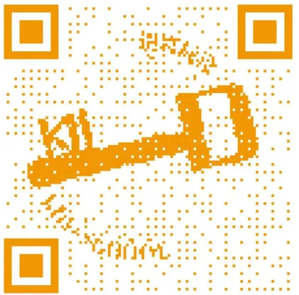</section></section><section style='-webkit-tap-highlight-color: rgba(0, 0, 0, 0);margin: 0px;padding: 0px 10px;outline: 0px;max-width: 100%;box-sizing: border-box;overflow-wrap: break-word !important;color: rgb(62, 62, 62);font-family: "PingFang SC", system-ui, -apple-system, BlinkMacSystemFont, "Helvetica Neue", "Hiragino Sans GB", "Microsoft YaHei UI", "Microsoft YaHei", Arial, sans-serif;font-style: normal;font-variant-ligatures: normal;font-variant-caps: normal;font-weight: 400;letter-spacing: 2px;orphans: 2;text-indent: 0px;text-transform: none;widows: 2;word-spacing: 0px;-webkit-text-stroke-width: 0px;white-space: normal;background-color: rgb(255, 255, 255);text-decoration-thickness: initial;text-decoration-style: initial;text-decoration-color: initial;text-align: center;font-size: 14px;'><p style="-webkit-tap-highlight-color: rgba(0, 0, 0, 0);margin: 0px;padding: 0px;outline: 0px;max-width: 100%;box-sizing: border-box;overflow-wrap: break-word !important;clear: both;min-height: 1em;"><span style="-webkit-tap-highlight-color: rgba(0, 0, 0, 0);margin: 0px;padding: 0px;outline: 0px;max-width: 100%;box-sizing: border-box !important;overflow-wrap: break-word !important;">扫码添加客服小钥匙</span></p></section><p style="white-space: normal;margin: 0px;padding: 0px;box-sizing: border-box;"><span><br/></span></p><section style="text-align: center;margin-top: 10px;margin-bottom: 10px;line-height: 0;box-sizing: border-box;"><section style="max-width: 100%;vertical-align: middle;display: inline-block;line-height: 0;width: 25%;height: auto;box-sizing: border-box;">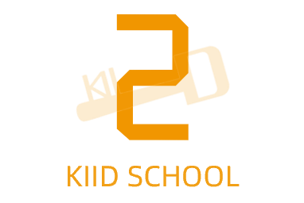</section></section><section style="text-align: center;color: rgb(241, 151, 0);line-height: 2;letter-spacing: 2px;padding: 0px 10px;box-sizing: border-box;"><p style="margin: 0px;padding: 0px;box-sizing: border-box;"><strong style="box-sizing: border-box;"><span>升级版的名侦探学院</span></strong></p></section><p style="white-space: normal;margin: 0px;padding: 0px;box-sizing: border-box;"><span><br/></span></p><section style="font-size: 15px;line-height: 2;letter-spacing: 2px;padding: 0px 10px;box-sizing: border-box;"><p style="white-space: normal;margin: 0px;padding: 0px;box-sizing: border-box;"><span>一直以来，侦探主题的夏令营都是钥匙玩校的拿手好戏。</span><span style="color: rgb(241, 151, 0);box-sizing: border-box;"><strong style="box-sizing: border-box;"><span>“抽丝剥茧”的游戏本就引人入胜，而在那些经典的推理小说中，被快节奏的信息流淹没的孩子也总是能慢下来。</span></strong></span></p><p style="white-space: normal;margin: 0px;padding: 0px;box-sizing: border-box;"><span><br/></span></p><p style="white-space: normal;margin: 0px;padding: 0px;box-sizing: border-box;"><span>我们曾带领孩子挑战</span><span style="color: rgb(241, 151, 0);box-sizing: border-box;"><strong style="box-sizing: border-box;"><span>埃勒里•奎因</span></strong></span><span>的经典读者挑战，也沿着</span><span style="color: rgb(241, 151, 0);box-sizing: border-box;"><strong style="box-sizing: border-box;"><span>江户川乱步</span></strong></span><span>的视野做一个“现实中的诗人”，我们追随</span><span style="color: rgb(241, 151, 0);box-sizing: border-box;"><strong style="box-sizing: border-box;"><span>约翰·狄克森·卡尔</span></strong></span><span>的步伐全景体验密室推理，也在</span><span style="color: rgb(241, 151, 0);box-sizing: border-box;"><strong style="box-sizing: border-box;"><span>柯南道尔</span></strong></span><span>、</span><span style="color: rgb(241, 151, 0);box-sizing: border-box;"><strong style="box-sizing: border-box;"><span>阿加莎·克里斯蒂</span></strong></span><span>等作家的经典作品里，寻找启发思考的契机，为学习的热情保驾续航。我们也借助剑桥大学教授</span><span style="color: rgb(241, 151, 0);box-sizing: border-box;"><strong style="box-sizing: border-box;"><span>艾伦·麦克法兰</span></strong></span><span>《给山姆的信》，带孩子们在推理作品中学习现实的知识。</span></p></section><p style="white-space: normal;margin: 0px;padding: 0px;box-sizing: border-box;"><span><br/></span></p><section style="text-align: left;justify-content: flex-start;display: flex;flex-flow: row;box-sizing: border-box;"><section style="display: inline-block;vertical-align: top;width: 50%;align-self: flex-start;flex: 0 0 auto;padding: 0px 5px 0px 0px;margin: 5px 0px;box-sizing: border-box;"><section style="line-height: 0;box-sizing: border-box;"><section style="max-width: 100%;vertical-align: middle;display: inline-block;line-height: 0;box-sizing: border-box;">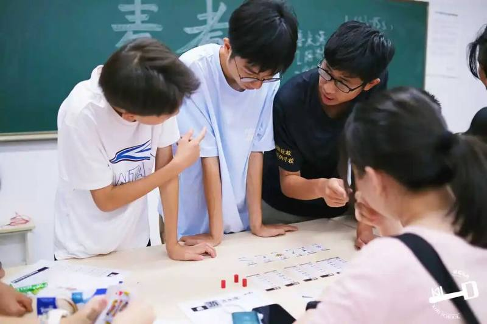</section></section></section><section style="display: inline-block;vertical-align: top;width: 50%;align-self: flex-start;flex: 0 0 auto;padding: 0px 0px 0px 5px;margin: 5px 0px;box-sizing: border-box;"><section style="line-height: 0;box-sizing: border-box;"><section style="max-width: 100%;vertical-align: middle;display: inline-block;line-height: 0;box-sizing: border-box;">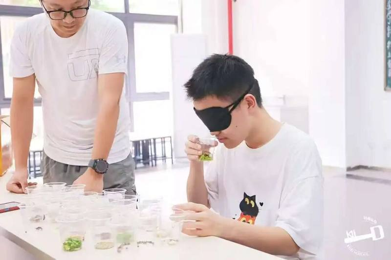</section></section></section></section><section style="text-align: left;justify-content: flex-start;display: flex;flex-flow: row;box-sizing: border-box;"><section style="display: inline-block;vertical-align: top;width: 50%;align-self: flex-start;flex: 0 0 auto;padding: 0px 5px 0px 0px;margin: 5px 0px;box-sizing: border-box;"><section style="line-height: 0;box-sizing: border-box;"><section style="max-width: 100%;vertical-align: middle;display: inline-block;line-height: 0;box-sizing: border-box;">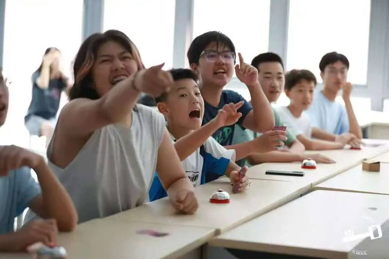</section></section></section><section style="display: inline-block;vertical-align: top;width: 50%;align-self: flex-start;flex: 0 0 auto;padding: 0px 0px 0px 5px;margin: 5px 0px;box-sizing: border-box;"><section style="line-height: 0;box-sizing: border-box;"><section style="max-width: 100%;vertical-align: middle;display: inline-block;line-height: 0;box-sizing: border-box;"></section></section></section></section><p style="white-space: normal;margin: 0px;padding: 0px;box-sizing: border-box;"><span><br/></span></p><section style="font-size: 15px;line-height: 2;letter-spacing: 2px;padding: 0px 10px;box-sizing: border-box;"><p style="white-space: normal;margin: 0px;padding: 0px;box-sizing: border-box;"><span>为了让更多孩子能够在一起体验这场“侦探游戏”，我们把钥匙玩校最丰富最好玩儿的“学院制”模式与侦探主题相结合，组建名侦探学院，并且专门提出了崭新的“侦探六艺”：</span><strong style="box-sizing: border-box;"><span style="color: rgb(241, 151, 0);box-sizing: border-box;"><span>常识、洞察、身手、逻辑、求真、辩证。</span></span></strong></p><p style="white-space: normal;margin: 0px;padding: 0px;box-sizing: border-box;"><span><br/></span></p><p style="white-space: normal;margin: 0px;padding: 0px;box-sizing: border-box;"><span>针对每名营员可能存在的个性化需求，老师们以这六项素养为抓手，设计了丰富的选修课程，从不同的侧面补足侦探技能，这些技能同时也是AI时代必备的通识素养。而营员们可以自由选择自己最感兴趣的角度来进行学习，就如同《极乐迪斯科》中的24种技能图谱，</span><span style="color: rgb(241, 151, 0);box-sizing: border-box;"><strong style="box-sizing: border-box;"><span>每个人都可以点亮自己专属的“技能树”，真正掌握一次学习的主动权，体验个性化学习的乐趣。</span></strong></span></p><p style="white-space: normal;margin: 0px;padding: 0px;box-sizing: border-box;"><span><br/></span></p><p style="white-space: normal;margin: 0px;padding: 0px;box-sizing: border-box;"><span>探案这件事将会贯穿于营期的始终，孩子们从入营开始就会被置于精心设计的迷局之中，层出不穷的谜题与“学院制”经典的比赛模式碰撞出更加有趣的角逐，确保孩子们的体验绝不仅限于课程。毕竟，</span><strong style="box-sizing: border-box;"><span style="color: rgb(241, 151, 0);box-sizing: border-box;"><span>在生活中一刻不停地探求才是学习最本真的状态</span></span></strong><span>，这正是名侦探学院制最想传达给孩子们的。</span></p><p style="white-space: normal;margin: 0px;padding: 0px;box-sizing: border-box;"><span><br/></span></p><p style="white-space: normal;margin: 0px;padding: 0px;box-sizing: border-box;"><span>这个夏天，在这场专属于少年侦探们的盛会中，让我们用形式多元、深浅不一的谜题，向五湖四海的小侦探们，下一封战书。让少年们在挑战中，得到思维模式的全面升级。</span></p></section><p style="white-space: normal;margin: 0px;padding: 0px;box-sizing: border-box;"><span><br/></span></p><section style="margin-top: 10px;margin-bottom: 10px;box-sizing: border-box;"><section style="margin-bottom: -1.4em;box-sizing: border-box;"><section style="width: 0.62em;height: 0.62em;border-left: 1px solid rgb(241, 151, 0);border-top: 1px solid rgb(241, 151, 0);box-sizing: border-box;"><svg style="float:left;line-height:0;width:0;vertical-align:top;"></svg></section><section style="width: 2.5em;height: 1.4em;margin-left: 0.31em;margin-top: -0.31em;border-left: 1px solid rgb(241, 151, 0);border-top: 1px solid rgb(241, 151, 0);box-sizing: border-box;"><svg style="float:left;line-height:0;width:0;vertical-align:top;"></svg></section></section><section style="padding: 0px 0.31em;box-sizing: border-box;"><section style="display: inline-block;vertical-align: top;width: 100%;padding: 10px;box-sizing: border-box;"><section style="text-align: center;line-height: 2;letter-spacing: 2px;padding: 0px 10px;box-sizing: border-box;"><p style="text-align: justify;white-space: normal;margin: 0px;padding: 0px;box-sizing: border-box;"><span style="font-size: 15px;box-sizing: border-box;"><span>如果您的孩子即将奔赴钥匙玩校名侦探学院，请务必将下文这份召集令转发给TA。正确破解这份召集令上的隐藏秘密（谜底唯一）的成员，将在营期中解锁最具价值的隐藏侦探体验！（在营期开始前，需要将破解出的答案发送给“小钥匙”</span></span><span style="font-size: 15px;box-sizing: border-box;"><span>哦！）</span></span></p></section></section></section><section style="width: 2.5em;margin-top: -1.4em;margin-left: auto;box-sizing: border-box;"><section style="width: 2.5em;height: 1.4em;margin-bottom: -0.31em;margin-left: -0.31em;border-right: 1px solid rgb(241, 151, 0);border-bottom: 1px solid rgb(241, 151, 0);box-sizing: border-box;"><svg style="float:left;line-height:0;width:0;vertical-align:top;"></svg></section></section><section style="width: 0.62em;height: 0.62em;margin-left: auto;border-right: 1px solid rgb(241, 151, 0);border-bottom: 1px solid rgb(241, 151, 0);box-sizing: border-box;"><svg style="float:left;line-height:0;width:0;vertical-align:top;"></svg></section></section><p style="white-space: normal;margin: 0px;padding: 0px;box-sizing: border-box;"><span><br/></span></p><section style="text-align: center;margin-top: 10px;margin-bottom: 10px;line-height: 0;box-sizing: border-box;"><section style="max-width: 100%;vertical-align: middle;display: inline-block;line-height: 0;width: 100%;box-sizing: border-box;">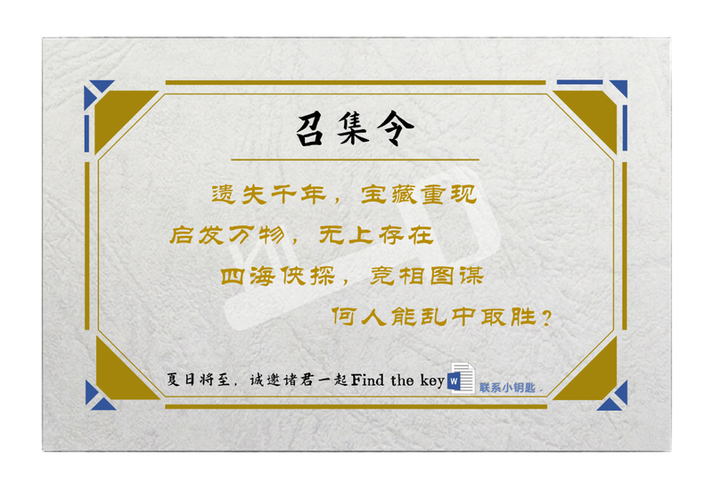</section></section><p style="white-space: normal;margin: 0px;padding: 0px;box-sizing: border-box;"><span><br/></span></p><section style="text-align: center;margin-top: 10px;margin-bottom: 10px;line-height: 0;box-sizing: border-box;"><section style="max-width: 100%;vertical-align: middle;display: inline-block;line-height: 0;width: 25%;height: auto;box-sizing: border-box;">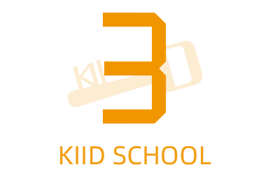</section></section><section style="text-align: center;color: rgb(241, 151, 0);line-height: 2;letter-spacing: 2px;padding: 0px 10px;box-sizing: border-box;"><p style="margin: 0px;padding: 0px;box-sizing: border-box;"><strong style="box-sizing: border-box;"><span>为什么要做侦探营？</span></strong></p></section><p style="white-space: normal;margin: 0px;padding: 0px;box-sizing: border-box;"><span><br/></span></p><section style="font-size: 15px;line-height: 2;letter-spacing: 2px;padding: 0px 10px;box-sizing: border-box;"><p style="white-space: normal;margin: 0px;padding: 0px;box-sizing: border-box;"><span>逻辑推理有三种：归纳推理，演绎推理和溯因推理。</span></p><p style="white-space: normal;margin: 0px;padding: 0px;box-sizing: border-box;"><span><br/></span></p><p style="white-space: normal;margin: 0px;padding: 0px;box-sizing: border-box;"><strong style="box-sizing: border-box;"><span style="color: rgb(241, 151, 0);box-sizing: border-box;"><span>归纳推理</span></span></strong><span>是总结规律，同学们在学校里刷题考试，这一项被训练较多；</span></p><p style="white-space: normal;margin: 0px;padding: 0px;box-sizing: border-box;"><strong style="box-sizing: border-box;"><span style="color: rgb(241, 151, 0);box-sizing: border-box;"><span>演绎推理</span></span></strong><span>是根据规律预测结果，涉及批判性思维和逻辑学，学校里通常训练较少；</span></p><p style="white-space: normal;margin: 0px;padding: 0px;box-sizing: border-box;"><strong style="box-sizing: border-box;"><span style="color: rgb(241, 151, 0);box-sizing: border-box;"><span>溯因推理</span></span></strong><span>是从结果反推最可能的原因，是基于不完全信息提出合理的猜想假设，现在的孩子们几乎没接受过这样的训练。</span></p><p style="white-space: normal;margin: 0px;padding: 0px;box-sizing: border-box;"><span><br/></span></p><p style="white-space: normal;margin: 0px;padding: 0px;box-sizing: border-box;"><span>AI时代充满变化，如何在不完全的信息里做判断，如何主动探索和灵活解决问题，是今天的孩子们格外需要学习的东西。</span></p><p style="white-space: normal;margin: 0px;padding: 0px;box-sizing: border-box;"><span><br/></span></p><p style="white-space: normal;margin: 0px;padding: 0px;box-sizing: border-box;"><span>补上学校不教但又如此重要的一课，是我们设计名侦探夏令营的重要原因。</span></p><p style="white-space: normal;margin: 0px;padding: 0px;box-sizing: border-box;"><span><br/></span></p><p style="white-space: normal;margin: 0px;padding: 0px;box-sizing: border-box;"><span>AI时代，找到一个问题的答案看似不难，但面对AI能够提供的如洪流般涌来的信息，如何在海量信息甚至AI幻觉中穿过噪音、整理混乱的思绪，打捞有价值的线索？</span></p><p style="white-space: normal;margin: 0px;padding: 0px;box-sizing: border-box;"><span><br/></span></p><p style="white-space: normal;margin: 0px;padding: 0px;box-sizing: border-box;"><span>不被迷惑、不轻信、不盲从——AI时代，我们需要的正是一种</span><strong style="box-sizing: border-box;"><span style="color: rgb(241, 151, 0);box-sizing: border-box;"><span>侦探思维</span></span></strong><span>。</span></p><p style="white-space: normal;margin: 0px;padding: 0px;box-sizing: border-box;"><span><br/></span></p><p style="white-space: normal;margin: 0px;padding: 0px;box-sizing: border-box;"><span>提起侦探，我们一定会想到那些经典的荧幕形象，他们总能从杂乱中理出头绪、从线索推演全貌，直到穿透迷雾找到真相——这种抽丝剥茧去求真的能力，才是孩子应对不确定时代的底气。</span></p><p style="white-space: normal;margin: 0px;padding: 0px;box-sizing: border-box;"><span><br/></span></p><p style="white-space: normal;margin: 0px;padding: 0px;box-sizing: border-box;"><span>有时候我们也会担心让孩子沉浸在密室、剧本杀等各类案件中，会不会受到负面的影响。但实际上，孩子是天生的侦探，他们本就乐于冒险，更愿意像侦探一样直面真实的处境，在解谜的过程中学到新技能。面对扑朔迷离的未来，这是我们期待为青少年们提供的侦探式的学习体验。</span></p><p style="white-space: normal;margin: 0px;padding: 0px;box-sizing: border-box;"><span><br/></span></p><p style="white-space: normal;margin: 0px;padding: 0px;box-sizing: border-box;"><span>到新的环境里，孩子们会好奇。把谜底藏起，孩子们会寻找，现象越奇特他们越想知道背后的答案。这就是从被动学习到主动学习的秘密。一旦他们执着于真相，那么</span><strong style="box-sizing: border-box;"><span style="color: rgb(241, 151, 0);box-sizing: border-box;"><span>吸收知识、整合信息、演绎推理、积极行动</span></span></strong><span>，这些都变成了理所应当的动作，而这些正是一个有内驱力的学习者最应该具备的素养。</span></p><p style="white-space: normal;margin: 0px;padding: 0px;box-sizing: border-box;"><span><br/></span></p><p style="white-space: normal;margin: 0px;padding: 0px;box-sizing: border-box;"><span>的确，一个对着习题苦思冥想的孩子看起来也是热爱钻研的，但其实，真实的情景更能激发他们探索的欲望。世界的真相可以引发一连串的好奇，这恰恰是目前的AI尚不可具备的能力：作为工具，它们的思考有“终点”；而作为人，只要世界还在运作和变换，我们就可以</span><strong style="box-sizing: border-box;"><span style="color: rgb(241, 151, 0);box-sizing: border-box;"><span>像一名侦探，在慎思和明辨中，不断地追问下去</span></span></strong><span>。</span></p></section><p style="white-space: normal;margin: 0px;padding: 0px;box-sizing: border-box;"><span><br/></span></p><section style="text-align: center;margin-top: 10px;margin-bottom: 10px;line-height: 0;box-sizing: border-box;"><section style="max-width: 100%;vertical-align: middle;display: inline-block;line-height: 0;width: 25%;height: auto;box-sizing: border-box;">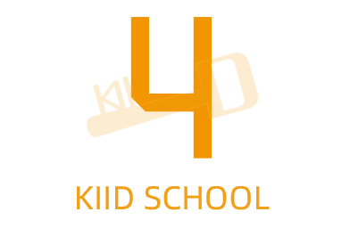</section></section><section style="text-align: center;color: rgb(241, 151, 0);line-height: 2;letter-spacing: 2px;padding: 0px 10px;box-sizing: border-box;"><p style="margin: 0px;padding: 0px;box-sizing: border-box;"><strong style="box-sizing: border-box;"><span>名侦探学院活动安排</span></strong></p></section><p style="white-space: normal;margin: 0px;padding: 0px;box-sizing: border-box;"><span><br/></span></p><section style="text-align: center;font-size: 15px;color: rgb(241, 151, 0);box-sizing: border-box;"><p style="margin: 0px;padding: 0px;box-sizing: border-box;"><strong style="box-sizing: border-box;"><span>侦探营日程表</span></strong></p></section><section style="text-align: center;margin-top: 10px;margin-bottom: 10px;line-height: 0;box-sizing: border-box;"><section style="max-width: 100%;vertical-align: middle;display: inline-block;line-height: 0;width: 100%;box-sizing: border-box;">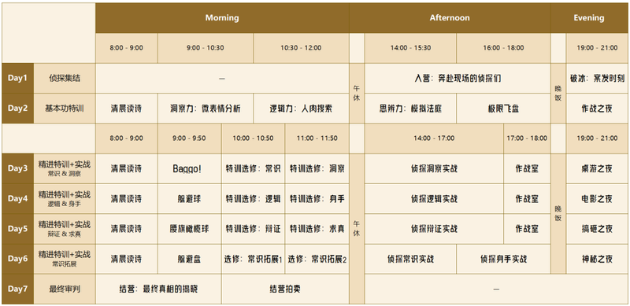</section></section><p style="white-space: normal;margin: 0px;padding: 0px;box-sizing: border-box;"><span><br/></span></p><section style="line-height: 2;letter-spacing: 2px;padding: 0px 10px;font-size: 15px;box-sizing: border-box;"><p style="white-space: normal;margin: 0px;padding: 0px;box-sizing: border-box;"><strong style="box-sizing: border-box;"><span style="background-color: rgb(241, 151, 0);color: rgb(255, 255, 255);box-sizing: border-box;"><span>Day1 侦探集结</span></span></strong></p><p style="white-space: normal;margin: 0px;padding: 0px;box-sizing: border-box;"><span style="box-sizing: border-box;"><span><br/></span></span></p><p style="white-space: normal;margin: 0px;padding: 0px;box-sizing: border-box;"><span>来自五湖四海的少年侦探们齐聚一堂，完成分院后彼此认识、组建战队，并在破冰游戏中初试锋芒，学习侦探守则——观察、记录、质疑。这一天，我们不只交到朋友，更点亮了那颗名叫“好奇心”的侦探徽章。</span></p></section><p style="white-space: normal;margin: 0px;padding: 0px;box-sizing: border-box;"><span><br/></span></p><section style="text-align: left;justify-content: flex-start;display: flex;flex-flow: row;box-sizing: border-box;"><section style="display: inline-block;vertical-align: top;width: 50%;align-self: flex-start;flex: 0 0 auto;padding: 0px 5px 0px 0px;margin: 5px 0px;box-sizing: border-box;"><section style="line-height: 0;box-sizing: border-box;"><section style="max-width: 100%;vertical-align: middle;display: inline-block;line-height: 0;box-sizing: border-box;">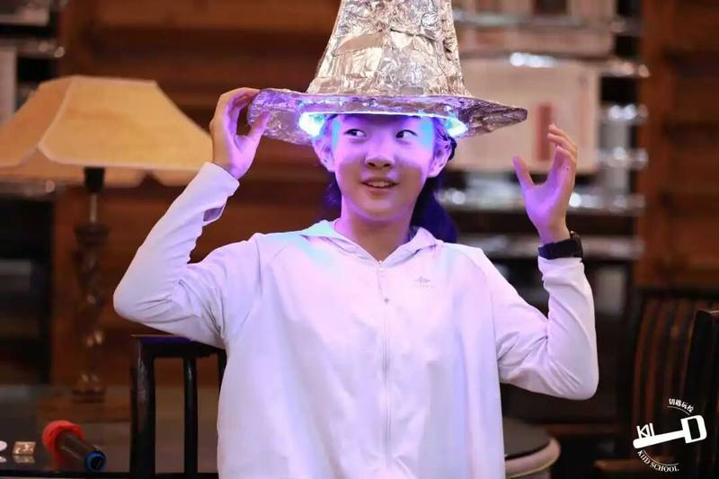</section></section></section><section style="display: inline-block;vertical-align: top;width: 50%;align-self: flex-start;flex: 0 0 auto;padding: 0px 0px 0px 5px;margin: 5px 0px;box-sizing: border-box;"><section style="line-height: 0;box-sizing: border-box;"><section style="max-width: 100%;vertical-align: middle;display: inline-block;line-height: 0;box-sizing: border-box;">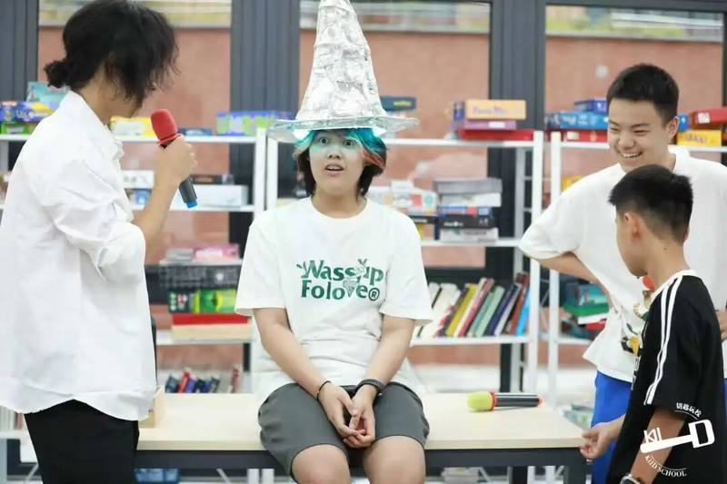</section></section></section></section><p style="white-space: normal;margin: 0px;padding: 0px;box-sizing: border-box;"><span><br/></span></p><section style="line-height: 2;letter-spacing: 2px;padding: 0px 10px;font-size: 15px;box-sizing: border-box;"><p style="white-space: normal;margin: 0px;padding: 0px;box-sizing: border-box;"><strong style="box-sizing: border-box;"><span style="background-color: rgb(241, 151, 0);color: rgb(255, 255, 255);box-sizing: border-box;"><span>Day2 侦探基本功特训</span></span></strong></p><p style="white-space: normal;margin: 0px;padding: 0px;box-sizing: border-box;"><strong style="box-sizing: border-box;"><span style="background-color: rgb(241, 151, 0);color: rgb(255, 255, 255);box-sizing: border-box;"><span><br/></span></span></strong></p><p style="white-space: normal;margin: 0px;padding: 0px;box-sizing: border-box;"><span>以走班制进行侦探基本功训练，掌握一名侦探需要的基本素养：洞察、逻辑、思辨能力和好身手，并在训练的过程里结识志同道合的好友，学会团队协作。</span></p><p style="white-space: normal;margin: 0px;padding: 0px;box-sizing: border-box;"><span><br/></span></p><p style="white-space: normal;margin: 0px;padding: 0px;box-sizing: border-box;"><span>同时，以学员为单位的侦探作战室第一次启动写少年侦探们将根据自己的兴趣和擅长，制定接下来每个人不同的训练和实战挑战。</span></p></section><p style="white-space: normal;margin: 0px;padding: 0px;box-sizing: border-box;"><span><br/></span></p><section style="text-align: left;justify-content: flex-start;display: flex;flex-flow: row;box-sizing: border-box;"><section style="display: inline-block;vertical-align: top;width: 50%;align-self: flex-start;flex: 0 0 auto;padding: 0px 5px 0px 0px;margin: 5px 0px;box-sizing: border-box;"><section style="line-height: 0;box-sizing: border-box;"><section style="max-width: 100%;vertical-align: middle;display: inline-block;line-height: 0;box-sizing: border-box;">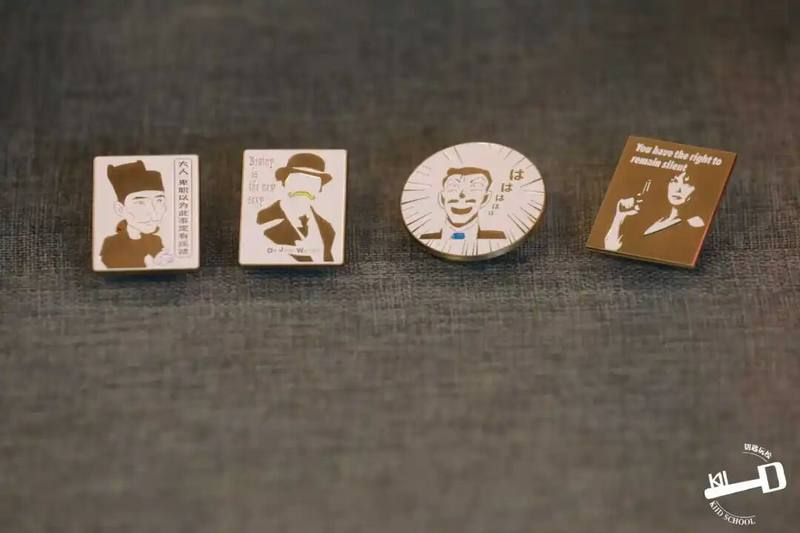</section></section></section><section style="display: inline-block;vertical-align: top;width: 50%;align-self: flex-start;flex: 0 0 auto;padding: 0px 0px 0px 5px;margin: 5px 0px;box-sizing: border-box;"><section style="line-height: 0;box-sizing: border-box;"><section style="max-width: 100%;vertical-align: middle;display: inline-block;line-height: 0;box-sizing: border-box;">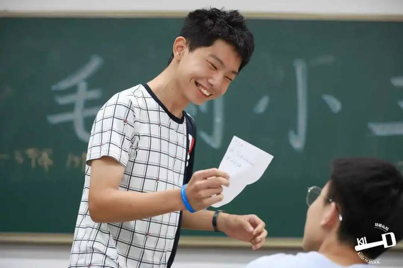</section></section></section></section><p style="white-space: normal;margin: 0px;padding: 0px;box-sizing: border-box;"><span><br/></span></p><section style="text-align: left;justify-content: flex-start;display: flex;flex-flow: row;margin: 10px 0px;box-sizing: border-box;"><section style="display: inline-block;vertical-align: top;width: auto;min-width: 5%;max-width: 100%;flex: 0 0 auto;height: auto;box-sizing: border-box;"><section style="text-align: justify;font-size: 35px;color: rgb(218, 218, 218);line-height: 1;box-sizing: border-box;"><p style="white-space: normal;margin: 0px;padding: 0px;box-sizing: border-box;"><span><br/></span></p></section></section><section style="display: inline-block;vertical-align: bottom;width: auto;align-self: flex-end;margin: 0px 0px 0px -11px;min-width: 5%;max-width: 100%;flex: 0 0 auto;height: auto;box-sizing: border-box;"><section style="justify-content: flex-start;display: flex;flex-flow: row;box-sizing: border-box;"><section style="display: inline-block;vertical-align: bottom;width: auto;flex: 0 0 0%;height: auto;align-self: flex-end;line-height: 0;box-sizing: border-box;"><section style="transform: rotateZ(306deg);-webkit-transform: rotateZ(306deg);-moz-transform: rotateZ(306deg);-o-transform: rotateZ(306deg);box-sizing: border-box;"><section style="margin: 0px 0px -15px;transform: translate3d(7px, 0px, 0px);-webkit-transform: translate3d(7px, 0px, 0px);-moz-transform: translate3d(7px, 0px, 0px);-o-transform: translate3d(7px, 0px, 0px);box-sizing: border-box;"><section style="display: inline-block;width: 22px;height: 22px;vertical-align: top;overflow: hidden;border-style: solid;border-width: 1px;border-color: rgb(241, 151, 0) rgba(255, 255, 255, 0) rgba(255, 255, 255, 0);background-color: rgb(255, 255, 255);box-shadow: rgb(255, 255, 255) 0px -4px 0px 0px;box-sizing: border-box;"><section style="text-align: justify;box-sizing: border-box;"><p style="white-space: normal;margin: 0px;padding: 0px;box-sizing: border-box;"><span><br/></span></p></section></section></section></section></section><section style="display: inline-block;vertical-align: bottom;width: auto;align-self: flex-end;flex: 0 0 auto;min-width: 5%;max-width: 100%;height: auto;z-index: 1;margin: 0px 0px 0px -5px;box-sizing: border-box;"><section style="text-align: justify;box-sizing: border-box;"><p style="white-space: normal;margin: 0px;padding: 0px;box-sizing: border-box;"><b style="box-sizing: border-box;"><span>活动内容</span></b></p></section></section></section><section style="display: flex;width: 100%;flex-flow: column;box-sizing: border-box;"><section style="z-index: 1;box-sizing: border-box;"><section style="text-align: center;margin: 0px;box-sizing: border-box;"><section style="background-color: rgb(241, 151, 0);height: 1px;box-sizing: border-box;"><svg style="float:left;line-height:0;width:0;vertical-align:top;"></svg></section></section></section></section></section></section><section style="text-align: center;justify-content: center;display: flex;flex-flow: row;margin: 0px 0px 10px;box-sizing: border-box;"><section style="display: inline-block;width: 100%;vertical-align: top;align-self: flex-start;flex: 0 0 auto;padding: 20px;margin: 0px;height: auto;box-sizing: border-box;"><section style="text-align: justify;letter-spacing: 2px;line-height: 2;padding: 0px 10px;font-size: 15px;box-sizing: border-box;"><p style="white-space: normal;margin: 0px;padding: 0px;box-sizing: border-box;"><strong style="box-sizing: border-box;"><span>洞察力：</span></strong><span>微表情分析</span></p><p style="white-space: normal;margin: 0px;padding: 0px;box-sizing: border-box;"><strong style="box-sizing: border-box;"><span>逻辑力：</span></strong><span>人肉搜索（鲁特里一家死了吗）</span></p><p style="white-space: normal;margin: 0px;padding: 0px;box-sizing: border-box;"><strong style="box-sizing: border-box;"><span>思辨力：</span></strong><span>模拟法庭</span></p><p style="white-space: normal;margin: 0px;padding: 0px;box-sizing: border-box;"><strong style="box-sizing: border-box;"><span>好身手：</span></strong><span>极限飞盘</span></p><p style="white-space: normal;margin: 0px;padding: 0px;box-sizing: border-box;"><strong style="box-sizing: border-box;"><span>侦探作战室：</span></strong><span>制定一个好策略</span></p></section></section></section><p style="white-space: normal;margin: 0px;padding: 0px;box-sizing: border-box;"><span><br/></span></p><section style="line-height: 2;letter-spacing: 2px;padding: 0px 10px;font-size: 15px;box-sizing: border-box;"><p style="white-space: normal;margin: 0px;padding: 0px;box-sizing: border-box;"><span style="background-color: rgb(241, 151, 0);box-sizing: border-box;"><strong style="box-sizing: border-box;"><span style="color: rgb(255, 255, 255);box-sizing: border-box;"><span>Day 3-6侦探精进特训+每日实战</span></span></strong></span></p><p style="white-space: normal;margin: 0px;padding: 0px;box-sizing: border-box;"><span style="background-color: rgb(241, 151, 0);box-sizing: border-box;"><strong style="box-sizing: border-box;"><span style="color: rgb(255, 255, 255);box-sizing: border-box;"><span><br/></span></span></strong></span></p><p style="white-space: normal;margin: 0px;padding: 0px;box-sizing: border-box;"><span>接下来的四天内，少年侦探们将在每日的上午进行例行身手训练后，按照前一天的作战计划，分别进入不同的精进训练营，并开启一系列的侦探实战。</span></p><p style="white-space: normal;margin: 0px;padding: 0px;box-sizing: border-box;"><span><br/></span></p><p style="white-space: normal;margin: 0px;padding: 0px;box-sizing: border-box;"><strong style="box-sizing: border-box;"><span style="color: rgb(241, 151, 0);box-sizing: border-box;"><span>每日上午：</span></span></strong><span>开启少年侦探们的精进训练，在自己感兴趣的领域不断提升</span></p><p style="white-space: normal;margin: 0px;padding: 0px;box-sizing: border-box;"><span><br/></span></p><p style="white-space: normal;margin: 0px;padding: 0px;box-sizing: border-box;"><strong style="box-sizing: border-box;"><span style="color: rgb(241, 151, 0);box-sizing: border-box;"><span>每日下午：</span></span></strong><span>侦探实战比拼，在实践中巩固能力、获取胜利、提升信心，并集体复盘规划次日全新作战计划</span></p><p style="white-space: normal;margin: 0px;padding: 0px;box-sizing: border-box;"><span><br/></span></p><p style="white-space: normal;margin: 0px;padding: 0px;box-sizing: border-box;"><strong style="box-sizing: border-box;"><span style="color: rgb(241, 151, 0);box-sizing: border-box;"><span>每日晚上：</span></span></strong><span>趣味夜晚活动为侦探们放松身心（桌游之夜、电影之夜、搞砸之夜、神秘之夜）</span></p></section><p style="white-space: normal;margin: 0px;padding: 0px;box-sizing: border-box;"><span><br/></span></p><section style="text-align: left;justify-content: flex-start;display: flex;flex-flow: row;box-sizing: border-box;"><section style="display: inline-block;vertical-align: top;width: 50%;align-self: flex-start;flex: 0 0 auto;padding: 0px 5px 0px 0px;margin: 5px 0px;box-sizing: border-box;"><section style="line-height: 0;box-sizing: border-box;"><section style="max-width: 100%;vertical-align: middle;display: inline-block;line-height: 0;box-sizing: border-box;">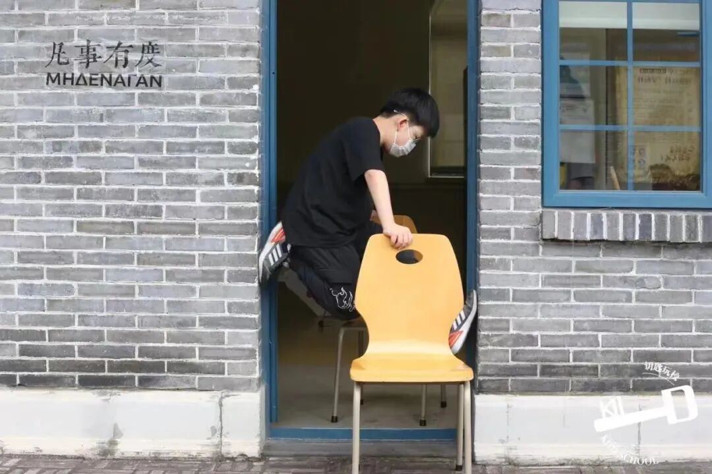</section></section></section><section style="display: inline-block;vertical-align: top;width: 50%;align-self: flex-start;flex: 0 0 auto;padding: 0px 0px 0px 5px;margin: 5px 0px;box-sizing: border-box;"><section style="line-height: 0;box-sizing: border-box;"><section style="max-width: 100%;vertical-align: middle;display: inline-block;line-height: 0;box-sizing: border-box;"></section></section></section></section><section style="text-align: left;justify-content: flex-start;display: flex;flex-flow: row;box-sizing: border-box;"><section style="display: inline-block;vertical-align: top;width: 50%;align-self: flex-start;flex: 0 0 auto;padding: 0px 5px 0px 0px;margin: 5px 0px;box-sizing: border-box;"><section style="line-height: 0;box-sizing: border-box;"><section style="max-width: 100%;vertical-align: middle;display: inline-block;line-height: 0;box-sizing: border-box;">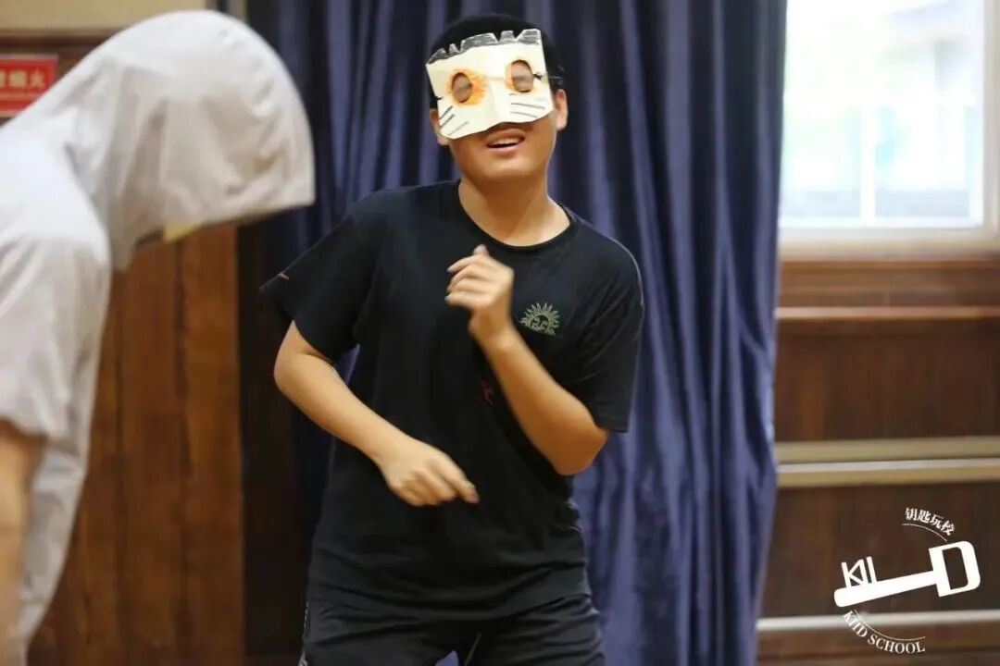</section></section></section><section style="display: inline-block;vertical-align: top;width: 50%;align-self: flex-start;flex: 0 0 auto;padding: 0px 0px 0px 5px;margin: 5px 0px;box-sizing: border-box;"><section style="line-height: 0;box-sizing: border-box;"><section style="max-width: 100%;vertical-align: middle;display: inline-block;line-height: 0;box-sizing: border-box;">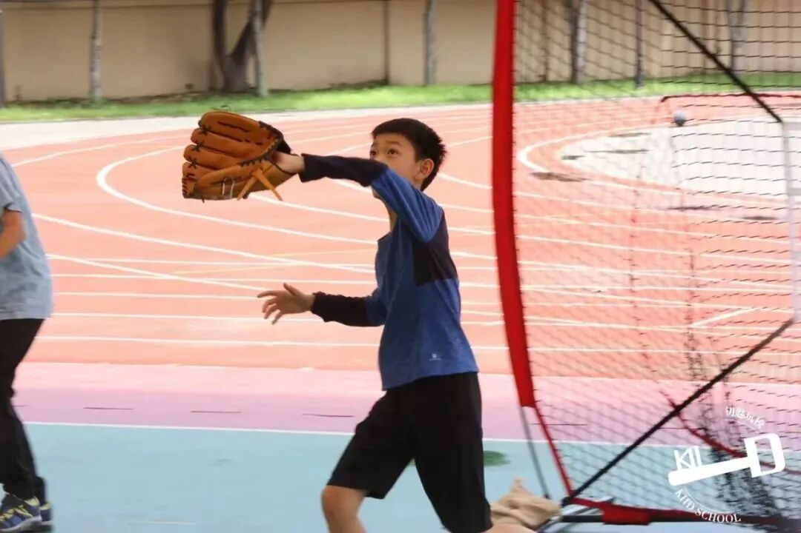</section></section></section></section><section style="text-align: center;justify-content: center;display: flex;flex-flow: row;margin: 10px 0px;box-sizing: border-box;"><section style="display: inline-block;width: auto;vertical-align: top;align-self: flex-start;flex: 0 0 auto;min-width: 5%;max-width: 100%;height: auto;box-sizing: border-box;"><section style="text-align: justify;box-sizing: border-box;"><p style="white-space: normal;margin: 0px;padding: 0px;box-sizing: border-box;"><span><br/></span></p></section><section style="color: rgb(241, 151, 0);line-height: 2;font-size: 15px;letter-spacing: 2px;padding: 0px 10px;box-sizing: border-box;"><p style="margin: 0px;padding: 0px;box-sizing: border-box;"><strong style="box-sizing: border-box;"><span>每日上午 · 侦探精进训练活动参考</span></strong></p></section><section style="text-align: left;justify-content: flex-start;display: flex;flex-flow: row;margin: 0px;box-sizing: border-box;"><section style="display: inline-block;width: 100%;vertical-align: top;align-self: flex-start;flex: 0 0 auto;line-height: 0;background-color: rgb(254, 220, 195);box-sizing: border-box;"><section style="text-align: center;box-sizing: border-box;"><section class="wx_imgbc_placeholder" style='display: inline-block; width: 100%; height: 7px; vertical-align: top; overflow: hidden; background-repeat: repeat-x; background-attachment: scroll; box-sizing: border-box; background-image: url("data:image/gif;base64,iVBORw0KGgoAAAANSUhEUgAAAAEAAAABCAYAAAAfFcSJAAAADUlEQVQImWNgYGBgAAAABQABh6FO1AAAAABJRU5ErkJggg=="); background-size: auto 100% !important; background-position: 0% 0% !important;'><section style="text-align: justify;box-sizing: border-box;"><p style="white-space: normal;margin: 0px;padding: 0px;box-sizing: border-box;"><span><br/></span></p></section></section></section></section></section></section></section><p style="white-space: normal;margin: 0px;padding: 0px;box-sizing: border-box;"><span><br/></span></p><section style="line-height: 2;letter-spacing: 2px;padding: 0px 10px;font-size: 15px;box-sizing: border-box;"><p style="white-space: normal;margin: 0px;padding: 0px;box-sizing: border-box;"><strong style="box-sizing: border-box;"><span style="color: rgb(241, 151, 0);box-sizing: border-box;"><span>侦探常识精进：</span></span></strong><span>逃生背包、密码学、行为设计、百科全书、非自然死亡：法医基础知识入门、生活常识、狼人箴言、犯罪心理学...</span></p><p style="white-space: normal;margin: 0px;padding: 0px;box-sizing: border-box;"><span><br/></span></p><p style="white-space: normal;margin: 0px;padding: 0px;box-sizing: border-box;"><strong style="box-sizing: border-box;"><span style="color: rgb(241, 151, 0);box-sizing: border-box;"><span>侦探洞察精进：</span></span></strong><span>读盘、心理侧写师、魔法物语、隐秘的角落：留意身边的每个人、不应该出现的反常之物、小城大案、藏叶于林、提问的艺术：通过对话挖掘隐藏信息、逼供这门手艺...</span></p><p style="white-space: normal;margin: 0px;padding: 0px;box-sizing: border-box;"><span><br/></span></p><p style="white-space: normal;margin: 0px;padding: 0px;box-sizing: border-box;"><strong style="box-sizing: border-box;"><span style="color: rgb(241, 151, 0);box-sizing: border-box;"><span>侦探身手精进：</span></span></strong><span>共享定位捉迷藏、眼明手巧、行为观察室、反追踪训练：脚印迷阵、痕迹复原、巴西柔术入门、攻防毽...</span></p><p style="white-space: normal;margin: 0px;padding: 0px;box-sizing: border-box;"><span><br/></span></p><p style="white-space: normal;margin: 0px;padding: 0px;box-sizing: border-box;"><strong style="box-sizing: border-box;"><span style="color: rgb(241, 151, 0);box-sizing: border-box;"><span>侦探逻辑精进：</span></span></strong><span>逻辑对决、逻辑谬误、复杂系统、奇石迷阵：纯数学思维游戏、关于身体的知识、模拟法庭、童谣隐喻、时间线与行为链分析...</span></p><p style="white-space: normal;margin: 0px;padding: 0px;box-sizing: border-box;"><span><br/></span></p><p style="white-space: normal;margin: 0px;padding: 0px;box-sizing: border-box;"><strong style="box-sizing: border-box;"><span style="color: rgb(241, 151, 0);box-sizing: border-box;"><span>侦探求真精进：</span></span></strong><span>历史的真相、密室案件侦破、海龟汤、纳西索斯与自我投射、城市的真相：城市侦探特别行动合集、历史的真相（叫魂、秦谜）、我在别处、信息交叉验证、人间观察...</span></p><p style="white-space: normal;margin: 0px;padding: 0px;box-sizing: border-box;"><span><br/></span></p><p style="white-space: normal;margin: 0px;padding: 0px;box-sizing: border-box;"><strong style="box-sizing: border-box;"><span style="color: rgb(241, 151, 0);box-sizing: border-box;"><span>侦探思辨精进：</span></span></strong><span>夏洛克清单、认罪认罚、模拟法庭、电车难题、塞翁之马、死亡通知单：关于法外执刑人、真的假的、一体两面、罪与罚、以下人物谁没犯罪、矛盾动机分析...</span></p><p style="white-space: normal;margin: 0px;padding: 0px;box-sizing: border-box;"><span><br/></span></p><p style="white-space: normal;margin: 0px;padding: 0px;box-sizing: border-box;"><strong style="box-sizing: border-box;"><span style="color: rgb(241, 151, 0);box-sizing: border-box;"><span>常识拓展再拓展：</span></span></strong><span>毒杀入门、摩斯码、警察的类别、装高手、i虫TV、迥异节日风俗、各地口音：中国不同的语系、快思考慢思考...</span></p></section><p style="white-space: normal;margin: 0px;padding: 0px;box-sizing: border-box;"><span><br/></span></p><section style="text-align: center;color: rgb(241, 151, 0);line-height: 2;font-size: 15px;letter-spacing: 2px;padding: 0px 10px;box-sizing: border-box;"><p style="margin: 0px;padding: 0px;box-sizing: border-box;"><strong style="box-sizing: border-box;"><span>每日下午 </span></strong></p><p style="margin: 0px;padding: 0px;box-sizing: border-box;"><strong style="box-sizing: border-box;"><span>侦探实战40+趣味横生学院比赛活动参考</span></strong></p></section><section style="text-align: left;justify-content: flex-start;display: flex;flex-flow: row;margin: 0px;width: 100%;align-self: flex-start;line-height: 0;background-color: rgb(254, 220, 195);box-sizing: border-box;"><section style="text-align: center;width: 100%;box-sizing: border-box;"><section class="wx_imgbc_placeholder" style='display: inline-block; width: 100%; height: 7px; vertical-align: top; overflow: hidden; background-repeat: repeat-x; background-attachment: scroll; box-sizing: border-box; background-image: url("data:image/gif;base64,iVBORw0KGgoAAAANSUhEUgAAAAEAAAABCAYAAAAfFcSJAAAADUlEQVQImWNgYGBgAAAABQABh6FO1AAAAABJRU5ErkJggg=="); background-size: auto 100% !important; background-position: 0% 0% !important;'><section style="text-align: justify;box-sizing: border-box;"><p style="white-space: normal;margin: 0px;padding: 0px;box-sizing: border-box;"><span><br/></span></p></section></section></section></section><p style="white-space: normal;margin: 0px;padding: 0px;box-sizing: border-box;"><span><br/></span></p><section style="line-height: 2;letter-spacing: 2px;padding: 0px 10px;font-size: 15px;box-sizing: border-box;"><p style="white-space: normal;margin: 0px;padding: 0px;box-sizing: border-box;"><strong style="box-sizing: border-box;"><span style="color: rgb(241, 151, 0);box-sizing: border-box;"><span>侦探常识实战：</span></span></strong><span>最强嗅觉、破译密码、地图推理、法律常识、一错到底、辨认标识、案件海龟汤、摩斯码比赛、谣言粉碎机/假新闻攻防战/信息收集赛、关联词大赛、生活细节问答、真的假的、声音辨识...</span></p><p style="white-space: normal;margin: 0px;padding: 0px;box-sizing: border-box;"><span><br/></span></p><p style="white-space: normal;margin: 0px;padding: 0px;box-sizing: border-box;"><strong style="box-sizing: border-box;"><span style="color: rgb(241, 151, 0);box-sizing: border-box;"><span>侦探洞察实战：</span></span></strong><span>无人生还、折足先登、破译密码、狼人杀、阿瓦隆、谁偷了我的奶酪、谁是卧底、Spot it（桌游）、行动代号、痕迹检查比赛、最速找不同、致命魔术、侧写大赛...</span></p><p style="white-space: normal;margin: 0px;padding: 0px;box-sizing: border-box;"><span><br/></span></p><p style="white-space: normal;margin: 0px;padding: 0px;box-sizing: border-box;"><strong style="box-sizing: border-box;"><span style="color: rgb(241, 151, 0);box-sizing: border-box;"><span>侦探身手实战：</span></span></strong><span>开锁、飞镖、橄榄球移动靶、一锤定音、文武对决、飞盘高尔夫、快速上楼、飞盘、躲避球、corn hole、超级baggo（沙包加倍），攻防箭，接力井字棋、最速拼图、baggo象棋、解绳索 、共享定位躲猫猫...</span></p><p style="white-space: normal;margin: 0px;padding: 0px;box-sizing: border-box;"><span><br/></span></p><p style="white-space: normal;margin: 0px;padding: 0px;box-sizing: border-box;"><strong style="box-sizing: border-box;"><span style="color: rgb(241, 151, 0);box-sizing: border-box;"><span>侦探逻辑实战：</span></span></strong><span>信息分析、步步为营、打败赌场、角斗士、辩论、吵架怎么吵赢、拆弹专家、五子棋、德国桥牌、谬误筛查、解谜竞速、逻辑对决、犯罪现场 、沙丘对决、达芬奇密码、24点...</span></p><p style="white-space: normal;margin: 0px;padding: 0px;box-sizing: border-box;"><span><br/></span></p><p style="white-space: normal;margin: 0px;padding: 0px;box-sizing: border-box;"><strong style="box-sizing: border-box;"><span style="color: rgb(241, 151, 0);box-sizing: border-box;"><span>侦探求真实战：</span></span></strong><span>一系列等待侦破的现场案件，大量NPC不可言说的秘密，随时等待侦破</span></p><p style="white-space: normal;margin: 0px;padding: 0px;box-sizing: border-box;"><span><br/></span></p><p style="white-space: normal;margin: 0px;padding: 0px;box-sizing: border-box;"><strong style="box-sizing: border-box;"><span style="color: rgb(241, 151, 0);box-sizing: border-box;"><span>侦探思辨实战：</span></span></strong><span>是真是假、数据错误分析、找你妹、限时场景找不同、桌游《瞎掰王》、辩护人、法外执刑人、十二怒汉、人性的扭曲、河边的错误、奇葩说、AI图片/实拍图片区分、网管...</span></p></section><p style="white-space: normal;margin: 0px;padding: 0px;box-sizing: border-box;"><span><br/></span></p><section style="text-align: center;font-size: 14px;line-height: 2;letter-spacing: 2px;padding: 0px 10px;box-sizing: border-box;"><p style="margin: 0px;padding: 0px;box-sizing: border-box;"><span>*以上内容可做参考，具体执行以现场实际情况为准</span></p></section><p style="white-space: normal;margin: 0px;padding: 0px;box-sizing: border-box;"><span><br/></span></p><section style="margin-top: 10px;margin-bottom: 10px;display: inline-block;width: 100%;border: 2px dotted rgb(241, 151, 0);padding: 10px;box-sizing: border-box;"><section style="color: rgb(51, 51, 51);font-size: 15px;line-height: 2;letter-spacing: 2px;padding: 0px 10px;width: 100%;box-sizing: border-box;"><p style="margin: 0px;padding: 0px;box-sizing: border-box;"><span>最后，再次提醒一下，如果您的孩子即将加入此次名侦探学院，请不要忘记将上文的召集令转发给TA哦！这是拓宽营内侦探体验的重要契机，“小钥匙”随时等待接收TA破解出的正确答案！加油！</span></p></section></section><p style="white-space: normal;margin: 0px;padding: 0px;box-sizing: border-box;"><span><br/></span></p><section style="text-align: left;justify-content: flex-start;display: flex;flex-flow: row;margin: 10px 0px 0px;width: 100%;align-self: flex-start;border-style: solid;border-width: 1px;border-color: rgb(241, 151, 0);border-radius: 12px;padding: 14px;overflow: hidden;box-sizing: border-box;"><section style="display: inline-block;width: 100%;vertical-align: top;overflow-x: auto;box-sizing: border-box;"><section style="overflow: hidden;width: 600%;max-width: 600% !important;box-sizing: border-box;"><section style="display: inline-block;width: 16.6667%;vertical-align: middle;box-sizing: border-box;"><section style="text-align: center;margin-top: 10px;margin-bottom: 10px;line-height: 0;width: 100%;box-sizing: border-box;"><section style="max-width: 100%;vertical-align: middle;display: inline-block;line-height: 0;width: 100%;box-sizing: border-box;">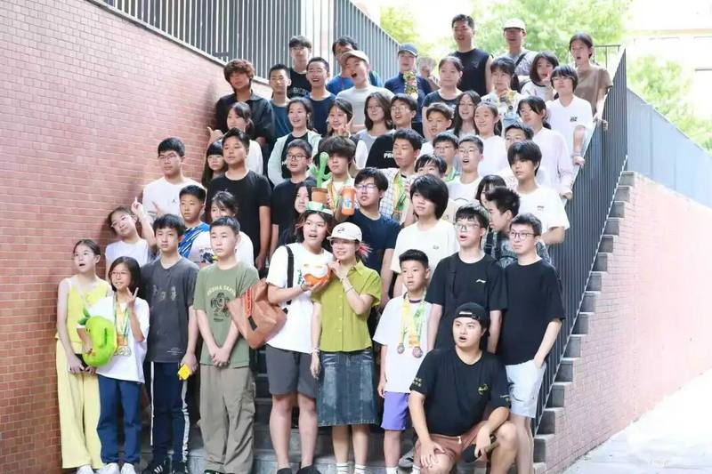</section></section></section><section style="display: inline-block;width: 16.6667%;vertical-align: top;box-sizing: border-box;"><section style="text-align: center;margin-top: 10px;margin-bottom: 10px;line-height: 0;width: 100%;box-sizing: border-box;"><section style="max-width: 100%;vertical-align: middle;display: inline-block;line-height: 0;width: 100%;box-sizing: border-box;">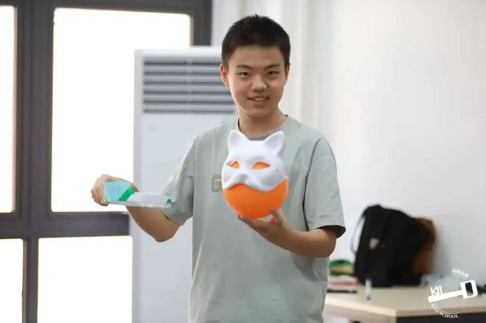</section></section></section><section style="display: inline-block;width: 16.6667%;vertical-align: top;box-sizing: border-box;"><section style="text-align: center;margin-top: 10px;margin-bottom: 10px;line-height: 0;width: 100%;box-sizing: border-box;"><section style="max-width: 100%;vertical-align: middle;display: inline-block;line-height: 0;width: 100%;box-sizing: border-box;">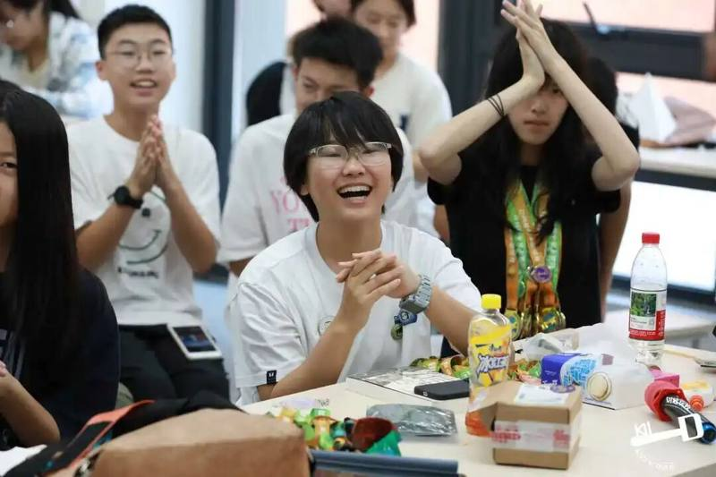</section></section></section><section style="display: inline-block;width: 16.6667%;vertical-align: top;box-sizing: border-box;"><section style="text-align: center;margin-top: 10px;margin-bottom: 10px;line-height: 0;width: 100%;box-sizing: border-box;"><section style="max-width: 100%;vertical-align: middle;display: inline-block;line-height: 0;width: 100%;box-sizing: border-box;"></section></section></section><section style="display: inline-block;width: 16.6667%;vertical-align: top;box-sizing: border-box;"><section style="text-align: center;margin-top: 10px;margin-bottom: 10px;line-height: 0;width: 100%;box-sizing: border-box;"><section style="max-width: 100%;vertical-align: middle;display: inline-block;line-height: 0;width: 100%;box-sizing: border-box;">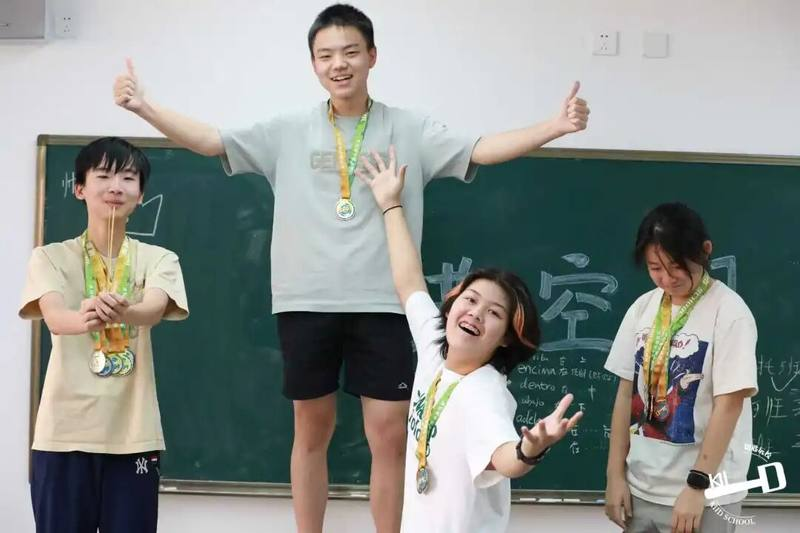</section></section></section><section style="display: inline-block;width: 16.6667%;vertical-align: top;box-sizing: border-box;"><section style="text-align: center;margin-top: 10px;margin-bottom: 10px;line-height: 0;width: 100%;box-sizing: border-box;"><section style="max-width: 100%;vertical-align: middle;display: inline-block;line-height: 0;width: 100%;box-sizing: border-box;">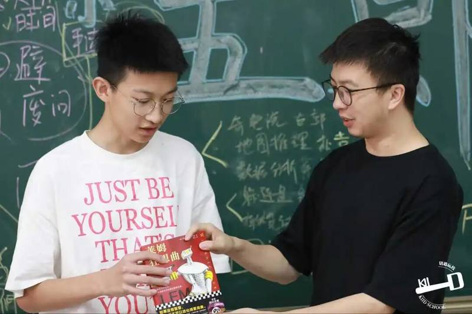</section></section></section></section></section></section><section style="display: flex;width: 100%;flex-flow: column;box-sizing: border-box;"><section style="z-index: 1;box-sizing: border-box;"><section style="text-align: center;justify-content: center;display: flex;flex-flow: row;margin: -10px 0px 10px;box-sizing: border-box;"><section style="display: inline-block;width: auto;vertical-align: top;align-self: flex-start;flex: 0 0 auto;min-width: 5%;max-width: 100%;height: auto;background-color: rgb(255, 255, 255);padding: 0px 11px;box-sizing: border-box;"><section style="justify-content: center;display: flex;flex-flow: row;box-sizing: border-box;"><section style="display: inline-block;vertical-align: middle;width: auto;flex: 0 0 0%;height: auto;line-height: 0;align-self: center;box-sizing: border-box;"><section style="box-sizing: border-box;"><section style="display: inline-block;width: 14px;height: 14px;vertical-align: top;overflow: hidden;border-radius: 55px;line-height: 0;background-color: rgb(241, 151, 0);box-sizing: border-box;"><section style="transform: rotateZ(315deg);-webkit-transform: rotateZ(315deg);-moz-transform: rotateZ(315deg);-o-transform: rotateZ(315deg);box-sizing: border-box;"><section style="margin: 5px 0px 0px;transform: translate3d(1px, 0px, 0px);-webkit-transform: translate3d(1px, 0px, 0px);-moz-transform: translate3d(1px, 0px, 0px);-o-transform: translate3d(1px, 0px, 0px);box-sizing: border-box;"><section style="display: inline-block;width: 6px;height: 6px;vertical-align: top;overflow: hidden;border-style: solid;border-width: 2px 0px 0px 2px;border-color: rgb(255, 255, 255);margin: 0px;box-sizing: border-box;"><section style="text-align: justify;box-sizing: border-box;"><p style="white-space: normal;margin: 0px;padding: 0px;box-sizing: border-box;"><span><br/></span></p></section></section></section></section></section></section></section><section style="display: inline-block;vertical-align: middle;width: auto;align-self: center;flex: 0 0 auto;min-width: 5%;max-width: 100%;height: auto;padding: 0px 5px;box-sizing: border-box;"><section style="text-align: justify;font-size: 12px;color: rgb(184, 161, 130);box-sizing: border-box;"><p style="white-space: normal;margin: 0px;padding: 0px;box-sizing: border-box;"><span>左右滑动查看更多</span></p></section></section><section style="display: inline-block;vertical-align: middle;width: auto;flex: 0 0 0%;height: auto;line-height: 0;align-self: center;box-sizing: border-box;"><section style="transform: perspective(0px);-webkit-transform: perspective(0px);-moz-transform: perspective(0px);-o-transform: perspective(0px);transform-style: flat;box-sizing: border-box;"><section style="transform: rotateY(180deg);-webkit-transform: rotateY(180deg);-moz-transform: rotateY(180deg);-o-transform: rotateY(180deg);box-sizing: border-box;"><section style="display: inline-block;width: 14px;height: 14px;vertical-align: top;overflow: hidden;border-radius: 55px;line-height: 0;background-color: rgb(241, 151, 0);box-sizing: border-box;"><section style="transform: rotateZ(315deg);-webkit-transform: rotateZ(315deg);-moz-transform: rotateZ(315deg);-o-transform: rotateZ(315deg);box-sizing: border-box;"><section style="margin: 5px 0px 0px;transform: translate3d(1px, 0px, 0px);-webkit-transform: translate3d(1px, 0px, 0px);-moz-transform: translate3d(1px, 0px, 0px);-o-transform: translate3d(1px, 0px, 0px);box-sizing: border-box;"><section style="display: inline-block;width: 6px;height: 6px;vertical-align: top;overflow: hidden;border-style: solid;border-width: 2px 0px 0px 2px;border-color: rgb(255, 255, 255);margin: 0px;box-sizing: border-box;"><section style="text-align: justify;box-sizing: border-box;"><p style="white-space: normal;margin: 0px;padding: 0px;box-sizing: border-box;"><span><br/></span></p></section></section></section></section></section></section></section></section></section></section></section></section></section><p style="white-space: normal;margin: 0px;padding: 0px;box-sizing: border-box;"><span><br/></span></p><section style="text-align: center;margin-top: 10px;margin-bottom: 10px;line-height: 0;box-sizing: border-box;"><section style="max-width: 100%;vertical-align: middle;display: inline-block;line-height: 0;width: 25%;height: auto;box-sizing: border-box;"></section></section><section style="text-align: center;color: rgb(241, 151, 0);line-height: 2;letter-spacing: 2px;padding: 0px 10px;box-sizing: border-box;"><p style="margin: 0px;padding: 0px;box-sizing: border-box;"><strong style="box-sizing: border-box;"><span>钥匙玩校特色</span><span><br/></span></strong></p></section><p style="white-space: normal;margin: 0px;padding: 0px;box-sizing: border-box;"><span><br/></span></p><section style="font-size: 15px;line-height: 2;letter-spacing: 2px;padding: 0px 10px;box-sizing: border-box;"><p style="white-space: normal;margin: 0px;padding: 0px;box-sizing: border-box;"><strong style="box-sizing: border-box;"><span style="background-color: rgb(241, 151, 0);color: rgb(255, 255, 255);box-sizing: border-box;"><span>1. 游戏式学习</span></span></strong></p><p style="white-space: normal;margin: 0px;padding: 0px;box-sizing: border-box;"><span>原创的“技艺碎片”游戏化系统，帮助孩子学习利用碎片时间，学习时间管理； </span></p><p style="white-space: normal;margin: 0px;padding: 0px;box-sizing: border-box;"><span>原创的“装币”经济体系以及“小卖部”经营项目，让孩子沉浸其中，在玩中学； </span></p><p style="white-space: normal;margin: 0px;padding: 0px;box-sizing: border-box;"><span>教育化改造的各类桌游和户外团队游戏，让孩子们学习时欢声笑语中，成长时意犹未尽；</span></p><p style="white-space: normal;margin: 0px;padding: 0px;box-sizing: border-box;"><span>各种即兴涌现的擂台赛、桌游竞技场、运动对抗赛，在竞技中学会面对失败和挫折；</span></p><p style="white-space: normal;margin: 0px;padding: 0px;box-sizing: border-box;"><span><br/></span></p><p style="white-space: normal;margin: 0px;padding: 0px;box-sizing: border-box;"><span style="background-color: rgb(241, 151, 0);color: rgb(255, 255, 255);box-sizing: border-box;"><strong style="box-sizing: border-box;"><span>2.项目式学习</span></strong></span></p><p style="white-space: normal;margin: 0px;padding: 0px;box-sizing: border-box;"><span>钥匙玩校已经开发超过50种PBL活动。</span></p><p style="white-space: normal;margin: 0px;padding: 0px;box-sizing: border-box;"><span>如果假期怕孩子无聊，怕孩子荒废，怕孩子寂寞，这些项目正适合。</span></p><p style="white-space: normal;margin: 0px;padding: 0px;box-sizing: border-box;"><span>我们设计了各类真实环境中的团队创造项目，将学科知识付诸实践，让学生在创造中积累自信，建立自尊；</span></p><p style="white-space: normal;margin: 0px;padding: 0px;box-sizing: border-box;"><span><br/></span></p><p style="white-space: normal;margin: 0px;padding: 0px;box-sizing: border-box;"><span style="color: rgb(255, 255, 255);background-color: rgb(241, 151, 0);box-sizing: border-box;"><strong style="box-sizing: border-box;"><span>3.跨学科学习</span></strong></span></p><p style="white-space: normal;margin: 0px;padding: 0px;box-sizing: border-box;"><span>打破文科理科知识壁垒，突破书本知识，在目标导向的项目里，综合应用学科知识，练习策划、设计、沟通、合作等考试不考的必修技能；</span></p><p style="white-space: normal;margin: 0px;padding: 0px;box-sizing: border-box;"><span><br/></span></p><p style="white-space: normal;margin: 0px;padding: 0px;box-sizing: border-box;"><span style="color: rgb(255, 255, 255);background-color: rgb(241, 151, 0);box-sizing: border-box;"><strong style="box-sizing: border-box;"><span>4.创造性思维训练</span></strong></span></p><p style="white-space: normal;margin: 0px;padding: 0px;box-sizing: border-box;"><span>如何将一个想法变成真的？如何为真实问题提供创造解？如何从消费者成为创造者？这是钥匙玩校的每个活动都在鼓励营员思考并付诸行动的驱动问题。</span><span><br/></span></p><p style="white-space: normal;margin: 0px;padding: 0px;box-sizing: border-box;"><span><br/></span></p><p style="white-space: normal;margin: 0px;padding: 0px;box-sizing: border-box;"><span>我们既有言传，也有身教，钥匙玩校本身在营地教育技术上也精益求精，不断创新：跨学科通识营、荣耀挑战营、读本支持系统、装币经济体系、小卖部项目、技艺碎片游戏化机制、剧本杀夏令营、学院制选修系统……</span></p><p style="white-space: normal;margin: 0px;padding: 0px;box-sizing: border-box;"><span><br/></span></p><p style="white-space: normal;margin: 0px;padding: 0px;box-sizing: border-box;"><span style="background-color: rgb(241, 151, 0);color: rgb(255, 255, 255);box-sizing: border-box;"><strong style="box-sizing: border-box;"><span>5.玩伴教育激发多元智能</span></strong></span></p><p style="white-space: normal;margin: 0px;padding: 0px;box-sizing: border-box;"><span>钥匙玩校的营地导师具有丰富的营地教育经验，也是青少年们可靠的玩伴，以平等的姿态给予营员尊重和信任，总能和孩子们玩成一片。</span></p><p style="white-space: normal;margin: 0px;padding: 0px;box-sizing: border-box;"><span>在设计和执行活动时，充分参考多元智能理论，我们不愿错过任何一个孩子在语言、逻辑、运动、声音、空间、博物、人际、自省、存在等方面的任何潜能。</span></p><p style="white-space: normal;margin: 0px;padding: 0px;box-sizing: border-box;"><span><br/></span></p><p style="white-space: normal;margin: 0px;padding: 0px;box-sizing: border-box;"><span style="color: rgb(255, 255, 255);background-color: rgb(241, 151, 0);box-sizing: border-box;"><strong style="box-sizing: border-box;"><span>6.自然环境和人文环境并重</span></strong></span></p><p style="white-space: normal;margin: 0px;padding: 0px;box-sizing: border-box;"><span>我们的营地一般都空气清新，环境幽静，便于换脑、思考、静心；同时，除了丰富的活动，我们也在公共空间提供足够的书籍以供阅读，足够的桌游以供玩耍，足够的工具以供制作，足够的读本以供创作。孩子接受的是多层次的启发和激励。</span></p><p style="white-space: normal;margin: 0px;padding: 0px;box-sizing: border-box;"><span><br/></span></p><p style="white-space: normal;margin: 0px;padding: 0px;box-sizing: border-box;"><span style="color: rgb(255, 255, 255);background-color: rgb(241, 151, 0);box-sizing: border-box;"><strong style="box-sizing: border-box;"><span>7.自由日Gap Day</span></strong></span></p><p style="white-space: normal;margin: 0px;padding: 0px;box-sizing: border-box;"><span>钥匙玩校原创项目GAP DAY，将涌现超过100项自主行动，通过预告-行动-复盘，体验自驱型成长。GAP DAY让每个孩子都可以发掘自身特长，自由开课、选课，做自己时间的主人。</span></p></section><p style="white-space: normal;margin: 0px;padding: 0px;box-sizing: border-box;"><span><br/></span></p><section style="text-align: center;margin-top: 10px;margin-bottom: 10px;line-height: 0;box-sizing: border-box;"><section style="max-width: 100%;vertical-align: middle;display: inline-block;line-height: 0;width: 100%;box-sizing: border-box;">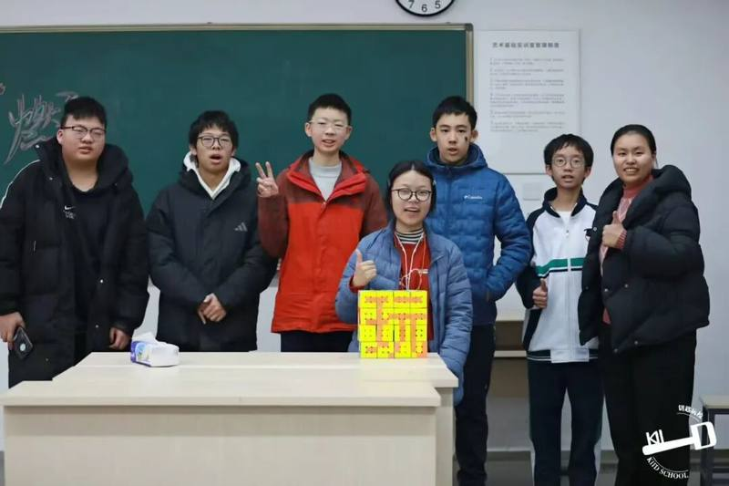</section></section><p style="white-space: normal;margin: 0px;padding: 0px;box-sizing: border-box;"><span><br/></span></p><section style="text-align: left;justify-content: flex-start;display: flex;flex-flow: row;margin: 10px 0px;box-sizing: border-box;"><section style="display: inline-block;width: 100%;vertical-align: top;align-self: flex-start;flex: 0 0 auto;border-style: solid;border-width: 1px 0px 0px;border-top-color: rgb(241, 151, 0);background-image: linear-gradient(0deg, rgba(231, 58, 48, 0.16) 13%, rgba(231, 58, 48, 0.04) 88%);box-sizing: border-box;"><section style="text-align: center;box-sizing: border-box;"><section style="display: inline-block;width: 0px;height: 0px;vertical-align: top;overflow: hidden;border-style: solid;border-width: 11px 11px 0px;border-color: rgb(241, 151, 0) rgba(255, 255, 255, 0) rgba(255, 255, 255, 0);box-sizing: border-box;"><svg style="float:left;line-height:0;width:0;vertical-align:top;"></svg></section></section><section style="display: flex;width: 100%;flex-flow: column;box-sizing: border-box;"><section style="z-index: 1;box-sizing: border-box;"><section style="justify-content: flex-start;display: flex;flex-flow: row;width: 100%;align-self: flex-start;padding: 0px 17px;background-color: rgba(255, 245, 209, 0.42);box-sizing: border-box;"><section style="text-align: justify;font-size: 12px;line-height: 2;letter-spacing: 2px;width: 100%;box-sizing: border-box;"><p style="white-space: normal;margin: 0px;padding: 0px;box-sizing: border-box;"><span>仅列出一部分我们目前师生开过的课程：清晨阅读，我比AI跑得快，零基础法语歌，化妆入门，科幻作品交流，王琦影库，躲避盘，尖叫吧！超好玩的即兴戏剧，神奇的羽毛球，飞盘训练，飞行员们的餐后闲谈，《Pearl》观影，抽奖，声乐，如何共情理解，女权和女学，Rap 一下，销售与服务之教你怎么逛迪卡侬，DID及心理相关普及，篮球，聊天brunch，创新学校一览，植物大战僵尸资源交流课，五笔输入法，握力小课堂，装机员，书法逻辑符，理化问题see you again, 吃瓜分享会，射箭入门，关于社会实践的压力和环节，美丽中国校友会，西班牙语教学，语言cosplay 洗白手册，速成合唱团，王者荣耀挑战赛，桌游之声，我在爱沙尼亚做老师，语言分享会，她 桌游，特工学院，石塑黏土，如何赚到一个亿，王者电竞，恐怖片，真心话大冒险，沙丘，数学题分享，科学上网，cos基础妆教，反传销私董会，带飞元气骑士，baggo, 同感，照进角落的光，柴静的视角，西玄科普，立体四子棋擂台赛，ACG及其周边文化交流，好奇幼儿园政治，日间飞盘，文豪野犬，飞盘辩论预赛，KTV，学院杯桌游准备，玩转扭扭棒，爱情锦囊，请人教我剑玉入门，法语学习，足聊一对一，看池晓的朋友圈，baggo陪练，历史上的今天，法律咨询，扑克砍瓜切菜，颂钵侠：声音疗愈，找老蒋聊玄学，双拼输入法，九宫卦象，三阶魔方还原教学，求助，请李大眼教剪辑，擦边，池晓的三餐，剑玉悬赏，MBTI入门……...</span></p></section></section></section></section></section></section><p style="white-space: normal;margin: 0px;padding: 0px;box-sizing: border-box;"><span><br/></span></p><section style="text-align: left;justify-content: flex-start;display: flex;flex-flow: row;margin: 10px 0px 6px;box-sizing: border-box;"><section style="display: inline-block;width: auto;vertical-align: top;align-self: flex-start;flex: 100 100 0%;border-style: solid;border-width: 1px 1px 0px;border-color: rgb(241, 151, 0) rgb(241, 151, 0) rgb(63, 120, 26);height: auto;margin: 0px 6px;padding: 7px;box-sizing: border-box;"><section style="justify-content: flex-start;display: flex;flex-flow: row;margin: 0px 0px -16px;box-sizing: border-box;"><section style="display: inline-block;width: 100%;vertical-align: top;align-self: flex-start;flex: 0 0 auto;background-color: rgba(247, 217, 168, 0.56);padding: 17px;box-sizing: border-box;"><section style="text-align: justify;font-size: 15px;line-height: 2;letter-spacing: 2px;padding: 0px 10px;box-sizing: border-box;"><p style="white-space: normal;margin: 0px;padding: 0px;box-sizing: border-box;"><span>钥匙玩校，懂教育，会游戏，爱孩子。</span></p><p style="white-space: normal;margin: 0px;padding: 0px;box-sizing: border-box;"><span>玩得开心，学得畅快，回味悠长，受益终身。</span></p><p style="white-space: normal;margin: 0px;padding: 0px;box-sizing: border-box;"><span>孩子的爱好会被尊重，孩子的天赋会被保护。</span></p><p style="white-space: normal;margin: 0px;padding: 0px;box-sizing: border-box;"><span>在创造中寻找自己，在玩耍中爱上学习。</span></p></section></section></section><section style="text-align: justify;box-sizing: border-box;"><p style="white-space: normal;margin: 0px;padding: 0px;box-sizing: border-box;"><span><br/></span></p></section></section></section><p style="white-space: normal;margin: 0px;padding: 0px;box-sizing: border-box;"><span><br/></span></p><section style="text-align: center;margin-top: 10px;margin-bottom: 10px;line-height: 0;box-sizing: border-box;"><section style="max-width: 100%;vertical-align: middle;display: inline-block;line-height: 0;width: 25%;height: auto;box-sizing: border-box;">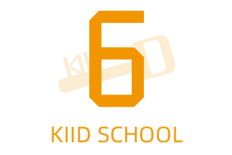</section></section><section style="text-align: center;color: rgb(241, 151, 0);line-height: 2;letter-spacing: 2px;padding: 0px 10px;box-sizing: border-box;"><p style="margin: 0px;padding: 0px;box-sizing: border-box;"><strong style="box-sizing: border-box;"><span>每日规律活动</span></strong></p></section><p style="white-space: normal;margin: 0px;padding: 0px;box-sizing: border-box;"><span><br/></span></p><section style="max-width: 100%;display: inline-block;width: 100%;box-sizing: border-box;"><section style="display: inline-block;box-shadow: rgb(171, 171, 171) 0px 0px 3px;padding: 15px 10px;background-color: rgb(255, 255, 255);border-color: rgb(255, 28, 69);border-width: 0px;border-radius: 6px;border-style: none;overflow: hidden;box-sizing: border-box;width: 100%;"><section style="overflow: hidden;box-sizing: border-box;max-width: 100%;"><section style="overflow: hidden;box-sizing: border-box;"><section style="max-width: 100%;box-sizing: border-box;"><section style="text-align: left;justify-content: flex-start;display: flex;flex-flow: row;box-sizing: border-box;max-width: 100%;"><section style="display: inline-block;vertical-align: top;width: 50%;align-self: flex-start;flex: 0 1 auto;max-width: 100%;box-sizing: border-box;"><section style="max-width: 100%;display: inline-block;width: 100%;vertical-align: top;box-sizing: border-box;"><section style="max-width: 100%;box-sizing: border-box;text-align: justify;width: 100%;"><section style="box-shadow: rgb(0, 0, 0) 0px 0px 0px;padding: 0px 4px 0px 0px;box-sizing: border-box;width: 100%;"><section style="max-width: 100%;margin: 0px 0%;box-sizing: border-box;"><section style="line-height: 0;display: inline-block;box-sizing: border-box;max-width: 100%;"><section style="max-width: 100%;vertical-align: middle;display: inline-block;line-height: 0;box-shadow: rgb(0, 0, 0) 0px 0px 0px;border-width: 0px;border-radius: 3px;border-style: none;border-color: rgb(62, 62, 62);box-sizing: border-box;overflow: hidden;"></section></section></section></section></section></section></section><section style="display: inline-block;vertical-align: top;width: 50%;align-self: flex-start;flex: 0 1 auto;max-width: 100%;box-sizing: border-box;"><section style="max-width: 100%;display: inline-block;width: 100%;vertical-align: top;box-sizing: border-box;"><section style="max-width: 100%;box-sizing: border-box;text-align: justify;width: 100%;"><section style="padding: 0px 0px 0px 4px;box-shadow: rgb(0, 0, 0) 0px 0px 0px;box-sizing: border-box;width: 100%;"><section style="box-sizing: border-box;"><section style="max-width: 100%;margin-top: 10px;margin-bottom: 10px;box-sizing: border-box;"><section style="max-width: 100%;box-sizing: border-box;"><section style="text-align: left;box-sizing: border-box;max-width: 100%;"><section style="max-width: 100%;display: inline-block;width: auto;vertical-align: top;box-sizing: border-box;"><section style="padding-left: 6px;box-sizing: border-box;max-width: 100%;"><section style="box-sizing: border-box;"><section style="max-width: 100%;margin-left: 6px;margin-right: 6px;box-sizing: border-box;"><section style="max-width: 100%;box-sizing: border-box;"><section style="text-align: justify;padding-bottom: 2px;border-bottom: 1px solid rgb(52, 54, 60);border-top-color: rgb(52, 54, 60);border-right-color: rgb(52, 54, 60);border-left-color: rgb(52, 54, 60);box-sizing: border-box;max-width: 100%;"><p style="white-space: normal;margin: 0px;padding: 0px;box-sizing: border-box;"><strong style="box-sizing: border-box;"><span>清晨读诗</span></strong></p></section></section></section><section style="display: contents;box-sizing: border-box;"><section style="display: contents;box-sizing: border-box;"><section style="display: contents;box-sizing: border-box;"><section style="height: 22px;border-left: 1px solid rgb(52, 54, 60);margin-top: -21px;transform: rotate(-30deg);-webkit-transform: rotate(-30deg);-moz-transform: rotate(-30deg);-o-transform: rotate(-30deg);-webkit-transform: rotate(-30deg);-moz-transform: rotate(-30deg);-webkit-transform-origin: 0px center;-moz-transform-origin: 0px center;-o-transform-origin: 0px center;border-top-color: rgb(52, 54, 60);border-right-color: rgb(52, 54, 60);border-bottom-color: rgb(52, 54, 60);box-sizing: border-box;max-width: 100%;"><svg style="float: left;line-height: 0;width: 0px;box-sizing: border-box;"></svg></section></section></section></section></section></section></section></section></section></section><section style="max-width: 100%;margin: 10px 0% 0px;box-sizing: border-box;"><section style="max-width: 100%;box-sizing: border-box;"><section style="font-size: 14px;box-sizing: border-box;max-width: 100%;letter-spacing: 0.544px;"><p style="white-space: normal;margin: 0px;padding: 0px;box-sizing: border-box;"><span>玩伴们精心编辑的《诗歌读本》，带孩子了解课本上没有的现代诗，感受美妙的文字，打开表达的疆界。</span></p></section></section></section></section></section></section></section></section></section></section></section></section></section></section><section style="max-width: 100%;display: inline-block;width: 100%;box-sizing: border-box;"><section style="display: inline-block;box-shadow: rgb(171, 171, 171) 0px 0px 3px;padding: 15px 10px;background-color: rgb(255, 255, 255);border-color: rgb(255, 28, 69);border-width: 0px;border-radius: 6px;border-style: none;overflow: hidden;box-sizing: border-box;width: 100%;"><section style="overflow: hidden;box-sizing: border-box;max-width: 100%;"><section style="overflow: hidden;box-sizing: border-box;"><section style="max-width: 100%;box-sizing: border-box;"><section style="text-align: left;justify-content: flex-start;display: flex;flex-flow: row;box-sizing: border-box;max-width: 100%;"><section style="display: inline-block;vertical-align: top;width: 50%;align-self: flex-start;flex: 0 1 auto;max-width: 100%;box-sizing: border-box;"><section style="max-width: 100%;display: inline-block;width: 100%;vertical-align: top;box-sizing: border-box;"><section style="max-width: 100%;box-sizing: border-box;text-align: justify;width: 100%;"><section style="box-shadow: rgb(0, 0, 0) 0px 0px 0px;padding: 0px 4px 0px 0px;box-sizing: border-box;width: 100%;"><section style="box-sizing: border-box;"><section style="max-width: 100%;margin: 0px 0%;box-sizing: border-box;"><section style="max-width: 100%;box-sizing: border-box;"><section style="text-align: right;box-sizing: border-box;max-width: 100%;"><section style="max-width: 100%;display: inline-block;width: auto;vertical-align: top;box-sizing: border-box;"><section style="padding-right: 6px;box-sizing: border-box;max-width: 100%;"><section style="box-sizing: border-box;"><section style="max-width: 100%;margin-right: 6px;box-sizing: border-box;"><section style="max-width: 100%;box-sizing: border-box;"><section style="text-align: unset;border-bottom: 1px solid rgb(52, 54, 60);border-top-color: rgb(52, 54, 60);border-right-color: rgb(52, 54, 60);border-left-color: rgb(52, 54, 60);box-sizing: border-box;max-width: 100%;"><p style="margin: 0px;padding: 0px;box-sizing: border-box;"><strong style="box-sizing: border-box;"><span>傍晚运动</span></strong></p></section></section></section><section style="display: contents;box-sizing: border-box;"><section style="display: contents;box-sizing: border-box;"><section style="display: contents;box-sizing: border-box;"><section style="width: 0px;margin-left: auto;height: 22px;border-left: 1px solid rgb(52, 54, 60);margin-top: -21px;transform: rotate(30deg);-webkit-transform: rotate(30deg);-moz-transform: rotate(30deg);-o-transform: rotate(30deg);-webkit-transform: rotate(30deg);-moz-transform: rotate(30deg);-webkit-transform-origin: 0px center;-moz-transform-origin: 0px center;-o-transform-origin: 0px center;border-top-color: rgb(52, 54, 60);border-right-color: rgb(52, 54, 60);border-bottom-color: rgb(52, 54, 60);box-sizing: border-box;max-width: 100%;"><svg style="float: left;line-height: 0;width: 0px;box-sizing: border-box;"></svg></section></section></section></section></section></section></section></section></section></section><section style="max-width: 100%;margin: 10px 0% 0px;box-sizing: border-box;"><section style="max-width: 100%;box-sizing: border-box;"><section style="font-size: 14px;box-sizing: border-box;max-width: 100%;letter-spacing: 0.544px;"><p style="white-space: normal;margin: 0px;padding: 0px;box-sizing: border-box;"><span>风靡全球校园的极限飞盘和腰旗橄榄球运动，还有钥匙玩校独立改编的阵地运动，让爱运动的孩子尽情释放荷尔蒙，让不爱运动的孩子从此爱上运动。</span></p></section></section></section></section></section></section></section></section><section style="display: inline-block;vertical-align: top;width: 50%;align-self: flex-start;flex: 0 1 auto;max-width: 100%;box-sizing: border-box;"><section style="max-width: 100%;display: inline-block;width: 100%;vertical-align: top;box-sizing: border-box;"><section style="max-width: 100%;box-sizing: border-box;text-align: justify;width: 100%;"><section style="padding: 0px 0px 0px 4px;box-shadow: rgb(0, 0, 0) 0px 0px 0px;box-sizing: border-box;width: 100%;"><section style="max-width: 100%;margin: 0px 0%;box-sizing: border-box;"><section style="line-height: 0;display: inline-block;box-sizing: border-box;max-width: 100%;"><section style="max-width: 100%;vertical-align: middle;display: inline-block;line-height: 0;box-shadow: rgb(0, 0, 0) 0px 0px 0px;border-width: 0px;border-radius: 3px;border-style: none;border-color: rgb(62, 62, 62);box-sizing: border-box;overflow: hidden;">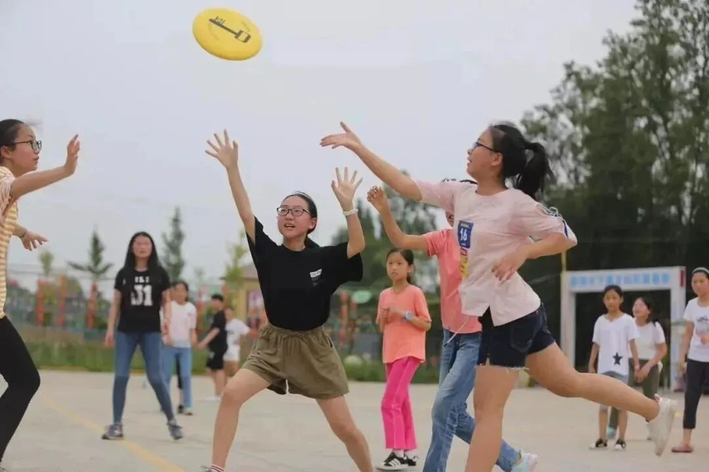</section></section></section></section></section></section></section></section></section></section></section></section></section><section style="max-width: 100%;display: inline-block;width: 100%;box-sizing: border-box;"><section style="display: inline-block;box-shadow: rgb(171, 171, 171) 0px 0px 3px;padding: 15px 10px;background-color: rgb(255, 255, 255);border-color: rgb(255, 28, 69);border-width: 0px;border-radius: 6px;border-style: none;overflow: hidden;box-sizing: border-box;width: 100%;"><section style="overflow: hidden;box-sizing: border-box;max-width: 100%;"><section style="overflow: hidden;box-sizing: border-box;"><section style="max-width: 100%;box-sizing: border-box;"><section style="text-align: left;justify-content: flex-start;display: flex;flex-flow: row;box-sizing: border-box;max-width: 100%;"><section style="display: inline-block;vertical-align: top;width: 50%;align-self: flex-start;flex: 0 1 auto;max-width: 100%;box-sizing: border-box;"><section style="max-width: 100%;display: inline-block;width: 100%;vertical-align: top;box-sizing: border-box;"><section style="max-width: 100%;box-sizing: border-box;text-align: justify;width: 100%;"><section style="box-shadow: rgb(0, 0, 0) 0px 0px 0px;padding: 0px 4px 0px 0px;box-sizing: border-box;width: 100%;"><section style="max-width: 100%;margin: 0px 0%;box-sizing: border-box;"><section style="line-height: 0;display: inline-block;box-sizing: border-box;max-width: 100%;"><section style="max-width: 100%;vertical-align: middle;display: inline-block;line-height: 0;box-shadow: rgb(0, 0, 0) 0px 0px 0px;border-width: 0px;border-radius: 3px;border-style: none;border-color: rgb(62, 62, 62);box-sizing: border-box;overflow: hidden;">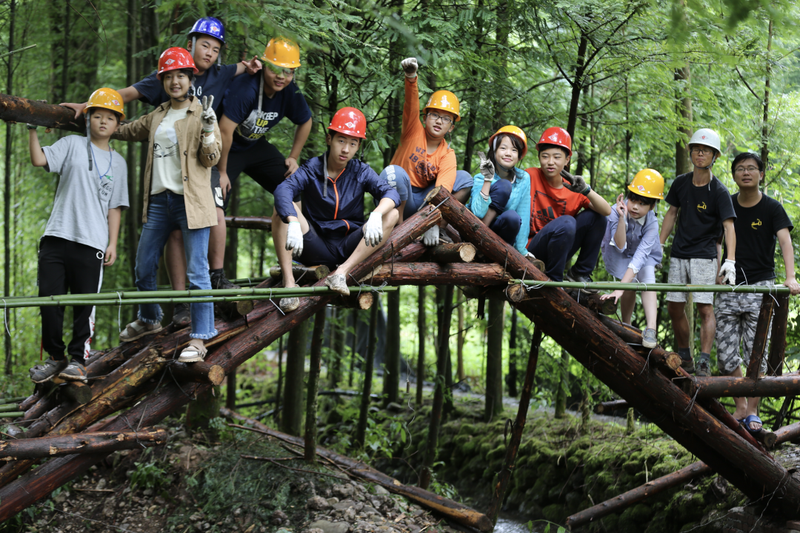</section></section></section></section></section></section></section><section style="display: inline-block;vertical-align: top;width: 50%;align-self: flex-start;flex: 0 1 auto;max-width: 100%;box-sizing: border-box;"><section style="max-width: 100%;display: inline-block;width: 100%;vertical-align: top;box-sizing: border-box;"><section style="max-width: 100%;box-sizing: border-box;text-align: justify;width: 100%;"><section style="padding: 0px 0px 0px 4px;box-shadow: rgb(0, 0, 0) 0px 0px 0px;box-sizing: border-box;width: 100%;"><section style="box-sizing: border-box;"><section style="max-width: 100%;margin-top: 10px;margin-bottom: 10px;box-sizing: border-box;"><section style="max-width: 100%;box-sizing: border-box;"><section style="text-align: left;box-sizing: border-box;max-width: 100%;"><section style="max-width: 100%;display: inline-block;width: auto;vertical-align: top;box-sizing: border-box;"><section style="padding-left: 6px;box-sizing: border-box;max-width: 100%;"><section style="box-sizing: border-box;"><section style="max-width: 100%;margin-left: 6px;margin-right: 6px;box-sizing: border-box;"><section style="max-width: 100%;box-sizing: border-box;"><section style="text-align: justify;padding-bottom: 2px;border-bottom: 1px solid rgb(52, 54, 60);border-top-color: rgb(52, 54, 60);border-right-color: rgb(52, 54, 60);border-left-color: rgb(52, 54, 60);box-sizing: border-box;max-width: 100%;"><p style="white-space: normal;margin: 0px;padding: 0px;box-sizing: border-box;"><strong style="box-sizing: border-box;"><span>目标导向活动</span></strong></p></section></section></section><section style="display: contents;box-sizing: border-box;"><section style="display: contents;box-sizing: border-box;"><section style="display: contents;box-sizing: border-box;"><section style="height: 22px;border-left: 1px solid rgb(52, 54, 60);margin-top: -21px;transform: rotate(-30deg);-webkit-transform: rotate(-30deg);-moz-transform: rotate(-30deg);-o-transform: rotate(-30deg);-webkit-transform: rotate(-30deg);-moz-transform: rotate(-30deg);-webkit-transform-origin: 0px center;-moz-transform-origin: 0px center;-o-transform-origin: 0px center;border-top-color: rgb(52, 54, 60);border-right-color: rgb(52, 54, 60);border-bottom-color: rgb(52, 54, 60);box-sizing: border-box;max-width: 100%;"><svg style="float: left;line-height: 0;width: 0px;box-sizing: border-box;"></svg></section></section></section></section></section></section></section></section></section></section><section style="max-width: 100%;margin: 10px 0% 0px;box-sizing: border-box;"><section style="max-width: 100%;box-sizing: border-box;"><section style="font-size: 14px;box-sizing: border-box;max-width: 100%;letter-spacing: 0.544px;"><p style="white-space: normal;margin: 0px;padding: 0px;box-sizing: border-box;"><span>用有限的时间做成一件小事，培养解决问题的能力：低科技小组、电影小组、工程小组……</span></p></section></section></section></section></section></section></section></section></section></section></section></section></section></section><section style="max-width: 100%;display: inline-block;width: 100%;box-sizing: border-box;"><section style="display: inline-block;box-shadow: rgb(171, 171, 171) 0px 0px 3px;padding: 15px 10px;background-color: rgb(255, 255, 255);border-color: rgb(255, 28, 69);border-width: 0px;border-radius: 6px;border-style: none;overflow: hidden;box-sizing: border-box;width: 100%;"><section style="overflow: hidden;box-sizing: border-box;max-width: 100%;"><section style="overflow: hidden;box-sizing: border-box;"><section style="max-width: 100%;box-sizing: border-box;"><section style="text-align: left;justify-content: flex-start;display: flex;flex-flow: row;box-sizing: border-box;max-width: 100%;"><section style="display: inline-block;vertical-align: top;width: 50%;align-self: flex-start;flex: 0 1 auto;max-width: 100%;box-sizing: border-box;"><section style="max-width: 100%;display: inline-block;width: 100%;vertical-align: top;box-sizing: border-box;"><section style="max-width: 100%;box-sizing: border-box;text-align: justify;width: 100%;"><section style="box-shadow: rgb(0, 0, 0) 0px 0px 0px;padding: 0px 4px 0px 0px;box-sizing: border-box;width: 100%;"><section style="box-sizing: border-box;"><section style="max-width: 100%;margin: 0px 0%;box-sizing: border-box;"><section style="max-width: 100%;box-sizing: border-box;"><section style="text-align: right;box-sizing: border-box;max-width: 100%;"><section style="max-width: 100%;display: inline-block;width: auto;vertical-align: top;box-sizing: border-box;"><section style="padding-right: 6px;box-sizing: border-box;max-width: 100%;"><section style="box-sizing: border-box;"><section style="max-width: 100%;margin-right: 6px;box-sizing: border-box;"><section style="max-width: 100%;box-sizing: border-box;"><section style="text-align: unset;border-bottom: 1px solid rgb(52, 54, 60);border-top-color: rgb(52, 54, 60);border-right-color: rgb(52, 54, 60);border-left-color: rgb(52, 54, 60);box-sizing: border-box;max-width: 100%;"><p style="margin: 0px;padding: 0px;box-sizing: border-box;"><strong style="box-sizing: border-box;"><span>夜间小组活动</span></strong></p></section></section></section><section style="display: contents;box-sizing: border-box;"><section style="display: contents;box-sizing: border-box;"><section style="display: contents;box-sizing: border-box;"><section style="width: 0px;margin-left: auto;height: 22px;border-left: 1px solid rgb(52, 54, 60);margin-top: -21px;transform: rotate(30deg);-webkit-transform: rotate(30deg);-moz-transform: rotate(30deg);-o-transform: rotate(30deg);-webkit-transform: rotate(30deg);-moz-transform: rotate(30deg);-webkit-transform-origin: 0px center;-moz-transform-origin: 0px center;-o-transform-origin: 0px center;border-top-color: rgb(52, 54, 60);border-right-color: rgb(52, 54, 60);border-bottom-color: rgb(52, 54, 60);box-sizing: border-box;max-width: 100%;"><svg style="float: left;line-height: 0;width: 0px;box-sizing: border-box;"></svg></section></section></section></section></section></section></section></section></section></section><section style="max-width: 100%;margin: 10px 0% 0px;box-sizing: border-box;"><section style="max-width: 100%;box-sizing: border-box;"><section style="font-size: 14px;box-sizing: border-box;max-width: 100%;letter-spacing: 0.544px;"><p style="white-space: normal;margin: 0px;padding: 0px;box-sizing: border-box;"><span>严肃问题小组、情感小组，畅谈青春期那些孩子想聊却没人陪孩子聊的重要话题。</span></p></section></section></section></section></section></section></section></section><section style="display: inline-block;vertical-align: top;width: 50%;align-self: flex-start;flex: 0 1 auto;max-width: 100%;box-sizing: border-box;"><section style="max-width: 100%;display: inline-block;width: 100%;vertical-align: top;box-sizing: border-box;"><section style="max-width: 100%;box-sizing: border-box;text-align: justify;width: 100%;"><section style="padding: 0px 0px 0px 4px;box-shadow: rgb(0, 0, 0) 0px 0px 0px;box-sizing: border-box;width: 100%;"><section style="max-width: 100%;margin: 0px 0%;box-sizing: border-box;"><section style="line-height: 0;display: inline-block;box-sizing: border-box;max-width: 100%;"><section style="max-width: 100%;vertical-align: middle;display: inline-block;line-height: 0;box-shadow: rgb(0, 0, 0) 0px 0px 0px;border-width: 0px;border-radius: 3px;border-style: none;border-color: rgb(62, 62, 62);box-sizing: border-box;overflow: hidden;">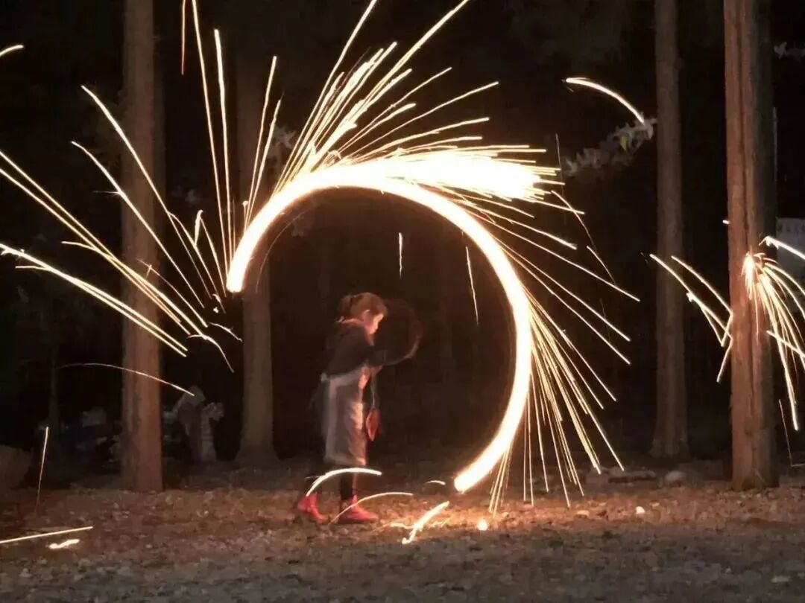</section></section></section></section></section></section></section></section></section></section></section></section></section><section style="max-width: 100%;display: inline-block;width: 100%;box-sizing: border-box;"><section style="display: inline-block;box-shadow: rgb(171, 171, 171) 0px 0px 3px;padding: 15px 10px;background-color: rgb(255, 255, 255);border-color: rgb(255, 28, 69);border-width: 0px;border-radius: 6px;border-style: none;overflow: hidden;box-sizing: border-box;width: 100%;"><section style="overflow: hidden;box-sizing: border-box;max-width: 100%;"><section style="overflow: hidden;box-sizing: border-box;"><section style="max-width: 100%;box-sizing: border-box;"><section style="text-align: left;justify-content: flex-start;display: flex;flex-flow: row;box-sizing: border-box;max-width: 100%;"><section style="display: inline-block;vertical-align: top;width: 50%;align-self: flex-start;flex: 0 1 auto;max-width: 100%;box-sizing: border-box;"><section style="max-width: 100%;display: inline-block;width: 100%;vertical-align: top;box-sizing: border-box;"><section style="max-width: 100%;box-sizing: border-box;text-align: justify;width: 100%;"><section style="box-shadow: rgb(0, 0, 0) 0px 0px 0px;padding: 0px 4px 0px 0px;box-sizing: border-box;width: 100%;"><section style="max-width: 100%;margin: 0px 0%;box-sizing: border-box;"><section style="line-height: 0;display: inline-block;box-sizing: border-box;max-width: 100%;"><section style="max-width: 100%;vertical-align: middle;display: inline-block;line-height: 0;box-shadow: rgb(0, 0, 0) 0px 0px 0px;border-width: 0px;border-radius: 3px;border-style: none;border-color: rgb(62, 62, 62);box-sizing: border-box;overflow: hidden;">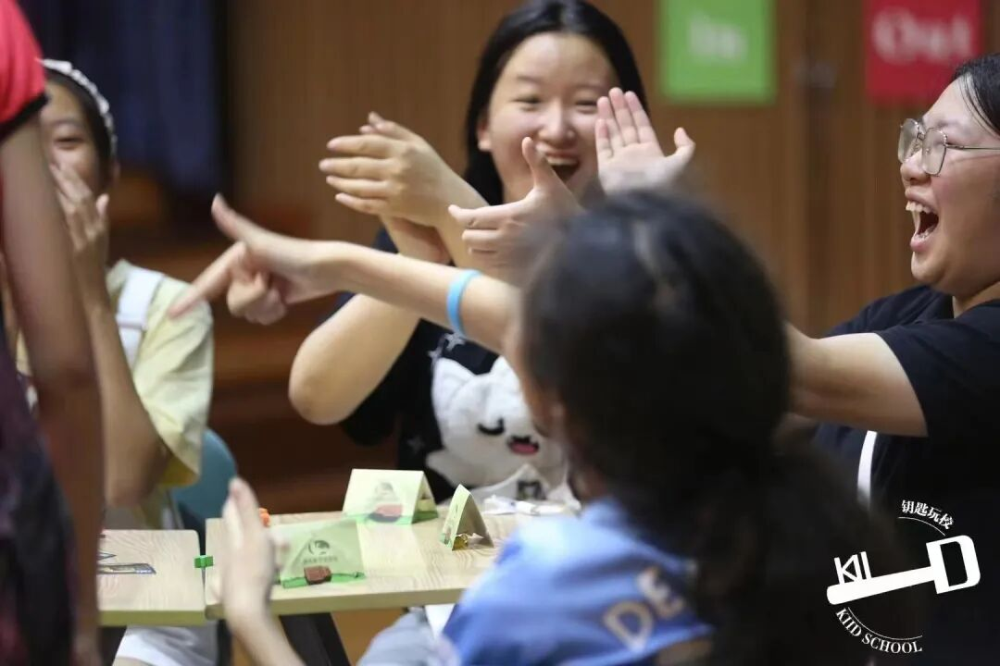</section></section></section></section></section></section></section><section style="display: inline-block;vertical-align: top;width: 50%;align-self: flex-start;flex: 0 1 auto;max-width: 100%;box-sizing: border-box;"><section style="max-width: 100%;display: inline-block;width: 100%;vertical-align: top;box-sizing: border-box;"><section style="max-width: 100%;box-sizing: border-box;text-align: justify;width: 100%;"><section style="padding: 0px 0px 0px 4px;box-shadow: rgb(0, 0, 0) 0px 0px 0px;box-sizing: border-box;width: 100%;"><section style="box-sizing: border-box;"><section style="max-width: 100%;margin-top: 10px;margin-bottom: 10px;box-sizing: border-box;"><section style="max-width: 100%;box-sizing: border-box;"><section style="text-align: left;box-sizing: border-box;max-width: 100%;"><section style="max-width: 100%;display: inline-block;width: auto;vertical-align: top;box-sizing: border-box;"><section style="padding-left: 6px;box-sizing: border-box;max-width: 100%;"><section style="box-sizing: border-box;"><section style="max-width: 100%;margin-left: 6px;margin-right: 6px;box-sizing: border-box;"><section style="max-width: 100%;box-sizing: border-box;"><section style="text-align: justify;padding-bottom: 2px;border-bottom: 1px solid rgb(52, 54, 60);border-top-color: rgb(52, 54, 60);border-right-color: rgb(52, 54, 60);border-left-color: rgb(52, 54, 60);box-sizing: border-box;max-width: 100%;"><p style="text-align: center;white-space: normal;margin: 0px;padding: 0px;box-sizing: border-box;"><strong style="box-sizing: border-box;"><span>桌游活动</span></strong></p></section></section></section><section style="display: contents;box-sizing: border-box;"><section style="display: contents;box-sizing: border-box;"><section style="display: contents;box-sizing: border-box;"><section style="height: 22px;border-left: 1px solid rgb(52, 54, 60);margin-top: -21px;transform: rotate(-30deg);-webkit-transform: rotate(-30deg);-moz-transform: rotate(-30deg);-o-transform: rotate(-30deg);-webkit-transform: rotate(-30deg);-moz-transform: rotate(-30deg);-webkit-transform-origin: 0px center;-moz-transform-origin: 0px center;-o-transform-origin: 0px center;border-top-color: rgb(52, 54, 60);border-right-color: rgb(52, 54, 60);border-bottom-color: rgb(52, 54, 60);box-sizing: border-box;max-width: 100%;"><svg style="float: left;line-height: 0;width: 0px;box-sizing: border-box;"></svg></section></section></section></section></section></section></section></section></section></section><section style="max-width: 100%;margin: 10px 0% 0px;box-sizing: border-box;"><section style="max-width: 100%;box-sizing: border-box;"><section style="font-size: 14px;box-sizing: border-box;max-width: 100%;letter-spacing: 0.544px;"><p style="white-space: normal;margin: 0px;padding: 0px;box-sizing: border-box;"><span>健康的线下桌面游戏，动手、动脑，交流，竞争；钥匙玩校进行过100款以上的桌游教育活动开发：</span><span><br/></span><span>卡坦岛（学习谈判沟通，学习贸易技巧和经济规律）</span><span><br/></span><span>文明创新（换个角度，在游戏中了解人类文明进程里的重要元素）</span><span><br/></span><span>农场主（经典的经营策略游戏，通过欧洲中世纪的农场生活学会规划管理）</span></p></section></section></section></section></section></section></section></section></section></section></section></section></section></section><p style="white-space: normal;margin: 0px;padding: 0px;box-sizing: border-box;"><span><br/></span></p><section style="text-align: center;margin-top: 10px;margin-bottom: 10px;line-height: 0;box-sizing: border-box;"><section style="max-width: 100%;vertical-align: middle;display: inline-block;line-height: 0;width: 25%;height: auto;box-sizing: border-box;">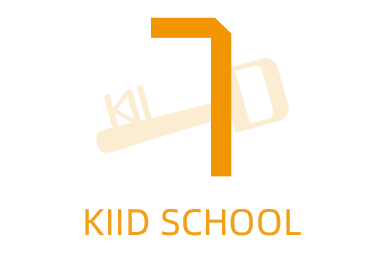</section></section><section style="text-align: center;color: rgb(241, 151, 0);line-height: 2;letter-spacing: 2px;padding: 0px 10px;box-sizing: border-box;"><p style="margin: 0px;padding: 0px;box-sizing: border-box;"><strong style="box-sizing: border-box;"><span>报名信息</span></strong></p></section><p style="white-space: normal;margin: 0px;padding: 0px;box-sizing: border-box;"><span><br/></span></p><section style="max-width: 100%;box-sizing: border-box;"><section style="text-align: left;justify-content: flex-start;display: flex;flex-flow: row;box-sizing: border-box;max-width: 100%;"><section style="display: inline-block;vertical-align: top;width: auto;align-self: stretch;flex: 0 0 auto;min-width: 10%;max-width: 100%;height: auto;background-color: rgb(245, 177, 63);box-sizing: border-box;"><section style="display: contents;box-sizing: border-box;max-width: 100%;"><section style="display: contents;box-sizing: border-box;"><section style="line-height: 1.5;letter-spacing: 0px;color: rgb(245,177,63);padding: 0px 10px;box-sizing: border-box;max-width: 100%;"><p style="margin: 0px;padding: 0px;box-sizing: border-box;"><span><br/></span></p></section></section></section></section><section style="display: inline-block;vertical-align: top;width: auto;align-self: stretch;flex: 0 0 0%;height: auto;line-height: 0;padding: 0px;box-sizing: border-box;max-width: 100%;"><section style="display: contents;box-sizing: border-box;max-width: 100%;"><section style="display: contents;box-sizing: border-box;"><section style="max-width: 100%;box-sizing: border-box;"><section style="text-align: center;box-sizing: border-box;"><section style="display: inline-block;width: 6px;height: 12px;vertical-align: top;overflow: hidden;border-style: solid;border-width: 6px 3px;border-color: rgb(245,177,63) rgba(255, 255, 255, 0) rgba(255, 255, 255, 0) rgb(245,177,63);box-sizing: border-box;"><svg style="float: left;line-height: 0;width: 0px;box-sizing: border-box;"></svg></section></section><section style="transform: perspective(0px);-webkit-transform: perspective(0px);-moz-transform: perspective(0px);-o-transform: perspective(0px);-webkit-transform: perspective(0px);-moz-transform: perspective(0px);-o-transform: perspective(0px);transform-style: flat;box-sizing: border-box;"><section style="text-align: center;transform: rotateX(180deg);-webkit-transform: rotateX(180deg);-moz-transform: rotateX(180deg);-o-transform: rotateX(180deg);-webkit-transform: rotateX(180deg);-moz-transform: rotateX(180deg);-o-transform: rotateX(180deg);box-sizing: border-box;"><section style="display: inline-block;width: 6px;height: 12px;vertical-align: top;overflow: hidden;border-style: solid;border-width: 6px 3px;border-color: rgb(245,177,63) rgba(255, 255, 255, 0) rgba(255, 255, 255, 0) rgb(245,177,63);box-sizing: border-box;"><svg style="float: left;line-height: 0;width: 0px;box-sizing: border-box;"></svg></section></section></section></section></section></section></section><section style="display: inline-block;vertical-align: middle;width: auto;align-self: center;flex: 0 0 auto;min-width: 10%;max-width: 100%;height: auto;box-sizing: border-box;"><section style="max-width: 100%;box-sizing: border-box;"><section style="text-align: justify;color: rgb(120, 120, 120);line-height: 1;letter-spacing: 0px;padding: 0px 10px;box-sizing: border-box;max-width: 100%;"><p style="margin: 0px;padding: 0px;box-sizing: border-box;white-space: normal;"><strong style="box-sizing: border-box;"><span>时间</span></strong></p></section></section></section><section style="display: inline-block;vertical-align: middle;width: auto;align-self: center;flex: 100 100 0%;height: auto;box-sizing: border-box;max-width: 100%;"><section style="display: contents;box-sizing: border-box;"><section style="margin: 0px 0%;box-sizing: border-box;max-width: 100%;"><section style="background-color: rgb(223, 223, 223);height: 1px;box-sizing: border-box;"><svg style="float: left;line-height: 0;width: 0px;box-sizing: border-box;"></svg></section></section></section></section></section></section><p style="white-space: normal;margin: 0px;padding: 0px;box-sizing: border-box;"><span><br/></span></p><section style="text-align: center;font-size: 15px;line-height: 2;letter-spacing: 2px;padding: 0px 10px;box-sizing: border-box;"><p style="text-align: justify;white-space: normal;margin: 0px;padding: 0px;box-sizing: border-box;"><span>8月8日-8月14日  共7日</span></p></section><p style="white-space: normal;margin: 0px;padding: 0px;box-sizing: border-box;"><span><br/></span></p><section style="max-width: 100%;box-sizing: border-box;"><section style="text-align: left;justify-content: flex-start;display: flex;flex-flow: row;box-sizing: border-box;max-width: 100%;"><section style="display: inline-block;vertical-align: top;width: auto;align-self: stretch;flex: 0 0 auto;min-width: 10%;max-width: 100%;height: auto;background-color: rgb(245, 177, 63);box-sizing: border-box;"><section style="display: contents;box-sizing: border-box;max-width: 100%;"><section style="display: contents;box-sizing: border-box;"><section style="line-height: 1.5;letter-spacing: 0px;color: rgb(255, 255, 255);padding: 0px 10px;box-sizing: border-box;max-width: 100%;"><p style="margin: 0px;padding: 0px;box-sizing: border-box;"><span><br/></span></p></section></section></section></section><section style="display: inline-block;vertical-align: top;width: auto;align-self: stretch;flex: 0 0 0%;height: auto;line-height: 0;padding: 0px;box-sizing: border-box;max-width: 100%;"><section style="display: contents;box-sizing: border-box;max-width: 100%;"><section style="display: contents;box-sizing: border-box;"><section style="max-width: 100%;box-sizing: border-box;"><section style="text-align: center;box-sizing: border-box;"><section style="display: inline-block;width: 6px;height: 12px;vertical-align: top;overflow: hidden;border-style: solid;border-width: 6px 3px;border-color: rgb(245,177,63) rgba(255, 255, 255, 0) rgba(255, 255, 255, 0) rgb(245,177,63);box-sizing: border-box;"><svg style="float: left;line-height: 0;width: 0px;box-sizing: border-box;"></svg></section></section><section style="transform: perspective(0px);-webkit-transform: perspective(0px);-moz-transform: perspective(0px);-o-transform: perspective(0px);-webkit-transform: perspective(0px);-moz-transform: perspective(0px);-o-transform: perspective(0px);transform-style: flat;box-sizing: border-box;"><section style="text-align: center;transform: rotateX(180deg);-webkit-transform: rotateX(180deg);-moz-transform: rotateX(180deg);-o-transform: rotateX(180deg);-webkit-transform: rotateX(180deg);-moz-transform: rotateX(180deg);-o-transform: rotateX(180deg);box-sizing: border-box;"><section style="display: inline-block;width: 6px;height: 12px;vertical-align: top;overflow: hidden;border-style: solid;border-width: 6px 3px;border-color: rgb(245,177,63) rgba(255, 255, 255, 0) rgba(255, 255, 255, 0) rgb(245,177,63);box-sizing: border-box;"><svg style="float: left;line-height: 0;width: 0px;box-sizing: border-box;"></svg></section></section></section></section></section></section></section><section style="display: inline-block;vertical-align: middle;width: auto;align-self: center;flex: 0 0 auto;min-width: 10%;max-width: 100%;height: auto;box-sizing: border-box;"><section style="max-width: 100%;box-sizing: border-box;"><section style="text-align: justify;color: rgb(120, 120, 120);line-height: 1;letter-spacing: 0px;padding: 0px 10px;box-sizing: border-box;max-width: 100%;"><p style="margin: 0px;padding: 0px;box-sizing: border-box;white-space: normal;"><strong style="box-sizing: border-box;"><span>适合年龄</span></strong></p></section></section></section><section style="display: inline-block;vertical-align: middle;width: auto;align-self: center;flex: 100 100 0%;height: auto;box-sizing: border-box;max-width: 100%;"><section style="display: contents;box-sizing: border-box;"><section style="margin: 0px 0%;box-sizing: border-box;max-width: 100%;"><section style="background-color: rgb(223, 223, 223);height: 1px;box-sizing: border-box;"><svg style="float: left;line-height: 0;width: 0px;box-sizing: border-box;"></svg></section></section></section></section></section></section><p style="white-space: normal;margin: 0px;padding: 0px;box-sizing: border-box;"><span><br/></span></p><section style="font-size: 15px;line-height: 2;letter-spacing: 2px;padding: 0px 10px;box-sizing: border-box;"><p style="white-space: normal;margin: 0px;padding: 0px;box-sizing: border-box;"><span>12-16岁</span></p></section><p style="white-space: normal;margin: 0px;padding: 0px;box-sizing: border-box;"><span><br/></span></p><section style="max-width: 100%;box-sizing: border-box;"><section style="text-align: left;justify-content: flex-start;display: flex;flex-flow: row;box-sizing: border-box;max-width: 100%;"><section style="display: inline-block;vertical-align: top;width: auto;align-self: stretch;flex: 0 0 auto;min-width: 10%;max-width: 100%;height: auto;background-color: rgb(245, 177, 63);box-sizing: border-box;"><section style="display: contents;box-sizing: border-box;max-width: 100%;"><section style="display: contents;box-sizing: border-box;"><section style="line-height: 1.5;letter-spacing: 0px;color: rgb(255, 255, 255);padding: 0px 10px;box-sizing: border-box;max-width: 100%;"><p style="margin: 0px;padding: 0px;box-sizing: border-box;"><span><br/></span></p></section></section></section></section><section style="display: inline-block;vertical-align: top;width: auto;align-self: stretch;flex: 0 0 0%;height: auto;line-height: 0;padding: 0px;box-sizing: border-box;max-width: 100%;"><section style="display: contents;box-sizing: border-box;max-width: 100%;"><section style="display: contents;box-sizing: border-box;"><section style="max-width: 100%;box-sizing: border-box;"><section style="text-align: center;box-sizing: border-box;"><section style="display: inline-block;width: 6px;height: 12px;vertical-align: top;overflow: hidden;border-style: solid;border-width: 6px 3px;border-color: rgb(245,177,63) rgba(255, 255, 255, 0) rgba(255, 255, 255, 0) rgb(245,177,63);box-sizing: border-box;"><svg style="float: left;line-height: 0;width: 0px;box-sizing: border-box;"></svg></section></section><section style="transform: perspective(0px);-webkit-transform: perspective(0px);-moz-transform: perspective(0px);-o-transform: perspective(0px);-webkit-transform: perspective(0px);-moz-transform: perspective(0px);-o-transform: perspective(0px);transform-style: flat;box-sizing: border-box;"><section style="text-align: center;transform: rotateX(180deg);-webkit-transform: rotateX(180deg);-moz-transform: rotateX(180deg);-o-transform: rotateX(180deg);-webkit-transform: rotateX(180deg);-moz-transform: rotateX(180deg);-o-transform: rotateX(180deg);box-sizing: border-box;"><section style="display: inline-block;width: 6px;height: 12px;vertical-align: top;overflow: hidden;border-style: solid;border-width: 6px 3px;border-color: rgb(245,177,63) rgba(255, 255, 255, 0) rgba(255, 255, 255, 0) rgb(245,177,63);box-sizing: border-box;"><svg style="float: left;line-height: 0;width: 0px;box-sizing: border-box;"></svg></section></section></section></section></section></section></section><section style="display: inline-block;vertical-align: middle;width: auto;align-self: center;flex: 0 0 auto;min-width: 10%;max-width: 100%;height: auto;box-sizing: border-box;"><section style="max-width: 100%;box-sizing: border-box;"><section style="text-align: justify;color: rgb(120, 120, 120);line-height: 1;letter-spacing: 0px;padding: 0px 10px;box-sizing: border-box;max-width: 100%;"><p style="margin: 0px;padding: 0px;box-sizing: border-box;white-space: normal;"><strong style="box-sizing: border-box;"><span>名额</span></strong></p></section></section></section><section style="display: inline-block;vertical-align: middle;width: auto;align-self: center;flex: 100 100 0%;height: auto;box-sizing: border-box;max-width: 100%;"><section style="display: contents;box-sizing: border-box;"><section style="margin: 0px 0%;box-sizing: border-box;max-width: 100%;"><section style="background-color: rgb(223, 223, 223);height: 1px;box-sizing: border-box;"><svg style="float: left;line-height: 0;width: 0px;box-sizing: border-box;"></svg></section></section></section></section></section></section><p style="white-space: normal;margin: 0px;padding: 0px;box-sizing: border-box;"><span><br/></span></p><section style="font-size: 15px;line-height: 2;letter-spacing: 2px;padding: 0px 10px;box-sizing: border-box;"><p style="white-space: normal;margin: 0px;padding: 0px;box-sizing: border-box;"><span>30人*4个学院</span></p></section><p style="white-space: normal;margin: 0px;padding: 0px;box-sizing: border-box;"><span><br/></span></p><section style="max-width: 100%;box-sizing: border-box;"><section style="text-align: left;justify-content: flex-start;display: flex;flex-flow: row;box-sizing: border-box;max-width: 100%;"><section style="display: inline-block;vertical-align: top;width: auto;align-self: stretch;flex: 0 0 auto;min-width: 10%;max-width: 100%;height: auto;background-color: rgb(245, 177, 63);box-sizing: border-box;"><section style="display: contents;box-sizing: border-box;max-width: 100%;"><section style="display: contents;box-sizing: border-box;"><section style="line-height: 1.5;letter-spacing: 0px;color: rgb(255, 255, 255);padding: 0px 10px;box-sizing: border-box;max-width: 100%;"><p style="margin: 0px;padding: 0px;box-sizing: border-box;"><span><br/></span></p></section></section></section></section><section style="display: inline-block;vertical-align: top;width: auto;align-self: stretch;flex: 0 0 0%;height: auto;line-height: 0;padding: 0px;box-sizing: border-box;max-width: 100%;"><section style="display: contents;box-sizing: border-box;max-width: 100%;"><section style="display: contents;box-sizing: border-box;"><section style="max-width: 100%;box-sizing: border-box;"><section style="text-align: center;box-sizing: border-box;"><section style="display: inline-block;width: 6px;height: 12px;vertical-align: top;overflow: hidden;border-style: solid;border-width: 6px 3px;border-color: rgb(245,177,63) rgba(255, 255, 255, 0) rgba(255, 255, 255, 0) rgb(245,177,63);box-sizing: border-box;"><svg style="float: left;line-height: 0;width: 0px;box-sizing: border-box;"></svg></section></section><section style="transform: perspective(0px);-webkit-transform: perspective(0px);-moz-transform: perspective(0px);-o-transform: perspective(0px);-webkit-transform: perspective(0px);-moz-transform: perspective(0px);-o-transform: perspective(0px);transform-style: flat;box-sizing: border-box;"><section style="text-align: center;transform: rotateX(180deg);-webkit-transform: rotateX(180deg);-moz-transform: rotateX(180deg);-o-transform: rotateX(180deg);-webkit-transform: rotateX(180deg);-moz-transform: rotateX(180deg);-o-transform: rotateX(180deg);box-sizing: border-box;"><section style="display: inline-block;width: 6px;height: 12px;vertical-align: top;overflow: hidden;border-style: solid;border-width: 6px 3px;border-color: rgb(245,177,63) rgba(255, 255, 255, 0) rgba(255, 255, 255, 0) rgb(245,177,63);box-sizing: border-box;"><svg style="float: left;line-height: 0;width: 0px;box-sizing: border-box;"></svg></section></section></section></section></section></section></section><section style="display: inline-block;vertical-align: middle;width: auto;align-self: center;flex: 0 0 auto;min-width: 10%;max-width: 100%;height: auto;box-sizing: border-box;"><section style="max-width: 100%;box-sizing: border-box;"><section style="text-align: justify;color: rgb(120, 120, 120);line-height: 1;letter-spacing: 0px;padding: 0px 10px;box-sizing: border-box;max-width: 100%;"><p style="margin: 0px;padding: 0px;box-sizing: border-box;white-space: normal;"><strong style="box-sizing: border-box;"><span>费用</span></strong></p></section></section></section><section style="display: inline-block;vertical-align: middle;width: auto;align-self: center;flex: 100 100 0%;height: auto;box-sizing: border-box;max-width: 100%;"><section style="display: contents;box-sizing: border-box;"><section style="margin: 0px 0%;box-sizing: border-box;max-width: 100%;"><section style="background-color: rgb(223, 223, 223);height: 1px;box-sizing: border-box;"><svg style="float: left;line-height: 0;width: 0px;box-sizing: border-box;"></svg></section></section></section></section></section></section><p style="white-space: normal;margin: 0px;padding: 0px;box-sizing: border-box;"><span><br/></span></p><section style="font-size: 15px;line-height: 2;letter-spacing: 2px;padding: 0px 10px;box-sizing: border-box;"><p style="white-space: normal;margin: 0px;padding: 0px;box-sizing: border-box;"><strong style="box-sizing: border-box;"><span>全价：8280</span></strong><strong style="box-sizing: border-box;"><span>元</span></strong></p><p style="white-space: normal;margin: 0px;padding: 0px;box-sizing: border-box;"><span>费用包含活动期间的导师服务费用、住宿费用、饮食费用（特色三餐+茶歇）、保险费、课程材料费、场地使用费、纪念品费用等；不包含往返营地的交通费用，以及营区内其他消费。</span></p><p style="white-space: normal;margin: 0px;padding: 0px;box-sizing: border-box;"><span>（未尽事宜，解释权归钥匙玩校所有）</span></p><p style="white-space: normal;margin: 0px;padding: 0px;box-sizing: border-box;"><span><br/></span></p><p style="white-space: normal;margin: 0px;padding: 0px;box-sizing: border-box;"><strong style="box-sizing: border-box;"><span>优惠价：7280元</span></strong></p><p style="white-space: normal;margin: 0px;padding: 0px;box-sizing: border-box;"><span>优惠条件：3人及以上团购价、6月8日24:00前报名早鸟价。以上优惠条件满足一条即可。</span></p><p style="white-space: normal;margin: 0px;padding: 0px;box-sizing: border-box;"><span><br/></span></p><p style="white-space: normal;margin: 0px;padding: 0px;box-sizing: border-box;"><strong style="box-sizing: border-box;"><span>特惠价：7080元</span></strong></p><p style="white-space: normal;margin: 0px;padding: 0px;box-sizing: border-box;"><span>特惠条件：累计参加8天以上钥匙玩校冬夏令营的往期营员可享此特惠。</span></p><p style="white-space: normal;margin: 0px;padding: 0px;box-sizing: border-box;"><span><br/></span></p><p style="white-space: normal;margin: 0px;padding: 0px;box-sizing: border-box;"><strong style="box-sizing: border-box;"><span style="box-sizing: border-box;"><span>超惠价：6980元</span></span></strong><span style="box-sizing: border-box;"><span><br/></span></span></p><p style="white-space: normal;margin: 0px;padding: 0px;box-sizing: border-box;"><span style="box-sizing: border-box;"><span>被评定为钥匙玩校“荣誉营员”的往期营员可享受此超惠价。</span></span></p><p style="white-space: normal;margin: 0px;padding: 0px;box-sizing: border-box;"><span><br/></span></p><p style="white-space: normal;margin: 0px;padding: 0px;box-sizing: border-box;"><span>集赞规则：转发本公告至朋友圈集赞20个，优惠80元。集赞优惠兑换有效期：集赞截图需在【开营日之前】将集赞截图发送给小钥匙，过期不退。集赞优惠金额将在钥匙玩校夏/冬令营整季活动结束后统一返还。</span></p></section><p style="white-space: normal;margin: 0px;padding: 0px;box-sizing: border-box;"><span><br/></span></p><section style="max-width: 100%;box-sizing: border-box;"><section style="text-align: left;justify-content: flex-start;display: flex;flex-flow: row;box-sizing: border-box;max-width: 100%;"><section style="display: inline-block;vertical-align: top;width: auto;align-self: stretch;flex: 0 0 auto;min-width: 10%;max-width: 100%;height: auto;background-color: rgb(245, 177, 63);box-sizing: border-box;"><section style="display: contents;box-sizing: border-box;max-width: 100%;"><section style="display: contents;box-sizing: border-box;"><section style="line-height: 1.5;letter-spacing: 0px;color: rgb(255, 255, 255);padding: 0px 10px;box-sizing: border-box;max-width: 100%;"><p style="margin: 0px;padding: 0px;box-sizing: border-box;"><span><br/></span></p></section></section></section></section><section style="display: inline-block;vertical-align: top;width: auto;align-self: stretch;flex: 0 0 0%;height: auto;line-height: 0;padding: 0px;box-sizing: border-box;max-width: 100%;"><section style="display: contents;box-sizing: border-box;max-width: 100%;"><section style="display: contents;box-sizing: border-box;"><section style="max-width: 100%;box-sizing: border-box;"><section style="text-align: center;box-sizing: border-box;"><section style="display: inline-block;width: 6px;height: 12px;vertical-align: top;overflow: hidden;border-style: solid;border-width: 6px 3px;border-color: rgb(245,177,63) rgba(255, 255, 255, 0) rgba(255, 255, 255, 0) rgb(245,177,63);box-sizing: border-box;"><svg style="float: left;line-height: 0;width: 0px;box-sizing: border-box;"></svg></section></section><section style="transform: perspective(0px);-webkit-transform: perspective(0px);-moz-transform: perspective(0px);-o-transform: perspective(0px);-webkit-transform: perspective(0px);-moz-transform: perspective(0px);-o-transform: perspective(0px);transform-style: flat;box-sizing: border-box;"><section style="text-align: center;transform: rotateX(180deg);-webkit-transform: rotateX(180deg);-moz-transform: rotateX(180deg);-o-transform: rotateX(180deg);-webkit-transform: rotateX(180deg);-moz-transform: rotateX(180deg);-o-transform: rotateX(180deg);box-sizing: border-box;"><section style="display: inline-block;width: 6px;height: 12px;vertical-align: top;overflow: hidden;border-style: solid;border-width: 6px 3px;border-color: rgb(245,177,63) rgba(255, 255, 255, 0) rgba(255, 255, 255, 0) rgb(245,177,63);box-sizing: border-box;"><svg style="float: left;line-height: 0;width: 0px;box-sizing: border-box;"></svg></section></section></section></section></section></section></section><section style="display: inline-block;vertical-align: middle;width: auto;align-self: center;flex: 0 0 auto;min-width: 10%;max-width: 100%;height: auto;box-sizing: border-box;"><section style="max-width: 100%;box-sizing: border-box;"><section style="text-align: justify;color: rgb(120, 120, 120);line-height: 1;letter-spacing: 0px;padding: 0px 10px;box-sizing: border-box;max-width: 100%;"><p style="margin: 0px;padding: 0px;box-sizing: border-box;white-space: normal;"><strong style="box-sizing: border-box;"><span>退费规则</span></strong></p></section></section></section><section style="display: inline-block;vertical-align: middle;width: auto;align-self: center;flex: 100 100 0%;height: auto;box-sizing: border-box;max-width: 100%;"><section style="display: contents;box-sizing: border-box;"><section style="margin: 0px 0%;box-sizing: border-box;max-width: 100%;"><section style="background-color: rgb(223, 223, 223);height: 1px;box-sizing: border-box;"><svg style="float: left;line-height: 0;width: 0px;box-sizing: border-box;"></svg></section></section></section></section></section></section><p style="white-space: normal;margin: 0px;padding: 0px;box-sizing: border-box;"><span><br/></span></p><section style="font-size: 15px;line-height: 2;letter-spacing: 2px;padding: 0px 10px;box-sizing: border-box;"><p style="white-space: normal;margin: 0px;padding: 0px;box-sizing: border-box;"><strong style="box-sizing: border-box;"><span style="color: rgb(241, 151, 0);box-sizing: border-box;"><span>预售价格（5月5日之前付款）退费说明：</span></span></strong></p><p style="white-space: normal;margin: 0px;padding: 0px;box-sizing: border-box;"><span>1、6月5日24点之前申请退营，可全额退费；</span></p><p style="white-space: normal;margin: 0px;padding: 0px;box-sizing: border-box;"><span>2、开营两周前，退营可申请退95%；</span></p><p style="white-space: normal;margin: 0px;padding: 0px;box-sizing: border-box;"><span>3、开营两周内，退营可申请退80%；</span></p><p style="white-space: normal;margin: 0px;padding: 0px;box-sizing: border-box;"><span>4、开营前一周内，退营可申请退50%；</span></p><p style="white-space: normal;margin: 0px;padding: 0px;box-sizing: border-box;"><span>5、开营日以后，将不接受退营退费申请。</span></p><p style="white-space: normal;margin: 0px;padding: 0px;box-sizing: border-box;"><span><br/></span></p><p style="white-space: normal;margin: 0px;padding: 0px;box-sizing: border-box;"><strong style="box-sizing: border-box;"><span style="color: rgb(241, 151, 0);box-sizing: border-box;"><span>非预售价格退费说明：</span></span></strong></p><p style="white-space: normal;margin: 0px;padding: 0px;box-sizing: border-box;"><span>1、开营两周前，退营可申请全额退费；</span></p><p style="white-space: normal;margin: 0px;padding: 0px;box-sizing: border-box;"><span>2、开营两周内，退营可申请退80%；</span></p><p style="white-space: normal;margin: 0px;padding: 0px;box-sizing: border-box;"><span>3、开营前一周内，退营可申请退50%；</span></p><p style="white-space: normal;margin: 0px;padding: 0px;box-sizing: border-box;"><span>4、开营日以后，将不接受退营退费申请。</span></p></section><p style="white-space: normal;margin: 0px;padding: 0px;box-sizing: border-box;"><span><br/></span></p><section style="max-width: 100%;box-sizing: border-box;"><section style="text-align: left;justify-content: flex-start;display: flex;flex-flow: row;box-sizing: border-box;max-width: 100%;"><section style="display: inline-block;vertical-align: top;width: auto;align-self: stretch;flex: 0 0 auto;min-width: 10%;max-width: 100%;height: auto;background-color: rgb(245, 177, 63);box-sizing: border-box;"><section style="display: contents;box-sizing: border-box;max-width: 100%;"><section style="display: contents;box-sizing: border-box;"><section style="line-height: 1.5;letter-spacing: 0px;color: rgb(255, 255, 255);padding: 0px 10px;box-sizing: border-box;max-width: 100%;"><p style="margin: 0px;padding: 0px;box-sizing: border-box;"><span><br/></span></p></section></section></section></section><section style="display: inline-block;vertical-align: top;width: auto;align-self: stretch;flex: 0 0 0%;height: auto;line-height: 0;padding: 0px;box-sizing: border-box;max-width: 100%;"><section style="display: contents;box-sizing: border-box;max-width: 100%;"><section style="display: contents;box-sizing: border-box;"><section style="max-width: 100%;box-sizing: border-box;"><section style="text-align: center;box-sizing: border-box;"><section style="display: inline-block;width: 6px;height: 12px;vertical-align: top;overflow: hidden;border-style: solid;border-width: 6px 3px;border-color: rgb(245,177,63) rgba(255, 255, 255, 0) rgba(255, 255, 255, 0) rgb(245,177,63);box-sizing: border-box;"><svg style="float: left;line-height: 0;width: 0px;box-sizing: border-box;"></svg></section></section><section style="transform: perspective(0px);-webkit-transform: perspective(0px);-moz-transform: perspective(0px);-o-transform: perspective(0px);-webkit-transform: perspective(0px);-moz-transform: perspective(0px);-o-transform: perspective(0px);transform-style: flat;box-sizing: border-box;"><section style="text-align: center;transform: rotateX(180deg);-webkit-transform: rotateX(180deg);-moz-transform: rotateX(180deg);-o-transform: rotateX(180deg);-webkit-transform: rotateX(180deg);-moz-transform: rotateX(180deg);-o-transform: rotateX(180deg);box-sizing: border-box;"><section style="display: inline-block;width: 6px;height: 12px;vertical-align: top;overflow: hidden;border-style: solid;border-width: 6px 3px;border-color: rgb(245,177,63) rgba(255, 255, 255, 0) rgba(255, 255, 255, 0) rgb(245,177,63);box-sizing: border-box;"><svg style="float: left;line-height: 0;width: 0px;box-sizing: border-box;"></svg></section></section></section></section></section></section></section><section style="display: inline-block;vertical-align: middle;width: auto;align-self: center;flex: 0 0 auto;min-width: 10%;max-width: 100%;height: auto;box-sizing: border-box;"><section style="max-width: 100%;box-sizing: border-box;"><section style="text-align: justify;color: rgb(120, 120, 120);line-height: 1;letter-spacing: 0px;padding: 0px 10px;box-sizing: border-box;max-width: 100%;"><p style="margin: 0px;padding: 0px;box-sizing: border-box;white-space: normal;"><strong style="box-sizing: border-box;"><span>报名流程</span></strong></p></section></section></section><section style="display: inline-block;vertical-align: middle;width: auto;align-self: center;flex: 100 100 0%;height: auto;box-sizing: border-box;max-width: 100%;"><section style="display: contents;box-sizing: border-box;"><section style="margin: 0px 0%;box-sizing: border-box;max-width: 100%;"><section style="background-color: rgb(223, 223, 223);height: 1px;box-sizing: border-box;"><svg style="float: left;line-height: 0;width: 0px;box-sizing: border-box;"></svg></section></section></section></section></section></section><p style="white-space: normal;margin: 0px;padding: 0px;box-sizing: border-box;"><span><br/></span></p><section style="font-size: 15px;line-height: 2;letter-spacing: 2px;padding: 0px 10px;box-sizing: border-box;"><p style="white-space: normal;margin: 0px;padding: 0px;box-sizing: border-box;"><span>1、扫码报名，完成缴费</span></p><p style="white-space: normal;margin: 0px;padding: 0px;box-sizing: border-box;"><span style="box-sizing: border-box;"><span>*报名表内容较多，建议10分钟内完成，否则可能影响支付</span></span></p></section><p style="white-space: normal;margin: 0px;padding: 0px;box-sizing: border-box;"><span><br/></span></p><section style="text-align: center;margin-top: 10px;margin-bottom: 10px;line-height: 0;box-sizing: border-box;"><section style="max-width: 100%;vertical-align: middle;display: inline-block;line-height: 0;width: 30%;height: auto;box-sizing: border-box;"></section></section><p style="white-space: normal;margin: 0px;padding: 0px;box-sizing: border-box;"><span><br/></span></p><section style="font-size: 15px;line-height: 2;letter-spacing: 2px;padding: 0px 10px;box-sizing: border-box;"><p style="white-space: normal;margin: 0px;padding: 0px;box-sizing: border-box;"><span>2、添加小钥匙企业微信-备注孩子姓名与营期-邀请进入家长群</span></p></section><p style="white-space: normal;margin: 0px;padding: 0px;box-sizing: border-box;"><span><br/></span></p><section style="text-align: center;margin-top: 10px;margin-bottom: 10px;line-height: 0;box-sizing: border-box;"><section style="max-width: 100%;vertical-align: middle;display: inline-block;line-height: 0;width: 30%;height: auto;box-sizing: border-box;">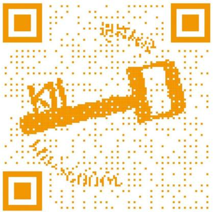</section></section><p style="white-space: normal;margin: 0px;padding: 0px;box-sizing: border-box;"><span><br/></span></p><section style="text-align: center;margin-top: 10px;margin-bottom: 10px;line-height: 0;box-sizing: border-box;"><section style="max-width: 100%;vertical-align: middle;display: inline-block;line-height: 0;width: 25%;height: auto;box-sizing: border-box;">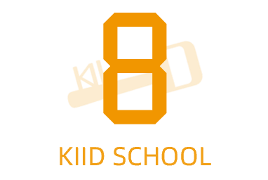</section></section><section style="text-align: center;color: rgb(241, 151, 0);line-height: 2;letter-spacing: 2px;padding: 0px 10px;box-sizing: border-box;"><p style="margin: 0px;padding: 0px;box-sizing: border-box;"><strong style="box-sizing: border-box;"><span>营地环境</span></strong></p></section><p style="white-space: normal;margin: 0px;padding: 0px;box-sizing: border-box;"><span><br/></span></p><section style="text-align: center;line-height: 2;letter-spacing: 2px;padding: 0px 10px;box-sizing: border-box;"><p style="margin: 0px;padding: 0px;box-sizing: border-box;"><strong style="box-sizing: border-box;"><span>四川国际标榜职业学院</span></strong></p></section><p style="white-space: normal;margin: 0px;padding: 0px;box-sizing: border-box;"><span><br/></span></p><section style="max-width: 100%;box-sizing: border-box;"><section style="text-align: center;justify-content: center;display: flex;flex-flow: row;max-width: 100%;box-sizing: border-box;"><section style="display: inline-block;vertical-align: middle;width: 50%;align-self: center;flex: 0 0 auto;padding-right: 5px;max-width: 100%;box-sizing: border-box;line-height: 2;margin: 5px 0px;"><section style="max-width: 100%;margin-left: 0%;margin-right: 0%;box-sizing: border-box;"><section style="max-width: 100%;box-sizing: border-box;"><section style="line-height: 0;max-width: 100%;box-sizing: border-box;"><section style="max-width: 100%;vertical-align: middle;display: inline-block;line-height: 0;box-sizing: border-box;width: 100%;height: auto;"></section></section></section></section></section><section style="display: inline-block;vertical-align: middle;width: 50%;align-self: center;flex: 0 0 auto;padding-left: 5px;max-width: 100%;box-sizing: border-box;"><section style="max-width: 100%;margin-left: 0%;margin-right: 0%;box-sizing: border-box;"><section style="max-width: 100%;box-sizing: border-box;"><section style="line-height: 0;max-width: 100%;box-sizing: border-box;"><section style="max-width: 100%;vertical-align: middle;display: inline-block;line-height: 0;box-sizing: border-box;">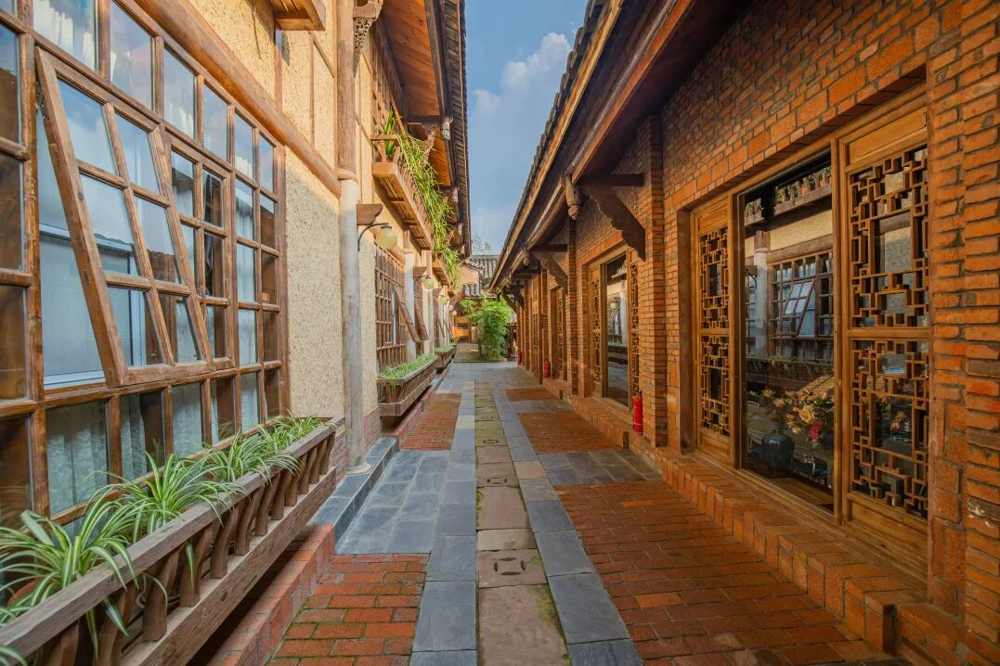</section></section></section></section></section></section></section><section style="max-width: 100%;box-sizing: border-box;"><section style="text-align: center;justify-content: center;display: flex;flex-flow: row;max-width: 100%;box-sizing: border-box;"><section style="display: inline-block;vertical-align: middle;width: 50%;align-self: center;flex: 0 0 auto;padding-right: 5px;max-width: 100%;box-sizing: border-box;margin: 5px 0px;"><section style="max-width: 100%;margin-left: 0%;margin-right: 0%;box-sizing: border-box;"><section style="max-width: 100%;box-sizing: border-box;"><section style="line-height: 0;max-width: 100%;box-sizing: border-box;"><section style="max-width: 100%;vertical-align: middle;display: inline-block;line-height: 0;box-sizing: border-box;"></section></section></section></section></section><section style="display: inline-block;vertical-align: middle;width: 50%;align-self: center;flex: 0 0 auto;padding: 0px 0px 0px 5px;max-width: 100%;box-sizing: border-box;"><section style="max-width: 100%;margin-left: 0%;margin-right: 0%;box-sizing: border-box;"><section style="max-width: 100%;box-sizing: border-box;"><section style="line-height: 0;max-width: 100%;box-sizing: border-box;"><section style="max-width: 100%;vertical-align: middle;display: inline-block;line-height: 0;box-sizing: border-box;">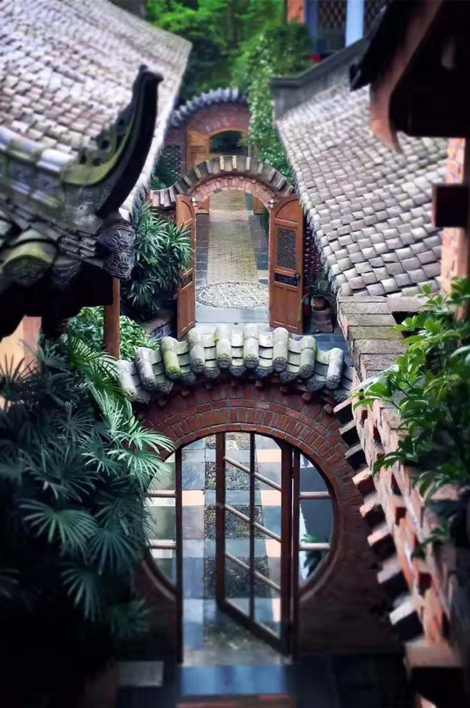</section></section></section></section></section></section></section><section style="max-width: 100%;box-sizing: border-box;"><section style="text-align: center;justify-content: center;display: flex;flex-flow: row;max-width: 100%;box-sizing: border-box;"><section style="display: inline-block;vertical-align: middle;width: 50%;align-self: center;flex: 0 0 auto;padding-right: 5px;max-width: 100%;box-sizing: border-box;"><section style="max-width: 100%;margin-left: 0%;margin-right: 0%;box-sizing: border-box;"><section style="max-width: 100%;box-sizing: border-box;"><section style="line-height: 0;max-width: 100%;box-sizing: border-box;"><section style="max-width: 100%;vertical-align: middle;display: inline-block;line-height: 0;box-sizing: border-box;"></section></section></section></section></section><section style="display: inline-block;vertical-align: middle;width: 50%;align-self: center;flex: 0 0 auto;padding-left: 5px;max-width: 100%;box-sizing: border-box;margin: 5px 0px;"><section style="max-width: 100%;margin-left: 0%;margin-right: 0%;box-sizing: border-box;"><section style="max-width: 100%;box-sizing: border-box;"><section style="line-height: 0;max-width: 100%;box-sizing: border-box;"><section style="max-width: 100%;vertical-align: middle;display: inline-block;line-height: 0;box-sizing: border-box;width: 100%;height: auto;"></section></section></section></section></section></section></section><section style="max-width: 100%;box-sizing: border-box;"><section style="text-align: center;justify-content: center;display: flex;flex-flow: row;max-width: 100%;box-sizing: border-box;"><section style="display: inline-block;vertical-align: middle;width: 50%;align-self: center;flex: 0 0 auto;padding-right: 5px;max-width: 100%;box-sizing: border-box;margin: 5px 0px;"><section style="max-width: 100%;margin-left: 0%;margin-right: 0%;box-sizing: border-box;"><section style="max-width: 100%;box-sizing: border-box;"><section style="line-height: 0;max-width: 100%;box-sizing: border-box;"><section style="max-width: 100%;vertical-align: middle;display: inline-block;line-height: 0;box-sizing: border-box;"></section></section></section></section></section><section style="display: inline-block;vertical-align: middle;width: 50%;align-self: center;flex: 0 0 auto;padding-left: 5px;max-width: 100%;box-sizing: border-box;"><section style="max-width: 100%;margin-left: 0%;margin-right: 0%;box-sizing: border-box;"><section style="max-width: 100%;box-sizing: border-box;"><section style="line-height: 0;max-width: 100%;box-sizing: border-box;"><section style="max-width: 100%;vertical-align: middle;display: inline-block;line-height: 0;box-sizing: border-box;"></section></section></section></section></section></section></section><section style="max-width: 100%;box-sizing: border-box;"><section style="text-align: center;justify-content: center;display: flex;flex-flow: row;max-width: 100%;box-sizing: border-box;"><section style="display: inline-block;vertical-align: middle;width: 50%;align-self: center;flex: 0 0 auto;padding-right: 5px;max-width: 100%;box-sizing: border-box;"><section style="max-width: 100%;margin-left: 0%;margin-right: 0%;box-sizing: border-box;"><section style="max-width: 100%;box-sizing: border-box;"><section style="line-height: 0;max-width: 100%;box-sizing: border-box;"><section style="max-width: 100%;vertical-align: middle;display: inline-block;line-height: 0;box-sizing: border-box;"></section></section></section></section></section><section style="display: inline-block;vertical-align: middle;width: 50%;align-self: center;flex: 0 0 auto;padding-left: 5px;max-width: 100%;box-sizing: border-box;margin: 5px 0px 0px;"><section style="max-width: 100%;margin-left: 0%;margin-right: 0%;box-sizing: border-box;"><section style="max-width: 100%;box-sizing: border-box;"><section style="line-height: 0;max-width: 100%;box-sizing: border-box;"><section style="max-width: 100%;vertical-align: middle;display: inline-block;line-height: 0;box-sizing: border-box;"></section></section></section></section></section></section></section><p style="white-space: normal;margin: 0px;padding: 0px;box-sizing: border-box;"><span><br/></span></p><section style="text-align: center;margin-top: 10px;margin-bottom: 10px;line-height: 0;box-sizing: border-box;"><section style="max-width: 100%;vertical-align: middle;display: inline-block;line-height: 0;width: 25%;height: auto;box-sizing: border-box;"></section></section><section style="text-align: center;color: rgb(241, 151, 0);line-height: 2;letter-spacing: 2px;padding: 0px 10px;box-sizing: border-box;"><p style="margin: 0px;padding: 0px;box-sizing: border-box;"><strong style="box-sizing: border-box;"><span>营员和家长反馈</span></strong></p></section><p style="white-space: normal;margin: 0px;padding: 0px;box-sizing: border-box;"><span><br/></span></p><section style="text-align: center;isolation: isolate;margin: 10px 0% -50px;box-sizing: border-box;"><section style='display: inline-block;width: 300px;vertical-align: top;overflow: hidden;align-self: flex-start;font-family: "Noto Sans CJK SC", -apple-system-font, BlinkMacSystemFont, "Helvetica Neue", "PingFang SC", "Hiragino Sans GB", "Microsoft YaHei UI", "Microsoft YaHei", Arial, sans-serif;letter-spacing: 0.034em;box-sizing: border-box;'><section style="height: 0px;overflow: visible;box-sizing: border-box;"><section style="display: inline-block;width: auto;vertical-align: top;box-shadow: rgb(0, 0, 0) 0px 0px 0px;flex: 100 100 0%;align-self: flex-start;height: auto;z-index: auto;margin: 0px;box-sizing: border-box;"><section style="margin: 10px 0%;justify-content: center;display: flex;flex-flow: row;width: 100%;background-color: rgb(235, 238, 237);border-width: 0px;align-self: flex-start;box-sizing: border-box;"><section style="display: flex;flex-flow: row;margin: -6px 0% 5px;justify-content: center;width: 100%;box-sizing: border-box;"><section style="display: inline-block;width: auto;vertical-align: top;background-color: rgb(255, 255, 255);flex: 100 100 0%;align-self: flex-start;height: auto;margin: 0px 5px;border-width: 1px;border-style: solid;border-color: rgb(241, 151, 0);padding: 15px 20px 45px;box-sizing: border-box;"><section style="text-align: left;margin: 0px 0% 3px;justify-content: flex-start;display: flex;flex-flow: row;box-sizing: border-box;"><section style="display: inline-block;width: auto;vertical-align: top;min-width: 10%;max-width: 100%;flex: 0 0 auto;height: auto;background-color: rgb(241, 151, 0);border-width: 0px;border-radius: 3px;border-style: none;border-color: rgb(62, 62, 62);overflow: hidden;box-shadow: rgb(233, 233, 233) 3px 3px 0px;align-self: flex-start;box-sizing: border-box;"><section style="font-size: 12px;color: rgb(255, 255, 255);padding: 0px 10px;text-align: justify;box-sizing: border-box;"><p style="white-space: normal;margin: 0px;padding: 0px;box-sizing: border-box;"><span>点此亲启</span></p></section></section></section><section style="margin: 0px 0% 2px;box-sizing: border-box;"><section style="color: rgb(241, 151, 0);line-height: 2;padding: 0px 10px;text-align: left;letter-spacing: 2px;box-sizing: border-box;"><p style="margin: 0px;padding: 0px;box-sizing: border-box;"><b style="box-sizing: border-box;"><span>营员反馈</span></b></p></section></section><section style="transform: perspective(0px);-webkit-transform: perspective(0px);-moz-transform: perspective(0px);-o-transform: perspective(0px);transform-style: flat;box-sizing: border-box;"><section style="display: flex;flex-flow: row;transform: rotateX(180deg) rotateY(180deg);-webkit-transform: rotateX(180deg) rotateY(180deg);-moz-transform: rotateX(180deg) rotateY(180deg);-o-transform: rotateX(180deg) rotateY(180deg);margin: 0px 0%;justify-content: center;box-sizing: border-box;"><section style="display: inline-block;vertical-align: middle;width: auto;flex: 0 0 0%;height: auto;align-self: center;box-sizing: border-box;"><section style="text-align: left;margin: 0px 0% -5px;font-size: 0px;box-sizing: border-box;"><section style="display: inline-block;width: 30px;height: 5px;vertical-align: top;overflow: hidden;box-shadow: rgb(0, 0, 0) 0px 0px 0px;border-style: solid solid solid none;border-width: 5px;border-color: rgb(241, 151, 0) rgba(255, 255, 255, 0) rgba(255, 255, 255, 0) rgb(223, 46, 0);box-sizing: border-box;"><svg style="float:left;line-height:0;width:0;vertical-align:top;"></svg></section></section></section><section style="display: inline-block;vertical-align: middle;width: auto;align-self: center;flex: 0 0 0%;height: auto;box-sizing: border-box;"><section style="font-size: 0px;margin: 0px 0%;box-sizing: border-box;"><section style="display: inline-block;width: 0px;height: 0px;vertical-align: top;overflow: hidden;border-width: 3px;border-style: solid;border-color: rgba(255, 255, 255, 0) rgb(241, 151, 0) rgb(241, 151, 0) rgba(255, 255, 255, 0);box-sizing: border-box;"><svg style="float:left;line-height:0;width:0;vertical-align:top;"></svg></section></section></section><section style="display: inline-block;vertical-align: middle;width: auto;align-self: center;flex: 0 0 0%;height: auto;box-sizing: border-box;"><section style="font-size: 0px;margin: 0px 0%;box-sizing: border-box;"><section style="display: inline-block;width: 0px;height: 0px;vertical-align: top;overflow: hidden;border-width: 3px;border-style: solid;border-color: rgb(241, 151, 0) rgba(255, 255, 255, 0) rgba(255, 255, 255, 0) rgb(241, 151, 0);box-sizing: border-box;"><svg style="float:left;line-height:0;width:0;vertical-align:top;"></svg></section></section></section><section style="display: inline-block;vertical-align: middle;width: auto;align-self: center;flex: 0 0 0%;height: auto;box-sizing: border-box;"><section style="font-size: 0px;margin: 0px 0%;box-sizing: border-box;"><section style="display: inline-block;width: 0px;height: 0px;vertical-align: top;overflow: hidden;border-width: 3px;border-style: solid;border-color: rgba(255, 255, 255, 0) rgb(241, 151, 0) rgb(241, 151, 0) rgba(255, 255, 255, 0);box-sizing: border-box;"><svg style="float:left;line-height:0;width:0;vertical-align:top;"></svg></section></section></section><section style="display: inline-block;vertical-align: middle;width: auto;align-self: center;flex: 0 0 0%;height: auto;box-sizing: border-box;"><section style="font-size: 0px;margin: 0px 0%;box-sizing: border-box;"><section style="display: inline-block;width: 0px;height: 0px;vertical-align: top;overflow: hidden;border-width: 3px;border-style: solid;border-color: rgb(241, 151, 0) rgba(255, 255, 255, 0) rgba(255, 255, 255, 0) rgb(241, 151, 0);box-sizing: border-box;"><svg style="float:left;line-height:0;width:0;vertical-align:top;"></svg></section></section></section><section style="display: inline-block;vertical-align: middle;width: auto;align-self: center;flex: 100 100 0%;box-sizing: border-box;"><section style="margin: 3px 0%;transform: translate3d(-5px, 0px, 0px);-webkit-transform: translate3d(-5px, 0px, 0px);-moz-transform: translate3d(-5px, 0px, 0px);-o-transform: translate3d(-5px, 0px, 0px);box-sizing: border-box;"><section style="background-color: rgba(223, 46, 0, 0.63);height: 1px;box-sizing: border-box;"><svg style="float:left;line-height:0;width:0;vertical-align:top;"></svg></section></section></section></section></section><section style="font-size: 0px;margin: -2px 0% 30px;text-align: left;justify-content: flex-start;display: flex;flex-flow: row;box-sizing: border-box;"><section style="display: inline-block;width: 33%;vertical-align: top;flex: 0 0 auto;height: auto;align-self: flex-start;box-sizing: border-box;"><section style="margin: 0.5em 0px;box-sizing: border-box;"><section style="background-color: rgba(241, 151, 0, 0.56);height: 1px;box-sizing: border-box;"><svg style="float:left;line-height:0;width:0;vertical-align:top;"></svg></section></section></section></section><section style="max-width: 100%;display: inline-block;box-sizing: border-box;"><section style="display: inline-block;background-color: rgba(255, 245, 209, 0.42);height: auto;padding: 31px;box-sizing: border-box;max-width: 100%;text-align: justify;"><section style="box-sizing: border-box;"><section style="max-width: 100%;margin: 0px 0%;box-sizing: border-box;"><section style="max-width: 100%;box-sizing: border-box;"><section style="line-height: 0;text-align: center;box-sizing: border-box;max-width: 100%;"><section style="max-width: 100%;vertical-align: middle;display: inline-block;line-height: 0;border-style: solid;border-width: 2px;border-color: rgb(255, 255, 255);box-sizing: border-box;"></section></section></section></section><section style="display: contents;box-sizing: border-box;"><section style="display: contents;box-sizing: border-box;"><section style="display: contents;box-sizing: border-box;"><section style="display: contents;box-sizing: border-box;max-width: 100%;"><p style="white-space: normal;margin: 0px;padding: 0px;box-sizing: border-box;"><span><br/></span></p></section></section></section></section><section style="max-width: 100%;box-sizing: border-box;"><section style="font-size: 12px;font-family: PingFangSC-light;box-sizing: border-box;max-width: 100%;"><p style="white-space: normal;margin: 0px;padding: 0px;box-sizing: border-box;"><span>这个暑假参加了钥匙玩校的游戏营，10天时间，让我乐在其中，营员玩在一起都很high，而且带队的老师都很愿意和我们做朋友。</span></p><p style="white-space: normal;margin: 0px;padding: 0px;box-sizing: border-box;"><span><br/></span></p><p style="white-space: normal;margin: 0px;padding: 0px;box-sizing: border-box;"><span>很多学生都苦于应试教育，也许是时候做出一些改变了，因为我们并不是万能钥匙，并不一定能开每一扇老师家长要我们打开的大门，我们也许不擅长学习，但这并没有关系。我们其实是可能的钥匙，在自己的擅长的领域上，只要前进，就会有无限可能。</span></p><p style="white-space: normal;margin: 0px;padding: 0px;box-sizing: border-box;"><span><br/></span></p><p style="white-space: normal;margin: 0px;padding: 0px;box-sizing: border-box;"><span>一个人生下来不是天才，不要在乎别人对你的评价，学校的评价，老师的评价，因为人人都有自己的天赋，每个人在自己的领域里都会有无限可能。</span></p><p style="white-space: normal;margin: 0px;padding: 0px;box-sizing: border-box;"><span><br/></span></p><p style="white-space: normal;margin: 0px;padding: 0px;box-sizing: border-box;"><span>在钥匙玩校，也许你可以找回那个心中的自己，或者领悟到学校缺失的种种东西。</span></p><p style="white-space: normal;margin: 0px;padding: 0px;box-sizing: border-box;"><span><br/></span></p><p style="white-space: normal;margin: 0px;padding: 0px;box-sizing: border-box;"><span>我从那时候起突然萌生了一个教育家的梦想，因为我也想开个帮助学生们找回自己的“玩校”。</span></p><p style="white-space: normal;margin: 0px;padding: 0px;box-sizing: border-box;"><span><br/></span></p><p style="text-align: right;white-space: normal;margin: 0px;padding: 0px;box-sizing: border-box;"><span>李泽远</span></p><p style="text-align: right;white-space: normal;margin: 0px;padding: 0px;box-sizing: border-box;"><span>当时15岁，来自北京</span></p><p style="text-align: right;white-space: normal;margin: 0px;padding: 0px;box-sizing: border-box;"><span>已成为钥匙玩校玩伴</span></p></section></section></section></section></section><section style="max-width: 100%;display: inline-block;box-sizing: border-box;"><section style="display: inline-block;background-color: rgba(255, 245, 209, 0.42);height: auto;padding: 31px;box-sizing: border-box;max-width: 100%;text-align: justify;"><section style="box-sizing: border-box;"><section style="max-width: 100%;margin: 0px 0%;box-sizing: border-box;"><section style="max-width: 100%;box-sizing: border-box;"><section style="line-height: 0;text-align: center;box-sizing: border-box;max-width: 100%;"><section style="max-width: 100%;vertical-align: middle;display: inline-block;line-height: 0;border-style: solid;border-width: 2px;border-color: rgb(255, 255, 255);box-sizing: border-box;">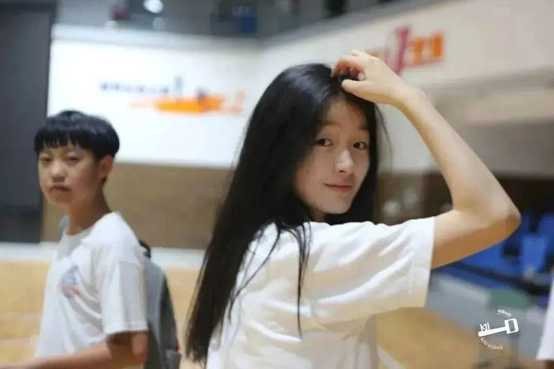</section></section></section></section><section style="display: contents;box-sizing: border-box;"><section style="display: contents;box-sizing: border-box;"><section style="display: contents;box-sizing: border-box;"><section style="display: contents;box-sizing: border-box;max-width: 100%;"><p style="white-space: normal;margin: 0px;padding: 0px;box-sizing: border-box;"><span><br/></span></p></section></section></section></section><section style="max-width: 100%;box-sizing: border-box;"><section style="font-size: 12px;font-family: PingFangSC-light;box-sizing: border-box;max-width: 100%;"><p style="white-space: normal;margin: 0px;padding: 0px;box-sizing: border-box;"><span>钥匙玩校的夏令营，是我每年暑假都会去的地方。对于我来说夏令营是很特别的。在这里收获了很多好玩、新奇的点子，一定有你意想不到的；认识了钥匙玩校的老师；钥匙玩校的老师是可爱的、充满活力的、每一个都是与众不同的，(但不妨碍他们都很八卦）。当然最重要的还是，交到了来自天南地北的好朋友。你可能想问，真的有那么好吗？我会说，钥匙玩校的夏令营可能不是世界上最好的夏令营，但在我心里它是。每当结营之后，我都会忍不住细细回味这几天的所见所闻，将收集的图片剪成一个个视频，变成在我脑海中又一段弥足珍贵的回忆。结营之后的无数个晚上，我常常会做梦。梦里大家巧笑嫣然，婆娑的树影在幻梦中摇曳。"每一次的夏天都不一样，每一次的夏令营都独一无二。″</span></p><p style="white-space: normal;margin: 0px;padding: 0px;box-sizing: border-box;"><span><br/></span></p><p style="text-align: right;white-space: normal;margin: 0px;padding: 0px;box-sizing: border-box;"><span>张圣乐</span></p><p style="text-align: right;white-space: normal;margin: 0px;padding: 0px;box-sizing: border-box;"><span>当时13岁，来自都江堰</span></p><p style="text-align: right;white-space: normal;margin: 0px;padding: 0px;box-sizing: border-box;"><span>已参加8期钥匙玩校夏令营</span></p></section></section></section></section></section><section style="max-width: 100%;display: inline-block;box-sizing: border-box;"><section style="display: inline-block;background-color: rgba(255, 245, 209, 0.42);height: auto;padding: 31px;box-sizing: border-box;max-width: 100%;text-align: left;"><section style="box-sizing: border-box;"><section style="max-width: 100%;margin: 0px 0%;box-sizing: border-box;"><section style="max-width: 100%;box-sizing: border-box;"><section style="line-height: 0;text-align: center;box-sizing: border-box;max-width: 100%;"><section style="max-width: 100%;vertical-align: middle;display: inline-block;line-height: 0;border-style: solid;border-width: 2px;border-color: rgb(255, 255, 255);box-sizing: border-box;">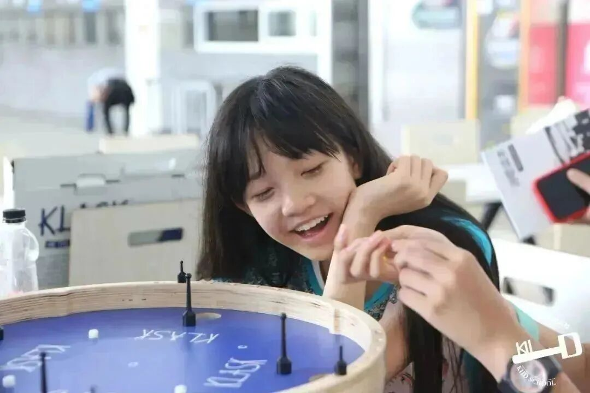</section></section></section></section><section style="display: contents;box-sizing: border-box;"><section style="display: contents;box-sizing: border-box;"><section style="display: contents;box-sizing: border-box;"><section style="display: contents;box-sizing: border-box;max-width: 100%;"><section style="text-align: justify;white-space: normal;margin: 0px;padding: 0px;box-sizing: border-box;max-width: 100%;"><p style="white-space: normal;margin: 0px;padding: 0px;box-sizing: border-box;"><span><br/></span></p></section></section></section></section></section><section style="max-width: 100%;box-sizing: border-box;"><section style="text-align: justify;font-family: PingFangSC-light;font-size: 12px;box-sizing: border-box;max-width: 100%;"><p style="white-space: normal;margin: 0px;padding: 0px;box-sizing: border-box;"><span>我只有一句话想告诉大家，就是：一定要来钥匙玩校！一定要来钥匙玩校！一定要来钥匙玩校！重要的事情说三遍。</span></p><p style="white-space: normal;margin: 0px;padding: 0px;box-sizing: border-box;"><span><br/></span></p><p style="white-space: normal;margin: 0px;padding: 0px;box-sizing: border-box;"><span>我觉得钥匙玩校特别好玩，因为你在那不仅仅是玩，还能学到东西。在学习的过程中，我感觉自己收获了很多。如果我整天打游戏，会觉得这几天都荒废了。但在钥匙玩校，虽然每天也是在玩，但我还是觉得自己做了一件很有意义的事情。</span></p><p style="white-space: normal;margin: 0px;padding: 0px;box-sizing: border-box;"><span><br/></span></p><p style="white-space: normal;margin: 0px;padding: 0px;box-sizing: border-box;"><span>首先，你将收获【友谊】我在这儿交到了好几个知心的好朋友。我们一起洗漱，吃方便面，看鬼片……这些情景都还历历在目。在此之前我还从来都没有如此有趣、温馨、难忘的经历，我也不知道具体该怎么形容，总之巨多情感融合在一块儿就是两个字“幸福”。</span></p><p style="white-space: normal;margin: 0px;padding: 0px;box-sizing: border-box;"><span><br/></span></p><p style="white-space: normal;margin: 0px;padding: 0px;box-sizing: border-box;"><span>其次，你将收获【自信】其实明显能感觉到，我冬令营时比夏令营时自信的多。我第一次来钥匙玩校的时候非常害羞，但后来就好了。我来之前一直很怕陌生人，但来了之后发现大家都非常友好，这让我变得更社牛了。我变得更开朗，更愿意去表达自己、展示自己，在团队合作时，我的组织能力提升了不少。这次冬令营有人带了笛子卖艺，我想着夏令营我一定要带上我的吉他和滑板凭本事赚钱。</span></p><p style="white-space: normal;margin: 0px;padding: 0px;box-sizing: border-box;"><span><br/></span></p><p style="white-space: normal;margin: 0px;padding: 0px;box-sizing: border-box;"><span>然后，你将收获【Baggo】这是一个抛沙包多人竞技游戏。Baggo真的太太太好玩了，我能和朋友们玩一天，但是只有来钥匙玩校才能玩到。我诚心推荐推出一个Baggo营 ，我一定第一个报名！ </span></p><p style="white-space: normal;margin: 0px;padding: 0px;box-sizing: border-box;"><span><br/></span></p><p style="white-space: normal;margin: 0px;padding: 0px;box-sizing: border-box;"><span>你如果是个感性的人，你将收获【眼泪】每当我意识到如此幸福的时光要结束时，眼泪总是不由自主的流下来。其实我分析过，这其中蕴含的是对朋友的不舍以及对Baggo的不舍…但是天下没有不散的宴席，我一直相信每一次分别都是为了更好的相聚，再一次相聚也会有新的收获，所以…夏天见！ </span></p><p style="white-space: normal;margin: 0px;padding: 0px;box-sizing: border-box;"><span><br/></span></p><p style="white-space: normal;margin: 0px;padding: 0px;box-sizing: border-box;"><span>总结一下，来钥匙玩校，你将收获【快乐】虽然分别总是很不舍，但是所有幸福、难忘的经历，都会化成美好的回忆；相机记录下的点点滴滴，也都会变成同伴手机里的表情包。</span></p><p style="white-space: normal;margin: 0px;padding: 0px;box-sizing: border-box;"><span><br/></span></p><p style="text-align: right;white-space: normal;margin: 0px;padding: 0px;box-sizing: border-box;"><span>封馨童</span></p><p style="text-align: right;white-space: normal;margin: 0px;padding: 0px;box-sizing: border-box;"><span>来自上海</span></p><p style="text-align: right;white-space: normal;margin: 0px;padding: 0px;box-sizing: border-box;"><span>已参加7期钥匙玩校夏冬令营</span></p></section></section><section style="display: contents;box-sizing: border-box;"><section style="display: contents;box-sizing: border-box;"><section style="display: contents;box-sizing: border-box;"><section style="display: contents;box-sizing: border-box;max-width: 100%;"><section style="max-width: 100%;margin-top: 10px;margin-bottom: 10px;box-sizing: border-box;"><section style="line-height: 0;text-align: center;box-sizing: border-box;max-width: 100%;"><section style="max-width: 100%;vertical-align: middle;display: inline-block;line-height: 0;box-sizing: border-box;"><span><br/></span></section></section></section></section></section></section></section></section></section></section><section style="max-width: 100%;display: inline-block;box-sizing: border-box;"><section style="display: inline-block;background-color: rgba(255, 245, 209, 0.42);height: auto;padding: 31px;box-sizing: border-box;max-width: 100%;text-align: justify;"><section style="box-sizing: border-box;"><section style="max-width: 100%;margin: 0px 0%;box-sizing: border-box;"><section style="max-width: 100%;box-sizing: border-box;"><section style="line-height: 0;text-align: center;box-sizing: border-box;max-width: 100%;"><section style="max-width: 100%;vertical-align: middle;display: inline-block;line-height: 0;border-style: solid;border-width: 2px;border-color: rgb(255, 255, 255);box-sizing: border-box;">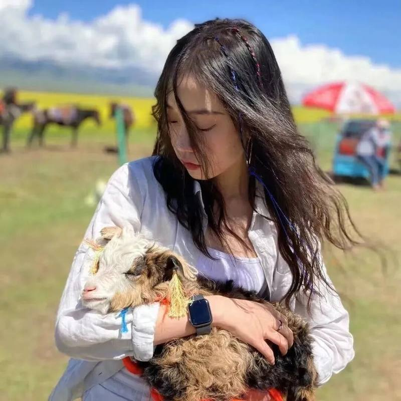</section></section></section></section><section style="display: contents;box-sizing: border-box;"><section style="display: contents;box-sizing: border-box;"><section style="display: contents;box-sizing: border-box;"><section style="display: contents;box-sizing: border-box;max-width: 100%;"><p style="white-space: normal;margin: 0px;padding: 0px;box-sizing: border-box;"><span><br/></span></p></section></section></section></section><section style="max-width: 100%;box-sizing: border-box;"><section style="font-size: 12px;font-family: PingFangSC-light;box-sizing: border-box;max-width: 100%;"><p style="white-space: normal;margin: 0px;padding: 0px;box-sizing: border-box;"><span>我现在在纽约大学读大三，主修计算机，辅修电气工程。我是在2016年开始参加一个夏令营的，当时是我妈帮我报名的，她很擅长寻找优质的资源。其实最初我并没有太多想法，只是因为她说这个夏令营特别有趣。我连续参加了两期，并在那里结识了至今仍是非常要好的朋友。我们现在还有一个小群，保持着联系。</span></p><p style="white-space: normal;margin: 0px;padding: 0px;box-sizing: border-box;"><span><br/></span></p><p style="white-space: normal;margin: 0px;padding: 0px;box-sizing: border-box;"><span>在夏令营期间，我们模拟古希腊战争游戏，一起制作盾牌、射箭等，还组团玩桌游。至今我和朋友们玩的最多的几款桌游，都是那时在营地里学会的。此外，我在营地里也积累了不少诗歌，因为每天早上我们都会一起清晨读诗，我最喜欢的几首诗也是在那里学到的。夏令营里的打水仗和各种运动也让我非常喜欢，整个营地的氛围让我觉得非常新奇，不用写小作文或者做一些无聊的事情，每天都充满趣味。</span></p><p style="white-space: normal;margin: 0px;padding: 0px;box-sizing: border-box;"><span><br/></span></p><p style="white-space: normal;margin: 0px;padding: 0px;box-sizing: border-box;"><span>这个夏令营对我一生影响深远，不仅让我结交了一辈子的朋友，还让我学到了很多有趣的知识和技能。我非常推荐大家都来报名参加这个夏令营，体验这种充实而有趣的生活。</span></p><p style="white-space: normal;margin: 0px;padding: 0px;box-sizing: border-box;"><span><br/></span></p><p style="text-align: right;white-space: normal;margin: 0px;padding: 0px;box-sizing: border-box;"><span>李璐多</span></p><p style="text-align: right;white-space: normal;margin: 0px;padding: 0px;box-sizing: border-box;"><span>钥匙玩校营员，纽约大学在读学生</span></p><p style="text-align: right;white-space: normal;margin: 0px;padding: 0px;box-sizing: border-box;"><span>已成为钥匙玩校玩伴</span></p></section></section></section></section></section><section style="text-align: justify;box-sizing: border-box;"><p style="white-space: normal;margin: 0px;padding: 0px;box-sizing: border-box;"><span><br/></span></p></section></section></section></section></section></section><section style="overflow: visible;box-sizing: border-box;"><section style="display: block;width: 100%;height: auto;box-sizing: border-box;"><section style="display: flex;box-sizing: border-box;"><svg style="box-sizing: border-box;transform: rotateZ(0deg);-webkit-transform: rotateZ(0deg);-moz-transform: rotateZ(0deg);-o-transform: rotateZ(0deg);pointer-events: none;width: 100%;"><svg style="pointer-events: none;box-sizing: border-box;"><svg style="pointer-events: auto;box-sizing: border-box;"><rect style="box-sizing: border-box;"></rect><animate style="box-sizing: border-box;"></animate></svg></svg><animate style="box-sizing: border-box;"></animate><animate style="box-sizing: border-box;"></animate><animate style="box-sizing: border-box;"></animate></svg></section></section></section></section></section><section style="text-align: center;margin: 0px 0%;isolation: isolate;line-height: 0;box-sizing: border-box;"><section style="max-width: 100%;vertical-align: middle;display: inline-block;line-height: 0;width: 100%;height: auto;box-shadow: rgb(0, 0, 0) 0px 0px 0px;border-width: 0px;box-sizing: border-box;"></section></section><section style="text-align: center;isolation: isolate;margin: 10px 0% -50px;box-sizing: border-box;"><section style='display: inline-block;width: 300px;vertical-align: top;overflow: hidden;align-self: flex-start;font-family: "Noto Sans CJK SC", -apple-system-font, BlinkMacSystemFont, "Helvetica Neue", "PingFang SC", "Hiragino Sans GB", "Microsoft YaHei UI", "Microsoft YaHei", Arial, sans-serif;letter-spacing: 0.034em;box-sizing: border-box;'><section style="height: 0px;overflow: visible;box-sizing: border-box;"><section style="display: inline-block;width: auto;vertical-align: top;box-shadow: rgb(0, 0, 0) 0px 0px 0px;flex: 100 100 0%;align-self: flex-start;height: auto;z-index: auto;margin: 0px;box-sizing: border-box;"><section style="margin: 10px 0%;justify-content: center;display: flex;flex-flow: row;width: 100%;background-color: rgb(235, 238, 237);border-width: 0px;align-self: flex-start;box-sizing: border-box;"><section style="display: flex;flex-flow: row;margin: -6px 0% 5px;justify-content: center;width: 100%;box-sizing: border-box;"><section style="display: inline-block;width: auto;vertical-align: top;background-color: rgb(255, 255, 255);flex: 100 100 0%;align-self: flex-start;height: auto;margin: 0px 5px;border-width: 1px;border-style: solid;border-color: rgb(223, 46, 0);padding: 15px 20px 45px;box-sizing: border-box;"><section style="text-align: left;margin: 0px 0% 3px;justify-content: flex-start;display: flex;flex-flow: row;box-sizing: border-box;"><section style="display: inline-block;width: auto;vertical-align: top;min-width: 10%;max-width: 100%;flex: 0 0 auto;height: auto;background-color: rgb(241, 151, 0);border-width: 0px;border-radius: 3px;border-style: none;border-color: rgb(62, 62, 62);overflow: hidden;box-shadow: rgb(233, 233, 233) 3px 3px 0px;align-self: flex-start;box-sizing: border-box;"><section style="font-size: 12px;color: rgb(255, 255, 255);padding: 0px 10px;text-align: justify;box-sizing: border-box;"><p style="white-space: normal;margin: 0px;padding: 0px;box-sizing: border-box;"><span>点此亲启</span></p></section></section></section><section style="margin: 0px 0% 2px;box-sizing: border-box;"><section style="color: rgb(241, 151, 0);line-height: 2;padding: 0px 10px;text-align: left;letter-spacing: 2px;box-sizing: border-box;"><p style="margin: 0px;padding: 0px;box-sizing: border-box;"><b style="box-sizing: border-box;"><span>家长反馈</span></b></p></section></section><section style="transform: perspective(0px);-webkit-transform: perspective(0px);-moz-transform: perspective(0px);-o-transform: perspective(0px);transform-style: flat;box-sizing: border-box;"><section style="display: flex;flex-flow: row;transform: rotateX(180deg) rotateY(180deg);-webkit-transform: rotateX(180deg) rotateY(180deg);-moz-transform: rotateX(180deg) rotateY(180deg);-o-transform: rotateX(180deg) rotateY(180deg);margin: 0px 0%;justify-content: center;box-sizing: border-box;"><section style="display: inline-block;vertical-align: middle;width: auto;flex: 0 0 0%;height: auto;align-self: center;box-sizing: border-box;"><section style="text-align: left;margin: 0px 0% -5px;font-size: 0px;box-sizing: border-box;"><section style="display: inline-block;width: 30px;height: 5px;vertical-align: top;overflow: hidden;box-shadow: rgb(0, 0, 0) 0px 0px 0px;border-style: solid solid solid none;border-width: 5px;border-color: rgb(223, 46, 0) rgba(255, 255, 255, 0) rgba(255, 255, 255, 0) rgb(223, 46, 0);box-sizing: border-box;"><svg style="float:left;line-height:0;width:0;vertical-align:top;"></svg></section></section></section><section style="display: inline-block;vertical-align: middle;width: auto;align-self: center;flex: 0 0 0%;height: auto;box-sizing: border-box;"><section style="font-size: 0px;margin: 0px 0%;box-sizing: border-box;"><section style="display: inline-block;width: 0px;height: 0px;vertical-align: top;overflow: hidden;border-width: 3px;border-style: solid;border-color: rgba(255, 255, 255, 0) rgb(223, 46, 0) rgb(223, 46, 0) rgba(255, 255, 255, 0);box-sizing: border-box;"><svg style="float:left;line-height:0;width:0;vertical-align:top;"></svg></section></section></section><section style="display: inline-block;vertical-align: middle;width: auto;align-self: center;flex: 0 0 0%;height: auto;box-sizing: border-box;"><section style="font-size: 0px;margin: 0px 0%;box-sizing: border-box;"><section style="display: inline-block;width: 0px;height: 0px;vertical-align: top;overflow: hidden;border-width: 3px;border-style: solid;border-color: rgb(223, 46, 0) rgba(255, 255, 255, 0) rgba(255, 255, 255, 0) rgb(223, 46, 0);box-sizing: border-box;"><svg style="float:left;line-height:0;width:0;vertical-align:top;"></svg></section></section></section><section style="display: inline-block;vertical-align: middle;width: auto;align-self: center;flex: 0 0 0%;height: auto;box-sizing: border-box;"><section style="font-size: 0px;margin: 0px 0%;box-sizing: border-box;"><section style="display: inline-block;width: 0px;height: 0px;vertical-align: top;overflow: hidden;border-width: 3px;border-style: solid;border-color: rgba(255, 255, 255, 0) rgb(223, 46, 0) rgb(223, 46, 0) rgba(255, 255, 255, 0);box-sizing: border-box;"><svg style="float:left;line-height:0;width:0;vertical-align:top;"></svg></section></section></section><section style="display: inline-block;vertical-align: middle;width: auto;align-self: center;flex: 0 0 0%;height: auto;box-sizing: border-box;"><section style="font-size: 0px;margin: 0px 0%;box-sizing: border-box;"><section style="display: inline-block;width: 0px;height: 0px;vertical-align: top;overflow: hidden;border-width: 3px;border-style: solid;border-color: rgb(223, 46, 0) rgba(255, 255, 255, 0) rgba(255, 255, 255, 0) rgb(223, 46, 0);box-sizing: border-box;"><svg style="float:left;line-height:0;width:0;vertical-align:top;"></svg></section></section></section><section style="display: inline-block;vertical-align: middle;width: auto;align-self: center;flex: 100 100 0%;box-sizing: border-box;"><section style="margin: 3px 0%;transform: translate3d(-5px, 0px, 0px);-webkit-transform: translate3d(-5px, 0px, 0px);-moz-transform: translate3d(-5px, 0px, 0px);-o-transform: translate3d(-5px, 0px, 0px);box-sizing: border-box;"><section style="background-color: rgba(223, 46, 0, 0.63);height: 1px;box-sizing: border-box;"><svg style="float:left;line-height:0;width:0;vertical-align:top;"></svg></section></section></section></section></section><section style="font-size: 0px;margin: -2px 0% 30px;text-align: left;justify-content: flex-start;display: flex;flex-flow: row;box-sizing: border-box;"><section style="display: inline-block;width: 33%;vertical-align: top;flex: 0 0 auto;height: auto;align-self: flex-start;box-sizing: border-box;"><section style="margin: 0.5em 0px;box-sizing: border-box;"><section style="background-color: rgba(223, 46, 0, 0.63);height: 1px;box-sizing: border-box;"><svg style="float:left;line-height:0;width:0;vertical-align:top;"></svg></section></section></section></section><section style="text-align: justify;font-size: 12px;box-sizing: border-box;"><p style="white-space: normal;margin: 0px;padding: 0px;box-sizing: border-box;"><span>李璐多参加夏令营后，我觉得她的收获真的很大。</span></p><p style="white-space: normal;margin: 0px;padding: 0px;box-sizing: border-box;"><span><br/></span></p><p style="white-space: normal;margin: 0px;padding: 0px;box-sizing: border-box;"><span>首先，她认识了很多来自全国各地的新朋友，这对她的成长来说非常重要。其次，她觉得夏令营非常有趣，这对于小孩子来说也很重要。第三，我觉得她参加夏令营后开始对很多问题有了自己的思考。我认为参加你们夏令营最重要的是让孩子在潜移默化中形成自我意识，开始思考一些事情和问题。</span></p><p style="white-space: normal;margin: 0px;padding: 0px;box-sizing: border-box;"><span><br/></span></p><p style="white-space: normal;margin: 0px;padding: 0px;box-sizing: border-box;"><span>我看到了她的变化，这可能是因为她在学校里一直和固定的同学玩耍。但是在夏令营里，她接触到了来自不同地区的小朋友，与她们之间的碰撞非常重要。还有一点特别重要的是，你们组织的活动既好玩，又能让他们学到很多课本以外的知识，我觉得特别有价值。</span></p><p style="white-space: normal;margin: 0px;padding: 0px;box-sizing: border-box;"><span><br/></span></p><p style="text-align: right;white-space: normal;margin: 0px;padding: 0px;box-sizing: border-box;"><span>——李璐多妈妈（蒲公英教育智库联合创始人）</span></p><p style="white-space: normal;margin: 0px;padding: 0px;box-sizing: border-box;"><span><br/></span></p><p style="white-space: normal;margin: 0px;padding: 0px;box-sizing: border-box;"><span>我们送孩子去了全球各地参加那么多夏令营，结果最好的，怎么就在家门口呢？</span></p><p style="white-space: normal;margin: 0px;padding: 0px;box-sizing: border-box;"><span><br/></span></p><p style="white-space: normal;margin: 0px;padding: 0px;box-sizing: border-box;"><span>问问之前参加过CTY夏令营，这是全球最著名的一个夏令营之一，为天才儿童设计。在美国，这个夏令营非常有影响力，连比尔·盖茨都参加过。但是问问后来告诉我，她说钥匙玩校一点都不比这些营地差，而且她更喜欢钥匙玩校的夏令营。</span></p><p style="white-space: normal;margin: 0px;padding: 0px;box-sizing: border-box;"><span><br/></span></p><p style="white-space: normal;margin: 0px;padding: 0px;box-sizing: border-box;"><span>我们很感谢钥匙玩校，对问问来说，有几点特别开心的。</span></p><p style="white-space: normal;margin: 0px;padding: 0px;box-sizing: border-box;"><span><br/></span></p><p style="white-space: normal;margin: 0px;padding: 0px;box-sizing: border-box;"><span>首先，好玩就不说了，我看到黑板上写的"真好玩"，确实真好玩。对她来说，还有友谊。我记得2016年他结识了果果等几个朋友，到现在他们仍是好朋友。即使在国外有短暂假期，也愿意聚在一起。我觉得这个很难得。虽然他上学时也有小学和初中同学，但和钥匙玩校的朋友感情更深厚。</span></p><p style="white-space: normal;margin: 0px;padding: 0px;box-sizing: border-box;"><span><br/></span></p><p style="white-space: normal;margin: 0px;padding: 0px;box-sizing: border-box;"><span>还有一点，问问以前不喜欢运动，但在钥匙玩校喜欢上了飞盘运动。到现在飞盘仍是他最喜欢的运动。即使外出上高中和大学，他都会把钥匙玩校的飞盘放进行李箱。那是一个黄色的飞盘。</span></p><p style="white-space: normal;margin: 0px;padding: 0px;box-sizing: border-box;"><span><br/></span></p><p style="white-space: normal;margin: 0px;padding: 0px;box-sizing: border-box;"><span>我们作为家长的感受是这两点。他自己呢，长大后，对课程的细节不一定记得很清楚，但他说池晓老师设计的课程非常高级，背后的逻辑非常好。他当时没有用这种话表达，但现在回想起来，是这种感觉。整个过程是玩中学，又有松弛感。现在的孩子松弛感更少了，我觉得在这个环境中间，给了他们松弛感，我们太感谢了。</span></p><p style="white-space: normal;margin: 0px;padding: 0px;box-sizing: border-box;"><span><br/></span></p><p style="white-space: normal;margin: 0px;padding: 0px;box-sizing: border-box;"><span>他觉得你们团队的老师像大哥哥大姐姐，非常理解青春期的孩子。孩子太需要这种理解和释放，你们的夏令营给了他们这个机会。某种意义上，钥匙玩校像孩子的一个精神家园，是特别美好的记忆。</span></p><p style="white-space: normal;margin: 0px;padding: 0px;box-sizing: border-box;"><span><br/></span></p><p style="text-align: right;white-space: normal;margin: 0px;padding: 0px;box-sizing: border-box;"><span>——刘之问妈妈</span></p><p style="white-space: normal;margin: 0px;padding: 0px;box-sizing: border-box;"><span><br/></span></p><p style="white-space: normal;margin: 0px;padding: 0px;box-sizing: border-box;"><span>通过活动照片，我看到他在营地里被激发出来的一种生命力。我觉得生命力是每个人都有的，但在我们的应试教育体制下，很多孩子的生命力被压抑了。在营地里，他不顾自己的鞋和衣服弄脏，和伙伴们一起拔河、在河里游泳、刻竹子，非常投入和专注。我从这些照片里看到了他被激发出的生命力。</span></p><p style="white-space: normal;margin: 0px;padding: 0px;box-sizing: border-box;"><span><br/></span></p><p style="white-space: normal;margin: 0px;padding: 0px;box-sizing: border-box;"><span>他回来后说：“我也不知道我收获了什么，但觉得很好玩。”这句话让我很感动。</span></p><p style="white-space: normal;margin: 0px;padding: 0px;box-sizing: border-box;"><span><br/></span></p><p style="white-space: normal;margin: 0px;padding: 0px;box-sizing: border-box;"><span>后来，他在申请哈佛大学的项目时，写了一段关于在钥匙玩校的经历。他提到在营地里学会了团队合作、解决问题、克服困难等，这些都是哈佛大学非常看重的品质。</span></p><p style="white-space: normal;margin: 0px;padding: 0px;box-sizing: border-box;"><span><br/></span></p><p style="margin: 0px;padding: 0px;box-sizing: border-box;text-align: right;white-space: normal;"><span>——张鸣姐姐</span></p><p style="margin: 0px;padding: 0px;box-sizing: border-box;white-space: normal;"><span><br/></span></p><p style="white-space: normal;margin: 0px;padding: 0px;box-sizing: border-box;"><span>因为我妻子也是教师，我们假期会给孩子报各种班。但我的想法是让孩子有更多选择的机会，让他学会为自己做主，学会选择。所以我介绍钥匙玩校的夏令营给他，并告诉他如果不喜欢，可以随时回来。孩子很谨慎，但最后还是决定尝试。</span></p><p style="white-space: normal;margin: 0px;padding: 0px;box-sizing: border-box;"><span><br/></span></p><p style="white-space: normal;margin: 0px;padding: 0px;box-sizing: border-box;"><span>实际上，我希望孩子在你们那里的时候能玩得开心一些。因为我很反感孩子每天在学校的学习方式，我希望他能在你们营地里沉浸在玩耍中，专注于活动。每次接他时，我都会发现他很投入，即使与其他营员发生矛盾，他也能玩得很开心，能够融入环境。</span></p><p style="white-space: normal;margin: 0px;padding: 0px;box-sizing: border-box;"><span><br/></span></p><p style="white-space: normal;margin: 0px;padding: 0px;box-sizing: border-box;"><span>钥匙玩校的营员都是很优质的玩伴，他也能从他们身上学到很多。</span></p><p style="white-space: normal;margin: 0px;padding: 0px;box-sizing: border-box;"><span><br/></span></p><p style="white-space: normal;margin: 0px;padding: 0px;box-sizing: border-box;"><span>我能感受到，在你们营地里，他是被内驱力驱动去玩耍和学习的。</span></p><p style="margin: 0px;padding: 0px;box-sizing: border-box;white-space: normal;"><span style="box-sizing: border-box;"><span><br/></span></span></p><p style="margin: 0px;padding: 0px;box-sizing: border-box;text-align: right;white-space: normal;"><span style="text-align: justify;box-sizing: border-box;"><span>——宋炳熠爸爸</span></span></p><p style="margin: 0px;padding: 0px;box-sizing: border-box;white-space: normal;"><span><br/></span></p><p style="white-space: normal;margin: 0px;padding: 0px;box-sizing: border-box;"><span>我每天和社群朋友分享经验时，总推荐你们的营。我信任你们，因为你们和孩子相处得很好。如果孩子和大人一起玩，尤其是那些不讨厌的大人，孩子也会愿意。</span></p><p style="white-space: normal;margin: 0px;padding: 0px;box-sizing: border-box;"><span><br/></span></p><p style="white-space: normal;margin: 0px;padding: 0px;box-sizing: border-box;"><span>我选择把女儿送到哪里去，只有一个原则，就是我信任和认同这个人，同时他会的东西我不会。如果他会的我也会，那还是我带着吧。我在这个过程中也会了解她的成长。</span></p><p style="white-space: normal;margin: 0px;padding: 0px;box-sizing: border-box;"><span><br/></span></p><p style="white-space: normal;margin: 0px;padding: 0px;box-sizing: border-box;"><span>我不会玩游戏，但我确认钥匙玩校的老师会展示给孩子和妈妈一样精彩但完全不同的东西。所以她的世界会更丰富。刚才她还说希望暑假还能再去一次钥匙玩校。</span></p><p style="white-space: normal;margin: 0px;padding: 0px;box-sizing: border-box;"><span><br/></span></p><p style="margin: 0px;padding: 0px;box-sizing: border-box;text-align: right;white-space: normal;"><span>——方盈语妈妈</span></p></section><section style="width: 100%;max-width: 100%;box-sizing: border-box;"><section style="line-height: 0;max-width: 100%;box-sizing: border-box;width: 100%;"><section style="max-width: 100%;vertical-align: middle;display: inline-block;line-height: 0;width: 100%;box-sizing: border-box;">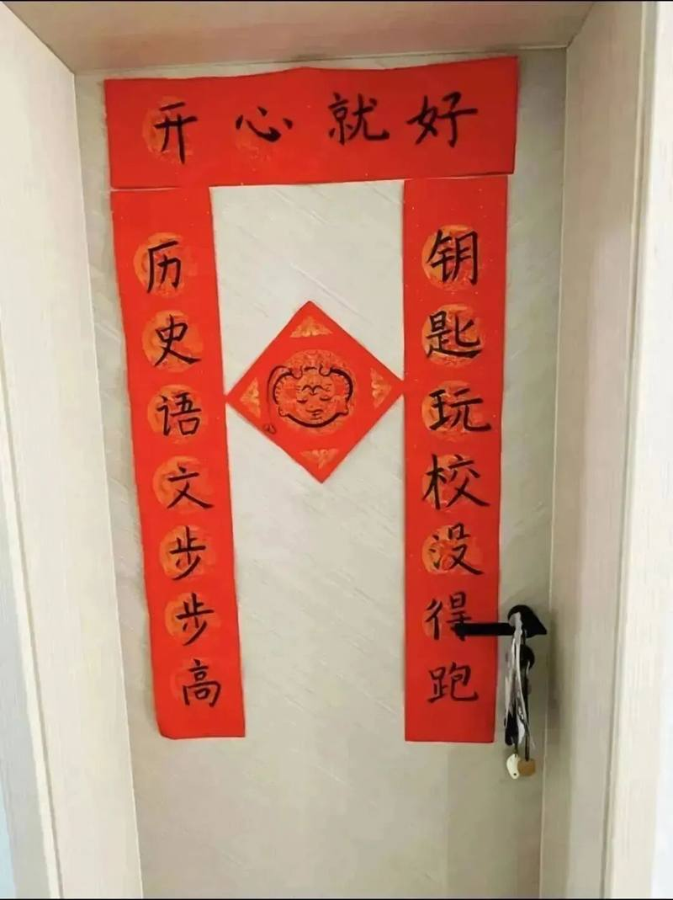</section></section></section><section style="text-align: justify;font-size: 12px;box-sizing: border-box;"><p style="white-space: normal;margin: 0px;padding: 0px;box-sizing: border-box;"><span><br/></span></p><p style="white-space: normal;margin: 0px;padding: 0px;box-sizing: border-box;"><span>这是孩子第二次参加钥匙玩校夏令营，离开时，哭的比上次还要伤心。就从这一个细节，我就知道，钥匙玩校真的是太有吸引力了。而且，通过这次，她不仅加深了和之前朋友的友谊，又结交了新的朋友。在我看来，青春期的孩子，能够有几个特别交心的朋友，真的是太重要了！很欣慰她能有这样的收获。回来之后，她写了一副对联贴在门上，表达对下次钥匙玩校之旅的期待，我也和她一起期待。</span><span><br/></span></p><p style="white-space: normal;margin: 0px;padding: 0px;box-sizing: border-box;"><span><br/></span></p><p style="text-align: right;white-space: normal;margin: 0px;padding: 0px;box-sizing: border-box;"><span>——封馨童妈妈</span></p><p style="white-space: normal;margin: 0px;padding: 0px;box-sizing: border-box;"><span><br/></span></p><p style="white-space: normal;margin: 0px;padding: 0px;box-sizing: border-box;"><span style="font-family: PingFangSC-light;letter-spacing: 0.034em;box-sizing: border-box;background-color: rgba(255, 255, 255, 0);"><span>冬令营结束了，但对小鱼儿来说这好像只是个开始，每天不停的在我的耳边说着夏令营，问我什么时候开始，让我帮她倒计时，一边吭哧吭哧背诗，一边幻想着挣“装币”。看来这次活动的确是抓住了她的心。之前她参加的营多是游玩运动类的，报这类营时我存有私心，想让她去多见识多学习。其实那时的我也对这个冬令营没有什么信心，只不过以游戏的方式展开活动可能会让她感兴趣，但具体能收获什么，我也不知。 </span></span></p><p style="white-space: normal;margin: 0px;padding: 0px;box-sizing: border-box;"><span style="letter-spacing: 0.034em;box-sizing: border-box;"><span><br/></span></span></p><p style="white-space: normal;margin: 0px;padding: 0px;box-sizing: border-box;"><span style="letter-spacing: 0.034em;box-sizing: border-box;"><span>我</span></span><span style="letter-spacing: 0.034em;box-sizing: border-box;"><span>以为我了解孩子，但也许其实并不全面，老师的反馈让我惊讶于她的幽默、创意以及踊跃的参与尝试。好吃的她多次竞争小卖部店长，用一口气喝汽水的表演当作自己的才艺展示，而且还在一天时间里报了奇奇老师的所有课程，真不知她哪来的这份精力与上进心。</span></span><span><br/></span></p><p style="white-space: normal;margin: 0px;padding: 0px;box-sizing: border-box;"><span><br/></span></p><p style="white-space: normal;margin: 0px;padding: 0px;box-sizing: border-box;"><span>接她回家时迟迟不肯离开，回家后还不停地向我讲述着那些新奇有趣的活动和让她钦佩的老师们，那亢奋的状态足足持续了几天。我在想，是什么让这孩子充满了激情？游戏真的有如此多的魅力？是什么点燃了她的兴趣？“不务识”的教育给了现行沉闷单调的方式重重一击。</span></p><p style="white-space: normal;margin: 0px;padding: 0px;box-sizing: border-box;"><span><br/></span></p><p style="white-space: normal;margin: 0px;padding: 0px;box-sizing: border-box;"><span>鱼儿说她还要去，不仅是参加活动，还要去做助教，当老师。呵~~好呀，一场活动下来职业方向都找到了，岂不是赚了！</span></p><p style="white-space: normal;margin: 0px;padding: 0px;box-sizing: border-box;"><span><br/></span></p><p style="margin: 0px;padding: 0px;box-sizing: border-box;text-align: right;white-space: normal;"><span>——余知乐妈妈</span></p><p style="margin: 0px;padding: 0px;box-sizing: border-box;white-space: normal;"><span><br/></span></p><p style="margin: 0px;padding: 0px;box-sizing: border-box;white-space: normal;"><span>营地回来睿情绪不高，原来是对营地和形影不离的新好友有很多不舍…</span><span style="box-sizing: border-box;"><span>在鼓励激发孩子释放天性的夏令营其实每个营员多少都会雨露均沾，而老母亲最欢喜的是睿在打开自己全情投入，满脸灿烂，大声歌唱。</span></span><span style="box-sizing: border-box;"><span>老师们有情怀有大能量，你们发光，照亮营里的孩子和家庭，又散播下去。</span></span></p><p style="margin: 0px;padding: 0px;box-sizing: border-box;text-align: right;white-space: normal;"><span style="text-align: justify;box-sizing: border-box;"><span>——张昕睿妈妈</span></span></p><p style="margin: 0px;padding: 0px;box-sizing: border-box;white-space: normal;"><span><br/></span></p><p style="white-space: normal;margin: 0px;padding: 0px;box-sizing: border-box;"><span>梓钦在家也曾痴迷网游动漫两三年，我也会围追堵截。不过他说打发时间而已，感觉无聊罢了。后来我也思考他是缺少环境和可以被激发的项目了，小小少年需要向外寻找了。</span><span style="letter-spacing: 0.034em;box-sizing: border-box;"><span>于是，有了钥匙玩校的一行。</span></span><span style="letter-spacing: 0.034em;box-sizing: border-box;"><span>在群里看见照片视频，他在打开自己，寻找自己的意义感，热爱被渐渐点燃，真好。</span></span></p><p style="white-space: normal;margin: 0px;padding: 0px;box-sizing: border-box;"><span><br/></span></p><p style="white-space: normal;margin: 0px;padding: 0px;box-sizing: border-box;"><span>这一行14天，他释放了，那个小小的阳光快乐男孩。孩子需要被关注，被引导，但需要环境的宽松包容正向鼓励陪伴啊！</span></p><p style="white-space: normal;margin: 0px;padding: 0px;box-sizing: border-box;"><span><br/></span></p><p style="white-space: normal;margin: 0px;padding: 0px;box-sizing: border-box;"><span>感谢你们！感谢钥匙玩校的设计，各位老师玩伴的悉心陪伴。自我救赎虽是自己的，小小少年是需要一个大环境的熏染的！</span><span style="letter-spacing: 0.034em;box-sizing: border-box;"><span>缺少力量感的妈妈，不可能成为一个村子。有说法，养大一个男孩，需要一个村子的努力。还好，幸运遇见了钥匙玩校这个村庄。</span></span></p><p style="white-space: normal;margin: 0px;padding: 0px;box-sizing: border-box;text-align: right;"><span>——向梓钦妈妈</span></p></section></section></section></section></section></section><section style="overflow: visible;box-sizing: border-box;"><section style="display: block;width: 100%;height: auto;box-sizing: border-box;"><section style="display: flex;box-sizing: border-box;"><svg style="box-sizing: border-box;transform: rotateZ(0deg);-webkit-transform: rotateZ(0deg);-moz-transform: rotateZ(0deg);-o-transform: rotateZ(0deg);pointer-events: none;width: 100%;"><svg style="pointer-events: none;box-sizing: border-box;"><svg style="pointer-events: auto;box-sizing: border-box;"><rect style="box-sizing: border-box;"></rect><animate style="box-sizing: border-box;"></animate></svg></svg><animate style="box-sizing: border-box;"></animate><animate style="box-sizing: border-box;"></animate><animate style="box-sizing: border-box;"></animate></svg></section></section></section></section></section><section style="text-align: center;margin: 0px 0%;isolation: isolate;line-height: 0;box-sizing: border-box;"><section style="max-width: 100%;vertical-align: middle;display: inline-block;line-height: 0;width: 100%;height: auto;box-shadow: rgb(0, 0, 0) 0px 0px 0px;border-width: 0px;box-sizing: border-box;"></section></section><p style="white-space: normal;margin: 0px;padding: 0px;box-sizing: border-box;"><span><br/></span></p><section style="margin: 10px 0%;box-sizing: border-box;"><section style="letter-spacing: 2px;color: rgb(255, 255, 255);text-shadow: rgb(51, 51, 51) 1px 1px, rgb(51, 51, 51) 1px -1px, rgb(51, 51, 51) -1px 1px, rgb(51, 51, 51) -1px -1px, rgb(51, 51, 51) 0px 1.4px, rgb(51, 51, 51) 0px -1.4px, rgb(51, 51, 51) -1.4px 0px, rgb(51, 51, 51) 1.4px 0px, rgb(255, 222, 23) 2px 2px, rgb(255, 222, 23) 3px 3px, rgb(255, 222, 23) 3px 1px, rgb(255, 222, 23) 1px 3px, rgb(255, 222, 23) 1px 1px, rgb(255, 222, 23) 2px 3.4px, rgb(255, 222, 23) 2px 0.6px, rgb(255, 222, 23) 0.6px 2px, rgb(255, 222, 23) 3.4px 2px;text-align: center;line-height: 2;padding: 0px 10px;box-sizing: border-box;"><p style="margin: 0px;padding: 0px;box-sizing: border-box;"><strong style="box-sizing: border-box;"><em style="box-sizing: border-box;"><span>2026夏令营汇总</span></em></strong></p></section></section><p style="white-space: normal;margin: 0px;padding: 0px;box-sizing: border-box;"><span><br/></span></p><section style="text-align: center;margin-top: 10px;margin-bottom: 10px;line-height: 0;box-sizing: border-box;"><section style="max-width: 100%;vertical-align: middle;display: inline-block;line-height: 0;width: 100%;box-sizing: border-box;">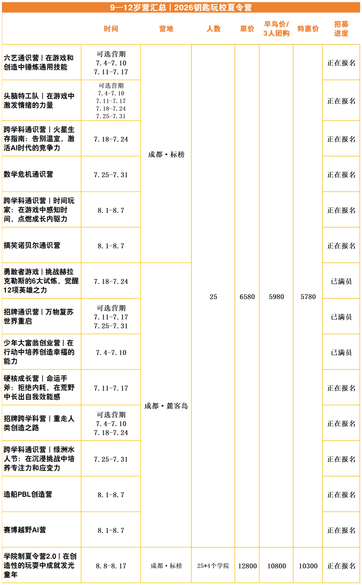</section></section><section style="text-align: center;margin-top: 10px;margin-bottom: 10px;line-height: 0;box-sizing: border-box;"><section style="max-width: 100%;vertical-align: middle;display: inline-block;line-height: 0;width: 100%;box-sizing: border-box;">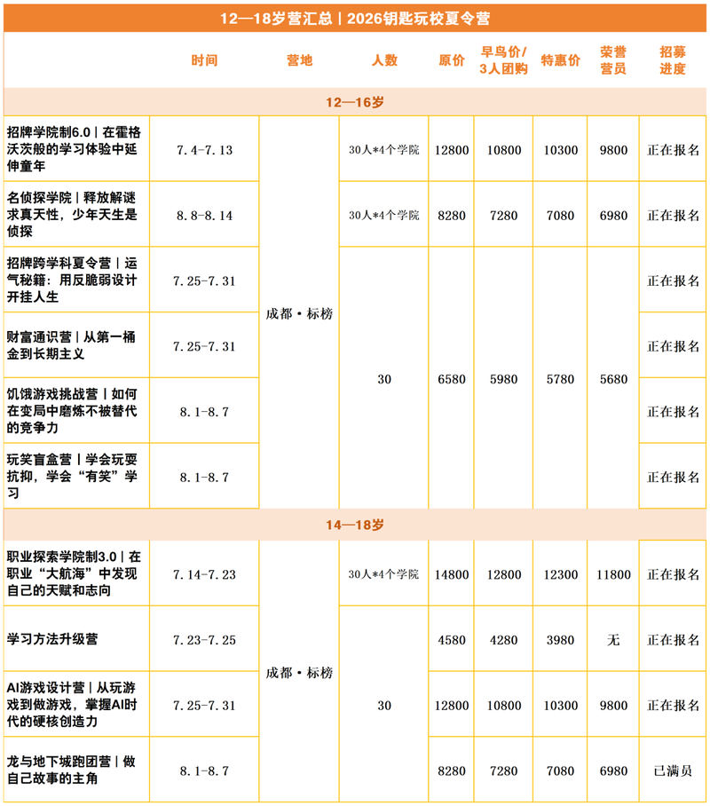</section></section><p style="white-space: normal;margin: 0px;padding: 0px;box-sizing: border-box;"><span><br/></span></p><section style="text-align: left;justify-content: flex-start;display: flex;flex-flow: row;box-sizing: border-box;"><section style="display: inline-block;vertical-align: top;width: 50%;align-self: flex-start;flex: 0 0 auto;padding: 0px 5px 0px 0px;margin: 5px 0px;box-sizing: border-box;"><section style="line-height: 0;box-sizing: border-box;"><section style="max-width: 100%;vertical-align: middle;display: inline-block;line-height: 0;width: 100%;height: auto;box-sizing: border-box;">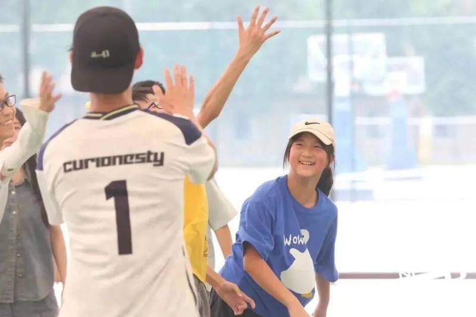</section></section></section><section style="display: inline-block;vertical-align: top;width: 50%;align-self: flex-start;flex: 0 0 auto;padding: 0px 0px 0px 5px;margin: 5px 0px;box-sizing: border-box;"><section style="line-height: 0;box-sizing: border-box;"><section style="max-width: 100%;vertical-align: middle;display: inline-block;line-height: 0;box-sizing: border-box;">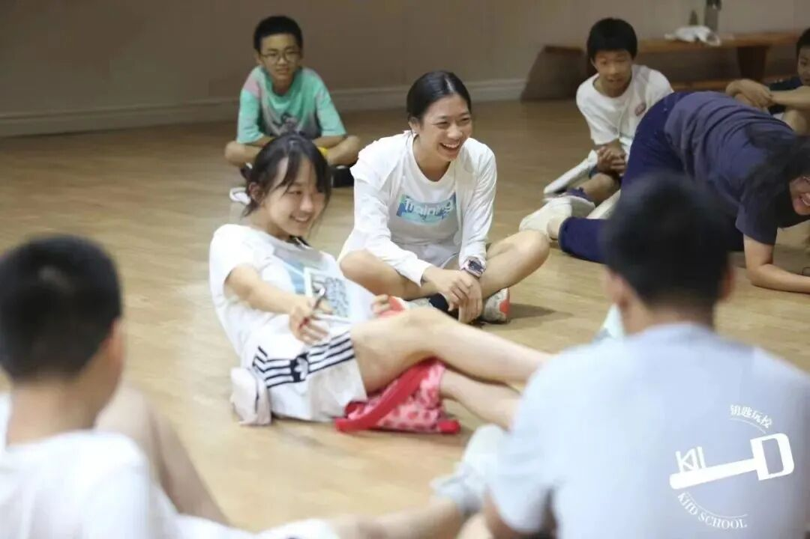</section></section></section></section><section style="text-align: left;justify-content: flex-start;display: flex;flex-flow: row;box-sizing: border-box;"><section style="display: inline-block;vertical-align: top;width: 50%;align-self: flex-start;flex: 0 0 auto;padding: 0px 5px 0px 0px;margin: 5px 0px;box-sizing: border-box;"><section style="line-height: 0;box-sizing: border-box;"><section style="max-width: 100%;vertical-align: middle;display: inline-block;line-height: 0;box-sizing: border-box;">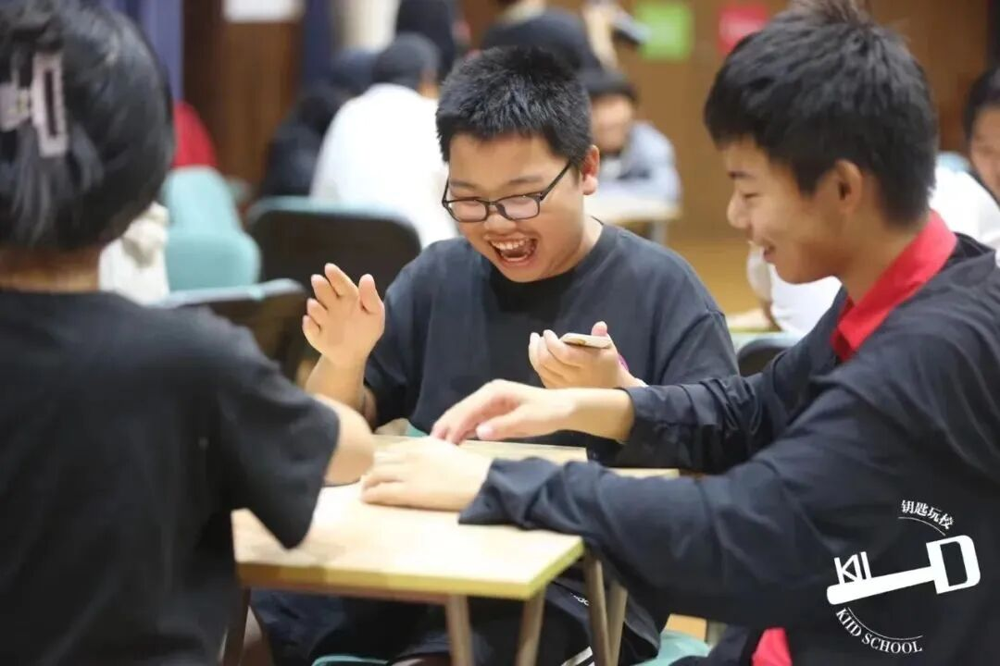</section></section></section><section style="display: inline-block;vertical-align: top;width: 50%;align-self: flex-start;flex: 0 0 auto;padding: 0px 0px 0px 5px;margin: 5px 0px;box-sizing: border-box;"><section style="line-height: 0;box-sizing: border-box;"><section style="max-width: 100%;vertical-align: middle;display: inline-block;line-height: 0;box-sizing: border-box;">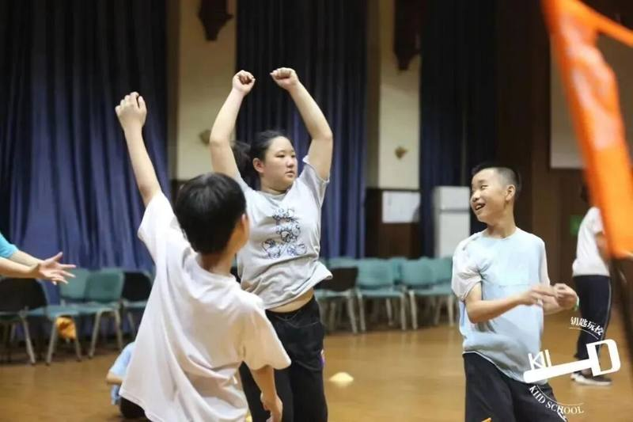</section></section></section></section><section style="text-align: left;justify-content: flex-start;display: flex;flex-flow: row;box-sizing: border-box;"><section style="display: inline-block;vertical-align: top;width: 50%;align-self: flex-start;flex: 0 0 auto;padding: 0px 5px 0px 0px;margin: 5px 0px;box-sizing: border-box;"><section style="line-height: 0;box-sizing: border-box;"><section style="max-width: 100%;vertical-align: middle;display: inline-block;line-height: 0;box-sizing: border-box;">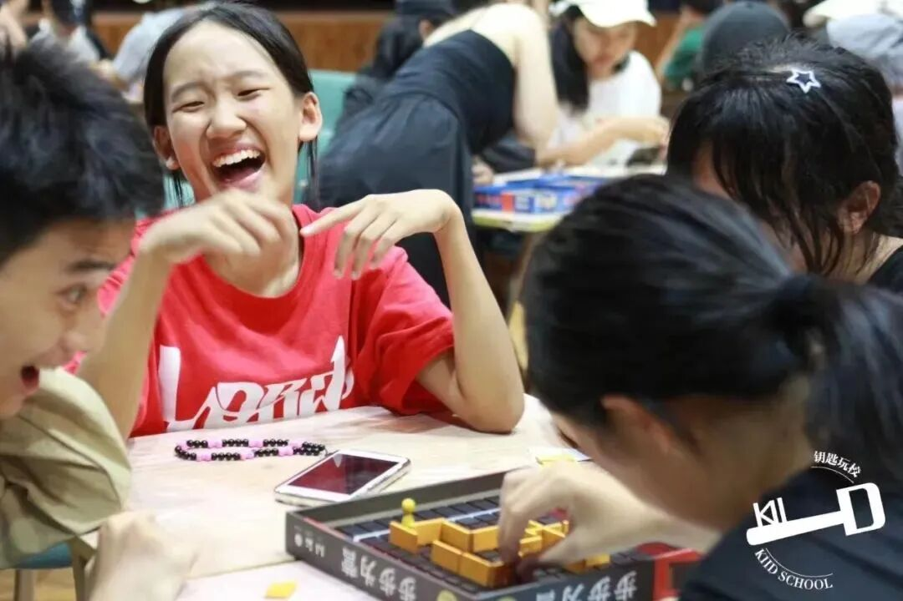</section></section></section><section style="display: inline-block;vertical-align: top;width: 50%;align-self: flex-start;flex: 0 0 auto;padding: 0px 0px 0px 5px;margin: 5px 0px;box-sizing: border-box;"><section style="line-height: 0;box-sizing: border-box;"><section style="max-width: 100%;vertical-align: middle;display: inline-block;line-height: 0;box-sizing: border-box;">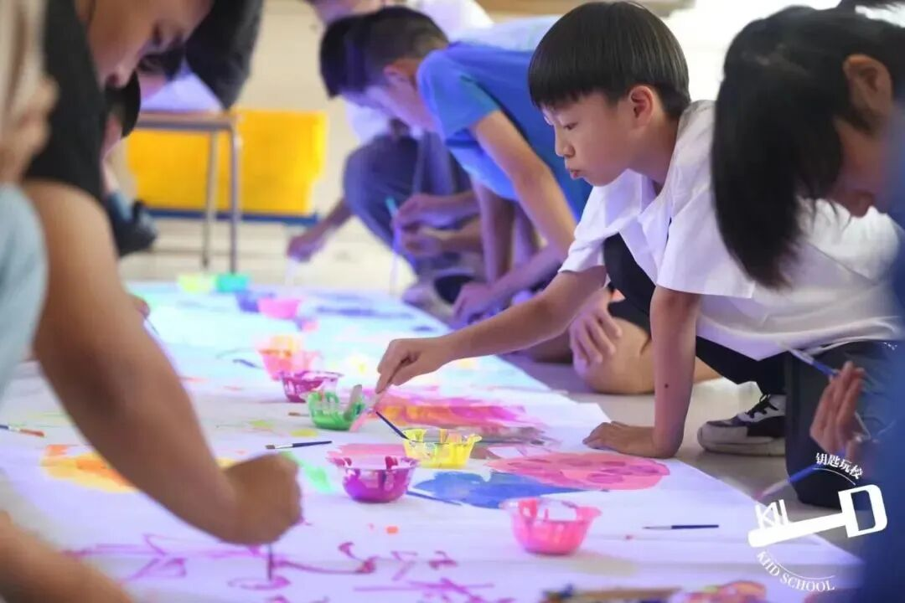</section></section></section></section><section style="text-align: left;justify-content: flex-start;display: flex;flex-flow: row;box-sizing: border-box;"><section style="display: inline-block;vertical-align: top;width: 50%;align-self: flex-start;flex: 0 0 auto;margin: 5px 0px;padding: 0px 5px 0px 0px;box-sizing: border-box;"><section style="line-height: 0;box-sizing: border-box;"><section style="max-width: 100%;vertical-align: middle;display: inline-block;line-height: 0;box-sizing: border-box;">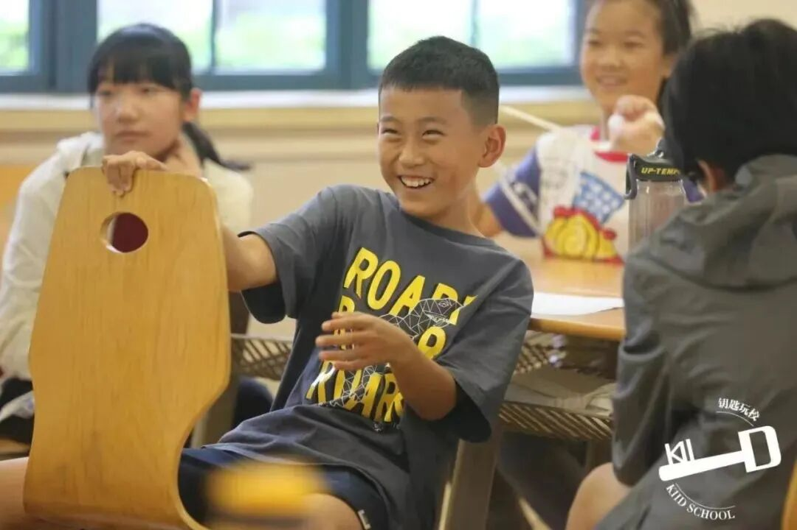</section></section></section><section style="display: inline-block;vertical-align: top;width: 50%;align-self: flex-start;flex: 0 0 auto;margin: 5px 0px;padding: 0px 0px 0px 5px;box-sizing: border-box;"><section style="line-height: 0;box-sizing: border-box;"><section style="max-width: 100%;vertical-align: middle;display: inline-block;line-height: 0;box-sizing: border-box;"></section></section></section></section><section style="text-align: left;justify-content: flex-start;display: flex;flex-flow: row;box-sizing: border-box;"><section style="display: inline-block;vertical-align: top;width: 50%;align-self: flex-start;flex: 0 0 auto;padding: 0px 5px 0px 0px;margin: 5px 0px;box-sizing: border-box;"><section style="line-height: 0;box-sizing: border-box;"><section style="max-width: 100%;vertical-align: middle;display: inline-block;line-height: 0;box-sizing: border-box;">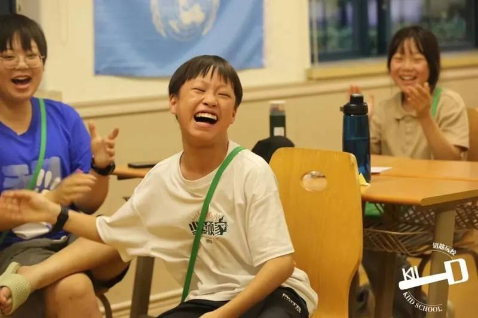</section></section></section><section style="display: inline-block;vertical-align: top;width: 50%;align-self: flex-start;flex: 0 0 auto;margin: 5px 0px;padding: 0px 0px 0px 5px;box-sizing: border-box;"><section style="line-height: 0;box-sizing: border-box;"><section style="max-width: 100%;vertical-align: middle;display: inline-block;line-height: 0;box-sizing: border-box;">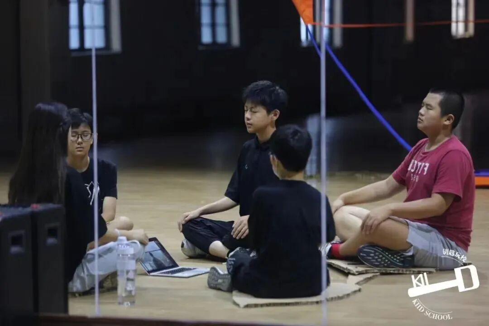</section></section></section></section><section style="text-align: left;justify-content: flex-start;display: flex;flex-flow: row;box-sizing: border-box;"><section style="display: inline-block;vertical-align: top;width: 50%;align-self: flex-start;flex: 0 0 auto;padding: 0px 5px 0px 0px;margin: 5px 0px;box-sizing: border-box;"><section style="line-height: 0;box-sizing: border-box;"><section style="max-width: 100%;vertical-align: middle;display: inline-block;line-height: 0;box-sizing: border-box;">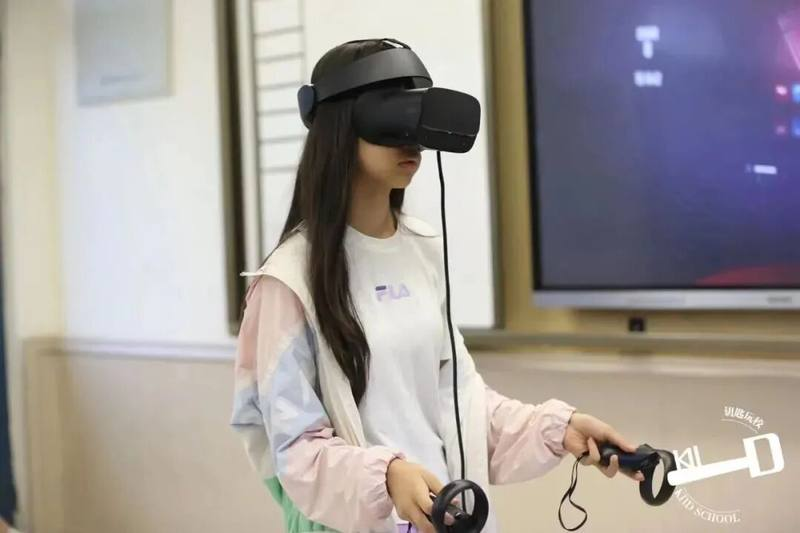</section></section></section><section style="display: inline-block;vertical-align: top;width: 50%;align-self: flex-start;flex: 0 0 auto;margin: 5px 0px;padding: 0px 0px 0px 5px;box-sizing: border-box;"><section style="line-height: 0;box-sizing: border-box;"><section style="max-width: 100%;vertical-align: middle;display: inline-block;line-height: 0;box-sizing: border-box;">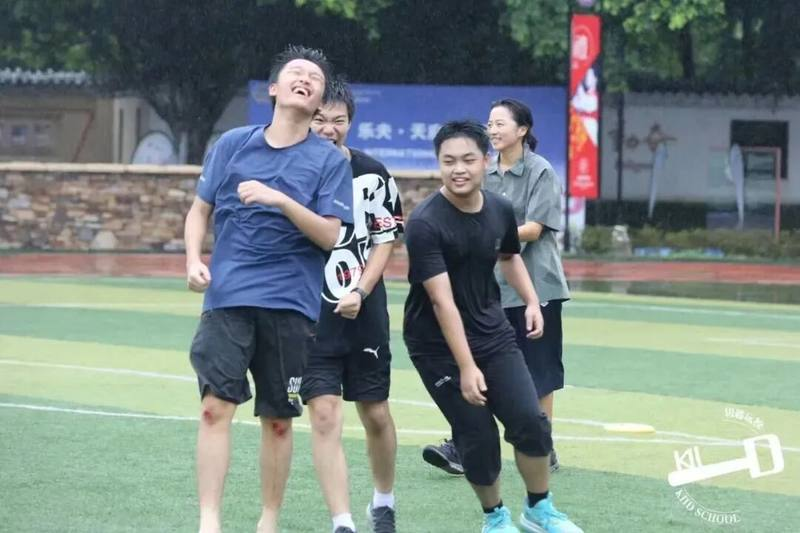</section></section></section></section><section style="text-align: left;justify-content: flex-start;display: flex;flex-flow: row;box-sizing: border-box;"><section style="display: inline-block;vertical-align: top;width: 50%;align-self: flex-start;flex: 0 0 auto;padding: 0px 5px 0px 0px;margin: 5px 0px;box-sizing: border-box;"><section style="line-height: 0;box-sizing: border-box;"><section style="max-width: 100%;vertical-align: middle;display: inline-block;line-height: 0;box-sizing: border-box;"></section></section></section><section style="display: inline-block;vertical-align: top;width: 50%;align-self: flex-start;flex: 0 0 auto;padding: 0px 0px 0px 5px;margin: 5px 0px;box-sizing: border-box;"><section style="line-height: 0;box-sizing: border-box;"><section style="max-width: 100%;vertical-align: middle;display: inline-block;line-height: 0;box-sizing: border-box;"></section></section></section></section><section style="text-align: left;justify-content: flex-start;display: flex;flex-flow: row;box-sizing: border-box;"><section style="display: inline-block;vertical-align: top;width: 50%;align-self: flex-start;flex: 0 0 auto;padding: 0px 5px 0px 0px;margin: 5px 0px;box-sizing: border-box;"><section style="line-height: 0;box-sizing: border-box;"><section style="max-width: 100%;vertical-align: middle;display: inline-block;line-height: 0;box-sizing: border-box;"></section></section></section><section style="display: inline-block;vertical-align: top;width: 50%;align-self: flex-start;flex: 0 0 auto;padding: 0px 0px 0px 5px;margin: 5px 0px;box-sizing: border-box;"><section style="line-height: 0;box-sizing: border-box;"><section style="max-width: 100%;vertical-align: middle;display: inline-block;line-height: 0;box-sizing: border-box;"></section></section></section></section><section style="text-align: left;justify-content: flex-start;display: flex;flex-flow: row;box-sizing: border-box;"><section style="display: inline-block;vertical-align: top;width: 50%;align-self: flex-start;flex: 0 0 auto;padding: 0px 5px 0px 0px;margin: 5px 0px;box-sizing: border-box;"><section style="line-height: 0;box-sizing: border-box;"><section style="max-width: 100%;vertical-align: middle;display: inline-block;line-height: 0;box-sizing: border-box;"></section></section></section><section style="display: inline-block;vertical-align: top;width: 50%;align-self: flex-start;flex: 0 0 auto;margin: 5px 0px;padding: 0px 0px 0px 5px;box-sizing: border-box;"><section style="line-height: 0;box-sizing: border-box;"><section style="max-width: 100%;vertical-align: middle;display: inline-block;line-height: 0;box-sizing: border-box;">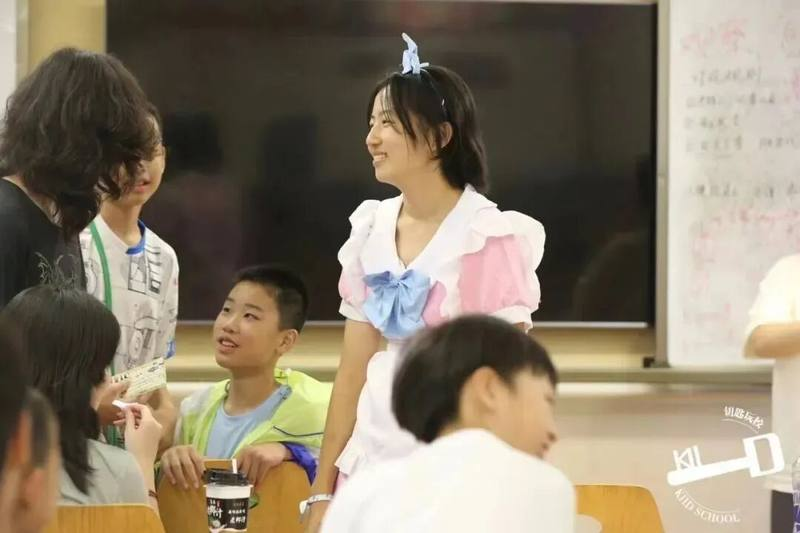</section></section></section></section><section style="text-align: left;justify-content: flex-start;display: flex;flex-flow: row;box-sizing: border-box;"><section style="display: inline-block;vertical-align: top;width: 50%;align-self: flex-start;flex: 0 0 auto;margin: 5px 0px;padding: 0px 5px 0px 0px;box-sizing: border-box;"><section style="line-height: 0;box-sizing: border-box;"><section style="max-width: 100%;vertical-align: middle;display: inline-block;line-height: 0;box-sizing: border-box;"></section></section></section><section style="display: inline-block;vertical-align: top;width: 50%;align-self: flex-start;flex: 0 0 auto;margin: 5px 0px;padding: 0px 0px 0px 5px;box-sizing: border-box;"><section style="line-height: 0;box-sizing: border-box;"><section style="max-width: 100%;vertical-align: middle;display: inline-block;line-height: 0;box-sizing: border-box;"></section></section></section></section><section style="text-align: left;justify-content: flex-start;display: flex;flex-flow: row;box-sizing: border-box;"><section style="display: inline-block;vertical-align: top;width: 50%;align-self: flex-start;flex: 0 0 auto;padding: 0px 5px 0px 0px;margin: 5px 0px;box-sizing: border-box;"><section style="line-height: 0;box-sizing: border-box;"><section style="max-width: 100%;vertical-align: middle;display: inline-block;line-height: 0;box-sizing: border-box;"></section></section></section><section style="display: inline-block;vertical-align: top;width: 50%;align-self: flex-start;flex: 0 0 auto;margin: 5px 0px;padding: 0px 0px 0px 5px;box-sizing: border-box;"><section style="line-height: 0;box-sizing: border-box;"><section style="max-width: 100%;vertical-align: middle;display: inline-block;line-height: 0;box-sizing: border-box;"></section></section></section></section><section style="text-align: left;justify-content: flex-start;display: flex;flex-flow: row;box-sizing: border-box;"><section style="display: inline-block;vertical-align: top;width: 50%;align-self: flex-start;flex: 0 0 auto;margin: 5px 0px;padding: 0px 5px 0px 0px;box-sizing: border-box;"><section style="line-height: 0;box-sizing: border-box;"><section style="max-width: 100%;vertical-align: middle;display: inline-block;line-height: 0;box-sizing: border-box;"></section></section></section><section style="display: inline-block;vertical-align: top;width: 50%;align-self: flex-start;flex: 0 0 auto;margin: 5px 0px;padding: 0px 0px 0px 5px;box-sizing: border-box;"><section style="line-height: 0;box-sizing: border-box;"><section style="max-width: 100%;vertical-align: middle;display: inline-block;line-height: 0;box-sizing: border-box;"></section></section></section></section><section style="text-align: left;justify-content: flex-start;display: flex;flex-flow: row;box-sizing: border-box;"><section style="display: inline-block;vertical-align: top;width: 50%;align-self: flex-start;flex: 0 0 auto;margin: 5px 0px;padding: 0px 5px 0px 0px;box-sizing: border-box;"><section style="line-height: 0;box-sizing: border-box;"><section style="max-width: 100%;vertical-align: middle;display: inline-block;line-height: 0;box-sizing: border-box;"></section></section></section><section style="display: inline-block;vertical-align: top;width: 50%;align-self: flex-start;flex: 0 0 auto;margin: 5px 0px;padding: 0px 0px 0px 5px;box-sizing: border-box;"><section style="line-height: 0;box-sizing: border-box;"><section style="max-width: 100%;vertical-align: middle;display: inline-block;line-height: 0;box-sizing: border-box;"></section></section></section></section><p style="white-space: normal;margin: 0px;padding: 0px;box-sizing: border-box;"><span><br/></span></p><section style="text-align: center;margin-top: 10px;margin-bottom: 10px;line-height: 0;box-sizing: border-box;"><section style="max-width: 100%;vertical-align: middle;display: inline-block;line-height: 0;width: 20%;height: auto;box-sizing: border-box;"></section></section><section style="text-align: center;font-size: 18px;color: rgb(241, 150, 0);padding: 0px;box-sizing: border-box;"><p style="margin: 0px;padding: 0px;box-sizing: border-box;"><strong style="box-sizing: border-box;"><span>「关于我们」</span></strong></p></section><p style="white-space: normal;margin: 0px;padding: 0px;box-sizing: border-box;"><span><br/></span></p><section style="max-width: 100%;box-sizing: border-box;"><section style="text-align: unset;margin-right: 0em;margin-left: 0em;outline: 0px;max-width: 100%;box-sizing: border-box;"><p style="outline: 0px;margin: 0px;padding: 0px;box-sizing: border-box;"><span style="outline: 0px;color: rgb(62, 62, 62);font-size: 12px;letter-spacing: 0.544px;text-indent: 0em;box-sizing: border-box;"><span>钥匙玩校，开门的钥匙，好玩的学校。好品味爸妈给孩子的最佳暑假礼物。成立于2015年。坐标成都。专业的青春期营地教育品牌。以原创能力著称的教育创意集散地。坚持小规模的高质量教育。我们的使命是“让教育好玩起来”，以“游戏即学习”为核心理念，通过游戏式的创造活动，传递学习乐趣。服务8-18岁孩子的家庭，解决孩子假期既要放松又要学习的问题，提供深度沉浸的游戏式学习体验。</span></span></p><p style="outline: 0px;margin: 0px;padding: 0px;box-sizing: border-box;"><span style="outline: 0px;color: rgb(62, 62, 62);font-size: 12px;letter-spacing: 0.544px;text-indent: 0em;box-sizing: border-box;"><span><br/></span></span></p><p style="margin: 0px;padding: 0px;box-sizing: border-box;"><span style="outline: 0px;color: rgb(62, 62, 62);font-size: 12px;letter-spacing: 0.544px;text-decoration-style: solid;text-decoration-color: rgb(62, 62, 62);box-sizing: border-box;"><span>目前，我们的营员已经遍布全球各地的知名学府，很多孩子在这里告别了厌学状态，很多孩子在这里发现了自己的隐藏技能。很多孩子在青少年时期就在钥匙玩校成为了彼此的至交。“每个青少年都该去一次钥匙玩校”。</span></span></p><p style="margin: 0px;padding: 0px;box-sizing: border-box;"><span style="outline: 0px;color: rgb(62, 62, 62);font-size: 12px;letter-spacing: 0.544px;text-decoration-style: solid;text-decoration-color: rgb(62, 62, 62);box-sizing: border-box;"><span><br/></span></span></p><p style="margin: 0px;padding: 0px;box-sizing: border-box;"><span style="outline: 0px;color: rgb(62, 62, 62);font-size: 12px;letter-spacing: 0.544px;text-decoration-style: solid;text-decoration-color: rgb(62, 62, 62);box-sizing: border-box;"><span>曾被三联生活周刊、华西都市报、教育导报、新城快报、新华网、36氪、BIE别的、GQ中国等多家媒体报道。</span></span></p><p style="margin: 0px;padding: 0px;box-sizing: border-box;"><span style="outline: 0px;color: rgb(62, 62, 62);font-size: 12px;letter-spacing: 0.544px;text-decoration-style: solid;text-decoration-color: rgb(62, 62, 62);box-sizing: border-box;"><span><br/></span></span></p><p style="margin: 0px;padding: 0px;box-sizing: border-box;"><span style="outline: 0px;color: rgb(62, 62, 62);font-size: 12px;letter-spacing: 0.544px;text-decoration-style: solid;text-decoration-color: rgb(62, 62, 62);box-sizing: border-box;"><span>目前已推出超过40种原创冬夏令营系列活动，以及超过500个游戏项目：“达芬奇的眼睛”通识营、“反恐精英”创造力训练营、“埃尔特”神经联动营、重走人类创造之路、“电光火石”电影制作营、数学桌游营、“心灵捕手”心理健康营、鸡蛋通识营、学院制夏令营、世界重启营、桥梁工程营、游戏设计营、学习方法营等。</span></span></p><p style="margin: 0px;padding: 0px;box-sizing: border-box;"><span style="outline: 0px;color: rgb(62, 62, 62);font-size: 12px;letter-spacing: 0.544px;text-decoration-style: solid;text-decoration-color: rgb(62, 62, 62);box-sizing: border-box;"><span><br/></span></span></p><p style="margin: 0px;padding: 0px;box-sizing: border-box;"><span style="outline: 0px;color: rgb(62, 62, 62);font-size: 12px;letter-spacing: 0.544px;text-decoration-style: solid;text-decoration-color: rgb(62, 62, 62);box-sizing: border-box;"><span>好奇教育旗下除了钥匙玩校夏令营，好奇学习社区提供更加沉浸的通识教育和个性化教育。详见<a class="normal_text_link mp_article_text_link" href="https://mp.weixin.qq.com/s?__biz=Mzg4OTU4ODg5Ng==&amp;mid=2247496547&amp;idx=1&amp;sn=4096ed086f122f0cc0fdb4cd28555be2&amp;scene=21#wechat_redirect" style="box-sizing: border-box;">好奇学习社区公众号</a>。</span></span></p></section></section><p style="white-space: normal;margin: 0px;padding: 0px;box-sizing: border-box;"><span><br/></span></p><section style="max-width: 100%;box-sizing: border-box;"><section style="text-align: left;justify-content: flex-start;display: flex;flex-flow: row;box-sizing: border-box;max-width: 100%;"><section style="display: inline-block;vertical-align: middle;width: 50%;align-self: center;flex: 0 1 auto;padding: 0px 5px 0px 0px;box-sizing: border-box;max-width: 100%;margin: 5px 0px;"><section style="max-width: 100%;margin: 0px 0%;box-sizing: border-box;"><section style="max-width: 100%;box-sizing: border-box;text-align: justify;"><section style="max-width: 100%;box-sizing: border-box;"><section style="line-height: 0;text-align: center;box-sizing: border-box;max-width: 100%;"><section style="max-width: 100%;vertical-align: middle;display: inline-block;line-height: 0;box-sizing: border-box;"></section></section></section></section></section></section><section style="display: inline-block;vertical-align: middle;width: 50%;align-self: center;flex: 0 1 auto;padding: 0px 0px 0px 5px;box-sizing: border-box;max-width: 100%;"><section style="max-width: 100%;margin: 0px 0%;box-sizing: border-box;"><section style="max-width: 100%;box-sizing: border-box;text-align: justify;"><section style="max-width: 100%;box-sizing: border-box;"><section style="line-height: 0;text-align: center;box-sizing: border-box;max-width: 100%;"><section style="max-width: 100%;vertical-align: middle;display: inline-block;line-height: 0;box-sizing: border-box;"></section></section></section></section></section></section></section></section><section style="max-width: 100%;box-sizing: border-box;"><section style="text-align: left;justify-content: flex-start;display: flex;flex-flow: row;box-sizing: border-box;max-width: 100%;"><section style="display: inline-block;vertical-align: middle;width: 50%;align-self: center;flex: 0 1 auto;padding: 0px 5px 0px 0px;box-sizing: border-box;max-width: 100%;"><section style="max-width: 100%;margin: 0px 0%;box-sizing: border-box;"><section style="max-width: 100%;box-sizing: border-box;text-align: justify;"><section style="max-width: 100%;box-sizing: border-box;"><section style="line-height: 0;text-align: center;box-sizing: border-box;max-width: 100%;"><section style="max-width: 100%;vertical-align: middle;display: inline-block;line-height: 0;box-sizing: border-box;"></section></section></section></section></section></section><section style="display: inline-block;vertical-align: middle;width: 50%;align-self: center;flex: 0 1 auto;padding: 0px 0px 0px 5px;box-sizing: border-box;max-width: 100%;margin: 5px 0px;"><section style="max-width: 100%;margin: 0px 0%;box-sizing: border-box;"><section style="max-width: 100%;box-sizing: border-box;text-align: justify;"><section style="max-width: 100%;box-sizing: border-box;"><section style="line-height: 0;text-align: center;box-sizing: border-box;max-width: 100%;"><section style="max-width: 100%;vertical-align: middle;display: inline-block;line-height: 0;box-sizing: border-box;"></section></section></section></section></section></section></section></section><section style="max-width: 100%;box-sizing: border-box;"><section style="text-align: left;justify-content: flex-start;display: flex;flex-flow: row;box-sizing: border-box;max-width: 100%;"><section style="display: inline-block;vertical-align: middle;width: 50%;align-self: center;flex: 0 0 auto;padding: 0px 5px 0px 0px;box-sizing: border-box;height: auto;margin: 5px 0px;"><section style="max-width: 100%;margin: 0px 0%;box-sizing: border-box;"><section style="max-width: 100%;box-sizing: border-box;text-align: justify;"><section style="max-width: 100%;box-sizing: border-box;"><section style="line-height: 0;text-align: center;box-sizing: border-box;max-width: 100%;"><section style="max-width: 100%;vertical-align: middle;display: inline-block;line-height: 0;box-sizing: border-box;"></section></section></section></section></section></section><section style="display: inline-block;vertical-align: middle;width: 50%;align-self: center;flex: 0 1 auto;padding: 0px 0px 0px 5px;box-sizing: border-box;max-width: 100%;"><section style="max-width: 100%;margin: 0px 0%;box-sizing: border-box;"><section style="max-width: 100%;box-sizing: border-box;text-align: justify;"><section style="max-width: 100%;box-sizing: border-box;"><section style="line-height: 0;text-align: center;box-sizing: border-box;max-width: 100%;"><section style="max-width: 100%;vertical-align: middle;display: inline-block;line-height: 0;box-sizing: border-box;"></section></section></section></section></section></section></section></section><section style="max-width: 100%;box-sizing: border-box;"><section style="text-align: left;justify-content: flex-start;display: flex;flex-flow: row;box-sizing: border-box;max-width: 100%;"><section style="display: inline-block;vertical-align: middle;width: 50%;align-self: center;flex: 0 1 auto;padding: 0px 5px 0px 0px;box-sizing: border-box;max-width: 100%;margin: 5px 0px;"><section style="max-width: 100%;margin: 0px 0%;box-sizing: border-box;"><section style="max-width: 100%;box-sizing: border-box;text-align: justify;"><section style="max-width: 100%;box-sizing: border-box;"><section style="line-height: 0;text-align: center;box-sizing: border-box;max-width: 100%;"><section style="max-width: 100%;vertical-align: middle;display: inline-block;line-height: 0;box-sizing: border-box;"></section></section></section></section></section></section><section style="display: inline-block;vertical-align: middle;width: 50%;align-self: center;flex: 0 1 auto;padding: 0px 0px 0px 5px;box-sizing: border-box;max-width: 100%;margin: 5px 0px;"><section style="max-width: 100%;margin: 0px 0%;box-sizing: border-box;"><section style="max-width: 100%;box-sizing: border-box;text-align: justify;"><section style="max-width: 100%;box-sizing: border-box;"><section style="line-height: 0;text-align: center;box-sizing: border-box;max-width: 100%;"><section style="max-width: 100%;vertical-align: middle;display: inline-block;line-height: 0;box-sizing: border-box;"></section></section></section></section></section></section></section></section><section style="max-width: 100%;box-sizing: border-box;"><section style="text-align: left;justify-content: flex-start;display: flex;flex-flow: row;box-sizing: border-box;max-width: 100%;"><section style="display: inline-block;vertical-align: middle;width: 50%;align-self: center;flex: 0 1 auto;padding: 0px 5px 0px 0px;box-sizing: border-box;max-width: 100%;margin: 5px 0px;"><section style="max-width: 100%;margin: 0px 0%;box-sizing: border-box;"><section style="max-width: 100%;box-sizing: border-box;text-align: justify;"><section style="max-width: 100%;box-sizing: border-box;"><section style="line-height: 0;text-align: center;box-sizing: border-box;max-width: 100%;"><section style="max-width: 100%;vertical-align: middle;display: inline-block;line-height: 0;box-sizing: border-box;width: 100%;height: auto;"></section></section></section></section></section></section><section style="display: inline-block;vertical-align: middle;width: 50%;align-self: center;flex: 0 1 auto;padding: 0px 0px 0px 5px;box-sizing: border-box;max-width: 100%;margin: 5px 0px;"><section style="max-width: 100%;margin: 0px 0%;box-sizing: border-box;"><section style="max-width: 100%;box-sizing: border-box;text-align: justify;"><section style="max-width: 100%;box-sizing: border-box;"><section style="line-height: 0;text-align: center;box-sizing: border-box;max-width: 100%;"><section style="max-width: 100%;vertical-align: middle;display: inline-block;line-height: 0;box-sizing: border-box;"></section></section></section></section></section></section></section></section><section style="max-width: 100%;box-sizing: border-box;"><section style="text-align: left;justify-content: flex-start;display: flex;flex-flow: row;box-sizing: border-box;max-width: 100%;"><section style="display: inline-block;vertical-align: middle;width: 50%;align-self: center;flex: 0 1 auto;padding: 0px 5px 0px 0px;box-sizing: border-box;max-width: 100%;"><section style="max-width: 100%;margin: 0px 0%;box-sizing: border-box;"><section style="max-width: 100%;box-sizing: border-box;text-align: justify;"><section style="max-width: 100%;box-sizing: border-box;"><section style="line-height: 0;text-align: center;box-sizing: border-box;max-width: 100%;"><section style="max-width: 100%;vertical-align: middle;display: inline-block;line-height: 0;box-sizing: border-box;"></section></section></section></section></section></section><section style="display: inline-block;vertical-align: middle;width: 50%;align-self: center;flex: 0 1 auto;padding: 0px 0px 0px 5px;box-sizing: border-box;max-width: 100%;margin: 5px 0px;"><section style="max-width: 100%;margin: 0px 0%;box-sizing: border-box;"><section style="max-width: 100%;box-sizing: border-box;text-align: justify;"><section style="max-width: 100%;box-sizing: border-box;"><section style="line-height: 0;text-align: center;box-sizing: border-box;max-width: 100%;"><section style="max-width: 100%;vertical-align: middle;display: inline-block;line-height: 0;box-sizing: border-box;"></section></section></section></section></section></section></section></section><section style="max-width: 100%;box-sizing: border-box;"><section style="text-align: left;justify-content: flex-start;display: flex;flex-flow: row;box-sizing: border-box;max-width: 100%;"><section style="display: inline-block;vertical-align: middle;width: 50%;align-self: center;flex: 0 1 auto;padding: 0px 5px 0px 0px;box-sizing: border-box;max-width: 100%;margin: 5px 0px;"><section style="max-width: 100%;margin: 0px 0%;box-sizing: border-box;"><section style="max-width: 100%;box-sizing: border-box;text-align: justify;"><section style="max-width: 100%;box-sizing: border-box;"><section style="line-height: 0;text-align: center;box-sizing: border-box;max-width: 100%;"><section style="max-width: 100%;vertical-align: middle;display: inline-block;line-height: 0;box-sizing: border-box;"></section></section></section></section></section></section><section style="display: inline-block;vertical-align: middle;width: 50%;align-self: center;flex: 0 1 auto;padding: 0px 0px 0px 5px;box-sizing: border-box;max-width: 100%;"><section style="max-width: 100%;margin: 0px 0%;box-sizing: border-box;"><section style="max-width: 100%;box-sizing: border-box;text-align: justify;"><section style="max-width: 100%;box-sizing: border-box;"><section style="line-height: 0;text-align: center;box-sizing: border-box;max-width: 100%;"><section style="max-width: 100%;vertical-align: middle;display: inline-block;line-height: 0;box-sizing: border-box;"></section></section></section></section></section></section></section></section><section style="max-width: 100%;box-sizing: border-box;"><section style="text-align: left;justify-content: flex-start;display: flex;flex-flow: row;box-sizing: border-box;max-width: 100%;"><section style="display: inline-block;vertical-align: middle;width: 50%;align-self: center;flex: 0 1 auto;padding: 0px 5px 0px 0px;box-sizing: border-box;max-width: 100%;"><section style="max-width: 100%;margin: 0px 0%;box-sizing: border-box;"><section style="max-width: 100%;box-sizing: border-box;text-align: justify;"><section style="max-width: 100%;box-sizing: border-box;"><section style="line-height: 0;text-align: center;box-sizing: border-box;max-width: 100%;"><section style="max-width: 100%;vertical-align: middle;display: inline-block;line-height: 0;box-sizing: border-box;width: 284px;"></section></section></section></section></section></section><section style="display: inline-block;vertical-align: middle;width: 50%;align-self: center;flex: 0 1 auto;padding: 0px 0px 0px 5px;box-sizing: border-box;max-width: 100%;margin: 5px 0px;"><section style="max-width: 100%;margin: 0px 0%;box-sizing: border-box;"><section style="max-width: 100%;box-sizing: border-box;text-align: justify;"><section style="max-width: 100%;box-sizing: border-box;"><section style="line-height: 0;text-align: center;box-sizing: border-box;max-width: 100%;"><section style="max-width: 100%;vertical-align: middle;display: inline-block;line-height: 0;box-sizing: border-box;"></section></section></section></section></section></section></section></section><section style="max-width: 100%;box-sizing: border-box;"><section style="text-align: left;justify-content: flex-start;display: flex;flex-flow: row;box-sizing: border-box;max-width: 100%;"><section style="display: inline-block;vertical-align: middle;width: 50%;align-self: center;flex: 0 1 auto;padding: 0px 5px 0px 0px;box-sizing: border-box;max-width: 100%;"><section style="max-width: 100%;margin: 0px 0%;box-sizing: border-box;"><section style="max-width: 100%;box-sizing: border-box;text-align: justify;"><section style="max-width: 100%;box-sizing: border-box;"><section style="line-height: 0;text-align: center;box-sizing: border-box;max-width: 100%;"><section style="max-width: 100%;vertical-align: middle;display: inline-block;line-height: 0;box-sizing: border-box;"></section></section></section></section></section></section><section style="display: inline-block;vertical-align: middle;width: 50%;align-self: center;flex: 0 1 auto;padding: 0px 0px 0px 5px;box-sizing: border-box;max-width: 100%;margin: 5px 0px;"><section style="max-width: 100%;margin: 0px 0%;box-sizing: border-box;"><section style="max-width: 100%;box-sizing: border-box;text-align: justify;"><section style="max-width: 100%;box-sizing: border-box;"><section style="line-height: 0;text-align: center;box-sizing: border-box;max-width: 100%;"><section style="max-width: 100%;vertical-align: middle;display: inline-block;line-height: 0;box-sizing: border-box;"></section></section></section></section></section></section></section></section><section style="max-width: 100%;box-sizing: border-box;"><section style="text-align: left;justify-content: flex-start;display: flex;flex-flow: row;box-sizing: border-box;max-width: 100%;"><section style="display: inline-block;vertical-align: middle;width: 50%;align-self: center;flex: 0 1 auto;padding: 0px 5px 0px 0px;box-sizing: border-box;max-width: 100%;"><section style="max-width: 100%;margin: 0px 0%;box-sizing: border-box;"><section style="max-width: 100%;box-sizing: border-box;text-align: justify;"><section style="max-width: 100%;box-sizing: border-box;"><section style="line-height: 0;text-align: center;box-sizing: border-box;max-width: 100%;"><section style="max-width: 100%;vertical-align: middle;display: inline-block;line-height: 0;box-sizing: border-box;"></section></section></section></section></section></section><section style="display: inline-block;vertical-align: middle;width: 50%;align-self: center;flex: 0 1 auto;padding: 0px 0px 0px 5px;box-sizing: border-box;max-width: 100%;margin: 5px 0px;"><section style="max-width: 100%;margin: 0px 0%;box-sizing: border-box;"><section style="max-width: 100%;box-sizing: border-box;text-align: justify;"><section style="max-width: 100%;box-sizing: border-box;"><section style="line-height: 0;text-align: center;box-sizing: border-box;max-width: 100%;"><section style="max-width: 100%;vertical-align: middle;display: inline-block;line-height: 0;box-sizing: border-box;"></section></section></section></section></section></section></section></section><section style="max-width: 100%;box-sizing: border-box;"><section style="text-align: left;justify-content: flex-start;display: flex;flex-flow: row;box-sizing: border-box;max-width: 100%;"><section style="display: inline-block;vertical-align: middle;width: 50%;align-self: center;flex: 0 1 auto;padding: 0px 5px 0px 0px;box-sizing: border-box;max-width: 100%;"><section style="max-width: 100%;margin: 0px 0%;box-sizing: border-box;"><section style="max-width: 100%;box-sizing: border-box;text-align: justify;"><section style="max-width: 100%;box-sizing: border-box;"><section style="line-height: 0;text-align: center;box-sizing: border-box;max-width: 100%;"><section style="max-width: 100%;vertical-align: middle;display: inline-block;line-height: 0;box-sizing: border-box;"></section></section></section></section></section></section><section style="display: inline-block;vertical-align: middle;width: 50%;align-self: center;flex: 0 1 auto;padding: 0px 0px 0px 5px;box-sizing: border-box;max-width: 100%;margin: 5px 0px;"><section style="max-width: 100%;margin: 0px 0%;box-sizing: border-box;"><section style="max-width: 100%;box-sizing: border-box;text-align: justify;"><section style="max-width: 100%;box-sizing: border-box;"><section style="line-height: 0;text-align: center;box-sizing: border-box;max-width: 100%;"><section style="max-width: 100%;vertical-align: middle;display: inline-block;line-height: 0;box-sizing: border-box;"></section></section></section></section></section></section></section></section><section style="text-align: center;margin-top: 10px;margin-bottom: 10px;line-height: 0;box-sizing: border-box;"><section style="max-width: 100%;vertical-align: middle;display: inline-block;line-height: 0;box-sizing: border-box;"><video src="../_shared/914e4662064c6f3f.mp4" autoplay loop muted playsinline webkit-playsinline x5-video-player-type="h5-page" x5-video-player-fullscreen="false"></video></section></section></section><p style="display: none;"></p></div></article>